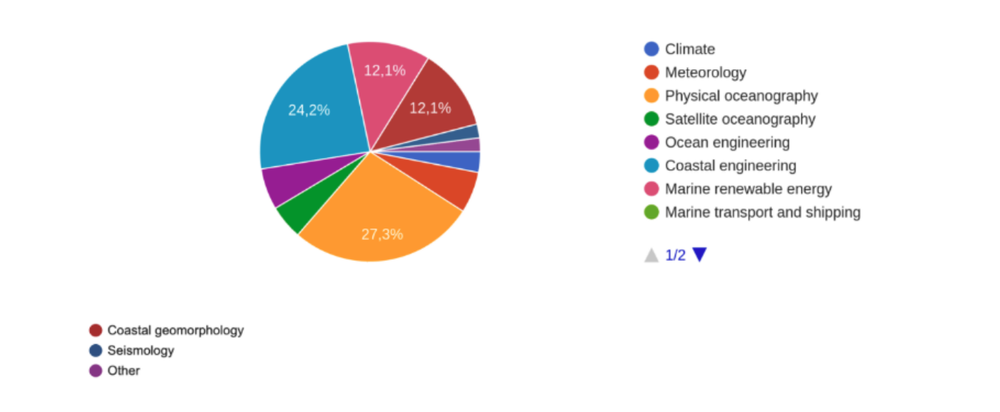
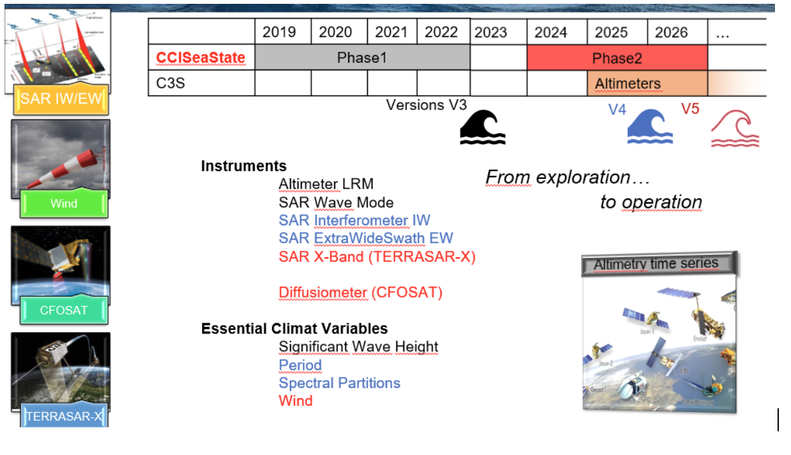
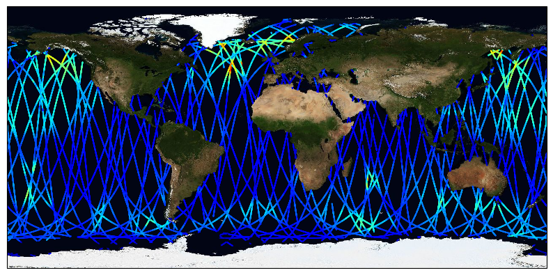
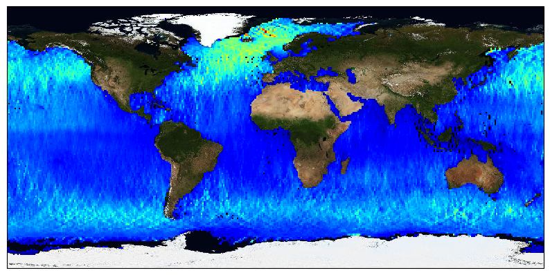
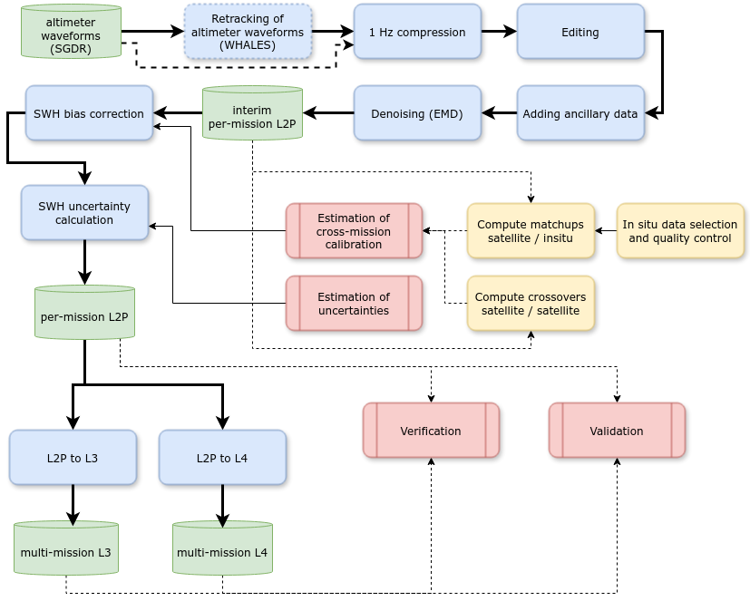
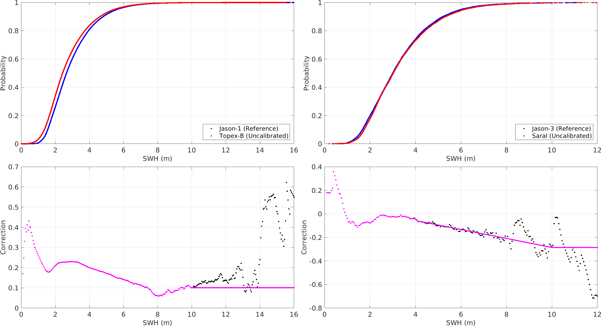
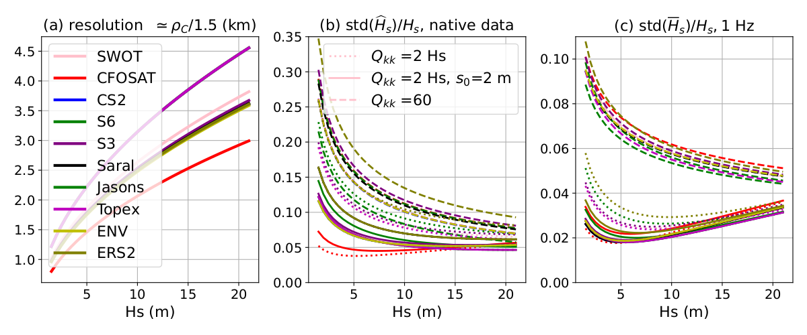
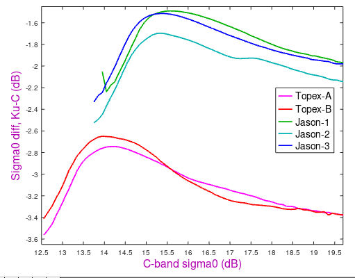
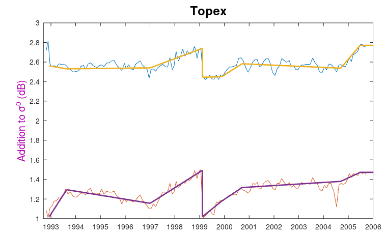

CCI Sea State version 5 Product User Guide#
This document presents the Product User Guide (PUG) for CCI Sea State datasets version 5. It describes the different datasets produced within the ESA CCI Sea State project, built upon state-of-the-art algorithms for the retrieval of sea state parameters, tracing also their evolutions and changes.
Currently, the version up to date is the fourth, (version 5) that have been made available in August 2025; this release improves and extends the version 1 and 3 altimeter time series for the period 2002 to 2024 and adds new products from the Synthetic Aperture Radar (SAR) instrument IW/EW image modes.
1. ESA Sea State CCI datasets in a nutshell#
1.1. Where do I get the data?#
The CCI Sea State dataset version 5 is available freely from Ifremer:
for FTP, go to: ftp://ftp.ifremer.fr/ifremer/cersat/data/ocean-waves/cci-seastate/v5/
for HTTPS, go to: https://data-cersat.ifremer.fr/data/ocean-waves/cci-seastate/v5/
Important
The official release of version 5 will also be accessible from ESA CCI Sea State Project web page at: https://climate.esa.int/en/projects/sea-state/data/.
1.2. What are the data products?#
For synthetic aperture radar (SAR), only L2P products are provided, consisting in sea state parameters observations over the radar swath separated into satellite directories, including all measurements with flags, corrections and ancillary parameters from other sources.
For altimetry, three products are delivered:
L2P : Along-track products separated into satellite directories, including all measurements with flags, corrections and ancillary parameters from other sources. These are expert products with rich content and no data loss. Provided in separate directories for altimeter and SAR-derived products.
L3 : Edited merged daily products retaining only quality-checked measurements from all altimeters over one day (one daily file), with simplified content (only a few key parameters). This type of content is close to what is delivered in NRT by the CMEMS project.
L4 : Monthly gridded products averaging quality_checked measurements from all available altimeters over a fixed resolution grid (1°x1°). These products are meant for statistics and visualization through the CCI toolbox.
Note
L2P and L3 products are most useful for the validation and or assimilation into numerical models: along-track data cannot resolve the fast variability of the sea state and therefore miss many wave events. The L2P and L3 data can also be used for long-term statistics, but the L4 product may be more suitable for these applications.
1.3. What is the difference between altimeter and off-nadir SAR data?#
Altimeters measure the significant wave height (Hs) all along the satellite track, covering both oceans, inland seas and lakes. The altimeter measurement corresponds to a very narrow footprint (2-10 km, depending on the wave height and satellite altitude). In the Sea State CCI project we provide a homogeneous historical processing that uses Low Resolution Mode (LRM) in the case of satellites that also operate in Delay-Doppler model (often abusively called “SAR mode”) .
Synthetic Aperture Radars (SARs) map the Earth surface at high resolution (pixels are typically less than 20 m. As a result SAR images resolve some of the wavelengths of the sea state and the unresolved waves also contribute to the properties of the image. Combining resolved and unresolved information allows estimates of the following sea state parameters: \(Hs\), mean periods \(T_{m0,-1}\) (often called the energy period), first moment \(T_{m0,1}\), second moment mean period \(T_{m0,2}\) (close to the zero crossing period), dominant swell wave height \(SW1\), secondary swell wave height \(SW2\), and windsea wave height \(SWW\) and windsea mean period \(TMW\). These 8 parameters are provided for all SAR data. In addition, swell partition parameters (height, period, direction) are provided as an experimental product for Sentinel 1 Wave Mode.
1.4. Coverage, resolution and the acquisition modes of SAR instruments#
Most SAR instruments toggle between different acquisition modes designed to optimize coverage and resolution, and each mode has a different sampling pattern. For example, Sentinel 1 A/B/C, use these 3 modes:
Wave mode (WV): each image is 20 km by 20 km, with one image every 100 km on the side of the satellite track. This mode is generally used in the middle of oceans.
Interferometric Wide Swath Mode (IW): these are 250 km wide, and wave parameters are provided on a 5 km resolution grid. This mode is generally used within 300 km from land, and for coastal seas (North Sea, Mediterranean Sea…)
Extra Wide swath (EW): these are 400 km wide and typically used in high latitudes where sea ice occurs.

Fig. 1.1 An example of S1-A and S1-B coverage with WV mode (red), IW mode (green) and EW mode (grey). The SM mode data (blue) is not used in Seastate CCI.#
1.5. What is the data format?#
All Seastate CCI use NetCDF4 Classic format. When appropriate, the data is on a grid: regular grid in latitude and longitude for the L4 data, and grid corresponding to the SAR image geometry for the SAR-derived L2P data for IW and EW modes.
1.6. What is the time span?#
The altimeter dataset covers the period August 1991 (starting with ERS-1) to December 2023.

Fig. 1.2 Overview of the time span of the different past, existing and future altimeters. The CCI Sea State datasets version 5 include among these missions: ERS-1, ERS-2, Topex-Poseidon , Jason-1, ENVISAT, Jason-2, CryoSat-2, SARAL, Jason-3, Sentinel-3 A, Sentinel-3 B and Sentinel-6.#
SAR-derived data starts in October 2014 for SAR IW mode with Sentinel 1A.
Bjorn Tings, Andrey Pleskachevsky DLR 2025
1.7. What is the spatial resolution?#
The L2P and L3 altimeter products are along-track with narrow swath and resolution of 7km. The L4 gridded products have a spatial resolution of 1°. For SAR data (https://sentiwiki.copernicus.eu/web/s1-products): Wave mode imagettes are approximately 20km/20km stamps every 100km. Wide swath mode is 5km grids approximately
1.8. I am interested in obtaining all the best quality wave height measurements for a particular region and am not concerned about quality control or which satellite the measurements are from.#
The L3 product contains all the significant wave height measurements that are considered good quality, merged from all available instruments, and splitted per day.
1.9. I am interested in obtaining quick statistics for large areas.#
The L4 product contains a statistical summary of the wave height measurements at a spatial resolution of 1° and temporal resolution of 1 month.
1.10. Who do I contact for further information?#
For general data enquiries contact the Ifremer data team: cersat@ifremer.fr
For application and science issues contact Guillaume Dodet: guillaume.dodet@ifremer.fr
2. The CCI Sea State project#
2.1. Sea state for climate#
The statistical properties of ocean waves (average heights, periods, directions…) are known as sea state and their measurements are used in coastal and ocean engineering (e.g. for defining heights and periods with a given return period).
{kind=link}
SeaState is an Essential Climate Variable that impacts:
navigation safety
any operations at sea (energy production) or on the coast
Long term and consistent time series are critical for managing ocean and coastal infrastructure, and planning for the future (adaptation…)
The key questions it raises are :
what is the wave climate today? (especially for extremes)
what interannual variability and trends can we expect?
How do we explain these variations? (winds, currents, sea ice … )
And the Central and specific work consists of:
estimating measurement uncertainties,
inter-calibration methods and uncertainties
sampling issues: complementarity of models & satellite data
2.2. Project overview#
The main objective of this Research & Development project is to provide a
consistent and long-term time series of sea-state parameters. In practice
the ongoing work is the second phase of the Sea state CCI project, and
builds upon methods and dataset already produced as part of the first phase.
Our work is thus an upgrade of the V3 version (last delivery of phase 1
which covered 2000-2022), and merger with V1 (which covered 1991 to 2008).
This project will deliver 2 versions: V4 in 2025 and V5 in 2026, including
different time spans, instruments, missions, variables…
We start from observation requirements laid out by GCOS, and the needs of both the climate research community, which are particularly laid out in the COWCLIP publications, and key applications communities that include coastal management and shipping. These requirements will be refined and evolved as part of the project.
Of primary concern is the accuracy and stability of the data set that produce. These include:
Significant wave height from satellite altimeters that include all the ESA missions, and Topex/Jason series.
Wave spectra from radar imagery: all wave mode from ERS to Sentinel 1 and a sample of larger image mode data. Including Partition Test data set from Sentinel-1 (ODL)
Wide swath SAR Imager data :
Interferometric (IW) + ExtraWide Swath (EW) (DLR)
SAR Envisat ASAR (DLR)
Sea state has never been the main focus of satellite altimetry. Except for the results of the Globwave project and new Copernicus Marine Service activities, wind and wave parameters from altimeters were a by-product of sea level estimates, leading to inconsistencies between sensors and satellite missions. Our project will thus carry out algorithm development to ensure the best possible quality of wave and wind products with a particular focus on consistency.
A particular challenge is posed by the strong evolution of measurement techniques, in particular going from Range-only to Delay-Doppler processing, and we will work towards harmonizing the processing to arrive at seamless products than span the years 2003 to 2024 as part of this project, and making possible longer time series. The data production system will be fully documented, making future transfer possible, notably to the C3S service for the most mature time series.
The project will provide time series of wave parameters (by mission - level 2, and consolidated - level 3) and gridded analyses of wave climate parameters (level 4). Based on these products we will work with the Earth observation and climate science community to identify and better analyze key processes that contribute to uncertainties in other ECVs (primarily sea ice and sea level). We also worked in phase 1 with the seismology community to make better use of microseism data for wave event detection and sea state trends analyses. But for the phase2, this is not the main focus.
The Project results, from the new algorithms, to the data set and their application in key areas will published in world class peer-reviewed scientific journals, in particular in time to contribute to IPCC Assessment Reports.
2.2.1. User requirements gathering#
Answering end users’ needs is one of our main concerns. Regularly, User Requirement Documents compile the synthesis of who are the users, what they require and how they use the datasets. User Consultations Meeting was also organised in phase 1 and will be renewed for phase 2 in order to link the upstream developments and the downstream uses.
Fig. 2.1 sums up the results of a survey sent to a large community of Wave interested people around the world (100 answers around 18 countries).

Fig. 2.1 Distribution among the field of applications#
2.2.2. The future#
Our main concern for the moment is to identify relevant metrics related to climatic evolution of the wave characteristics (monthly average evolution, number of extreme events…).
Starting with their energy (Significant Wave Height) we plan to expand the analysis to other parameters (spectral width, wavelength, direction…) derived from different types of sensors…
The idea is then (in Version V5) to explore other complementary types of observations (diffusiometer, XBand SAR…) and variables (Wind…).
A strong effort is also made to define relevant uncertainties associated with each datasets.
The most mature algorithms, data series and missions are then expected to be pushed towards (Copernicus Climate Change Service) that will prolongate operationally the time series on the flow.

3. Format conventions#
This section defines the general conventions applied to all CCI Sea State version 5 datasets, in terms of file naming, format and conventions.
3.1. Naming conventions#
All products are in NetCDF4 Classic format. They comply to the CCI Data Standard 2.2 and follow the CF 1.12 and ACDD 1.4 conventions.
The file nomenclature is based on form 2 of CCI recommendations :
ESACCI-<CCI Project>-<Processing Level>-<Data Type>-<Product String>[-<Additional Segregator>]-<IndicativeDate>[<Indicative Time>]-fv<File version>.nc
Where:
<CCI Project>: SEASTATE<Processing Level>: here L2P for along-track data, L3 for edited merged product and L4 for monthly averages<Data Type>: SWH for “Significant Wave Height”, ISSP for “Integrated Sea State Parameters”, WND for “Wind speed”<Product String>: contains the name of the mission for L2P<Additional Segregator>: optionally the name of algorithm used<Indicative Date>[<Indicative Time>]: The identifying date for this data set. Format is YYYYMMDDTHHMMSS, where YYYY is the four digit year, MM is the two digit month from 01 to 12 and DD is the two digit day of the month from 01 to 31. The date used should best represent the observation date for the data set. For along-track data it will be the time of the first measurement in the file.<File version>: File version number in the form n{1,}[.n{1,}] (That is 1 or more digits followed by optional . and another 1 or more digits.)
Examples:
L2P altimeter product:
ESACCI-SEASTATE-L2P-SWH-Jason-2-20170130T145103-fv01.ncL3 product:
ESACCI-SEASTATE-L3-SWH-MULTI_1D-20170130-fv01.ncL4 product:
ESACCI-SEASTATE-L4-SWH-MULTI_1M-201701-fv01.nc
3.2. Coordinate variables#
NetCDF coordinate variables provide scales for the space and time axes for the multidimensional data arrays, and are included for all dimensions that can be identified as spatio-temporal axes.
3.2.1. Temporal coordinates#
time is the time coordinate of the CCI Sea State datasets. It is computed to
the nearest second at least and then coded as continuous UTC time coordinates in
seconds from 00:00:00 UTC January 1, 1980 (which is the definition of the
CCI Sea State origin time, chosen to precede the start of useful altimeter or
SAR data record).
For L2P and L3 datasets, time is defined for each measurement within the
data files. For L4 datasets, a single time value is provided, corresponding to
the centre time of the averaging or collation window. In both case, the time
values are defined along the time axis dimension.
double time(time) ;
time:_FillValue = 1.e+20 ;
string time:long_name = "reference time of sst file" ;
string time:standard_name = "time" ;
string time:authority = "CF-1.12, ACDD-1.3" ;
string time:axis = "T" ;
string time:coverage_content_type = "coordinate" ;
string time:units = "seconds since 1981-01-01" ;
string time:calendar = "proleptic_gregorian" ;
3.2.2. Spatial coordinates#
lat and lon variables provide respectively the latitude and longitude of
each measurement within CCI Sea State dataset files. Latitudes are expressed
between -90° and +90° and longitudes between -180° and 180°.
A coordinates variable attribute (coordinates = "lon lat" ;) is
provided if the data are on a non-regular lat/lon grid (SAR image, swath or
along-track data).
A grid_mapping variable attribute (grid_mapping = "<projection name>" ;)
is provided if the data are mapped following a projection. Refer to the
CF convention[1] for standard projection names.
3.2.2.1. Along-track latitude/longitude (nadir altimeter)#
For altimeter along-track data (L2P, L3), the latitude and longitude values are
defined for each measurement along the time axis dimension.
double lon(time) ;
string lon:long_name = "longitude: 1 Hz" ;
string lon:units = "degrees_east" ;
string lon:standard_name = "longitude" ;
string lon:comment = "geographical coordinates, WGS84 projection" ;
string lon:authority = "CF-1.11, ACDD-1.3" ;
string lon:axis = "X" ;
lon:valid_range = -180., 180. ;
string lon:coverage_content_type = "coordinate" ;
double lat(time) ;
string lat:long_name = "latitude: 1 Hz" ;
string lat:units = "degrees_north" ;
string lat:standard_name = "latitude" ;
string lat:comment = "geographical coordinates, WGS84 projection" ;
string lat:authority = "CF-1.11, ACDD-1.3" ;
string lat:axis = "Y" ;
lat:valid_range = -90., 90. ;
string lat:coverage_content_type = "coordinate" ;
3.2.2.2. Non-regular latitude/longitude grids (swath, image)#
For non-regular gridded data following the sensor scanning pattern (such as SAR
images), x (columns) and y (lines) grid dimensions are referred
either as col (for the across-track dimension) androw (for the
along-track dimension).
In this case where data are gridded following the sensor pattern, no projection can be associated and lat/lon data have to be stored in 2-D arrays, as it is the case for along-swath data for low earth orbiting sensors. Therefore it only applies to L2P processing level products.
double lat(row, col) ;
lat:_FillValue = 1.e+20 ;
lat:standard_name = "latitude" ;
lat:long_name = "latitude" ;
lat:units = "degrees_north" ;
double lon(row, col) ;
lon:_FillValue = 1.e+20 ;
lon:standard_name = "longitude" ;
lon:long_name = "longitude" ;
lon:units = "degrees_east" ;
3.2.2.3. regular latitude/longitude grids#
For orthogonal regular geographic (lat-lon) gridded data (L4), x
(columns) and y (lines) grid dimensions are referred either as lat and
lon. Coordinate vectors are used. The elements of a coordinate vector array
are in monotonically increasing or decreasing order.
double lon(lon) ;
string lon:long_name = "longitude" ;
string lon:units = "degrees_east" ;
string lon:standard_name = "longitude" ;
string lon:comment = "geographical coordinates, WGS84 projection" ;
string lon:authority = "CF-1.12, ACDD-1.3" ;
string lon:axis = "X" ;
lon:valid_range = -180., 180. ;
string lon:coverage_content_type = "coordinate" ;
double lat(lat) ;
string lat:long_name = "latitude" ;
string lat:units = "degrees_north" ;
string lat:standard_name = "latitude" ;
string lat:comment = "geographical coordinates, WGS84 projection" ;
string lat:authority = "CF-1.12, ACDD-1.3" ;
string lat:axis = "Y" ;
lat:valid_range = -90., 90. ;
string lat:coverage_content_type = "coordinate" ;
3.3. Global attributes#
4. Nadir-altimetry datasets#
The main geophysical parameter provided by altimeters for sea state is the significant wave height (SWH). Three kinds of datasets are delivered, as summarized in table Table 4.1
Product |
L2 Pre-Processed Section 4.6 |
L3 Multi-Mission Section 4.8 |
L4 Multi-Mission Section 4.9 |
|---|---|---|---|
Acronym |
L2P |
L3 |
L4 |
Description |
SWH derived from Level 1 source data (wave forms) for a single mission but averaged at 1 Hz, typically in a satellite projection with geographic information. These expert data form the fundamental basis for higher-level products and require ancillary data and uncertainty estimates. Wind derived from altimeter radar backscatter are also provided. |
SWH measurements from L2P of different missions stitched together into daily files |
SWH measurements combined from a multiple missions into a monthly space-time grid. |
Grid specification |
Along-track observations |
Along-track observations |
Global regular lat-lon grid, 1°x1° |
Temporal resolution |
1 second averages along full or half orbits |
1 second averages into daily files |
Monthly |
Spatial resolution |
6-7 km |
6-7 km |
1°x1° |
Coverage |
Mission specific |
Native to data stream |
Global |
4.1. L2P#
L2P Along-track files from altimetry missions provide altimeter cross-calibrated SWH and wind measurements separated per satellite and pass (half-orbit), sometimes full orbit or sections of orbit (depending on the source provider for the altimeter data), including all measurements with flags, corrections and extra parameters from other sources. These are expert products with rich content and no data loss.

Fig. 4.1 Example of a L2P coverage#
The SWH and wind measurements are provided in two separate NetCDF file collections, as the cross-calibrated wind is computed for a limited set of missions only and not always over the whole mission lifetime because of inconsistent input backscatter measurements.
Table 4.2 below summarizes the included missions for each type of L2P.
L2P collection |
Missions |
|---|---|
SWH |
ERS-1, ERS-2, ENVISAT, GFO, TOPEX-Poseidon (both altimeters), Jason-1, Jason-2, Jason-3, SARAL, Cryosat-2, Sentinel-3 A, Sentinel-3 B, Sentinel-6 A, SWOT/Nadir, CFOSAT |
Wind |
TOPEX-Poseidon (TOPEX only), Jason-1, Jason-2, Jason-3, Sentinel-3 A, Sentinel-3 B, Sentinel-6 A |
4.2. L3#
Edited merged daily dataset retaining all valid and good quality SWH measurements from all L2P altimeters over one day (one daily file), with simplified content (only a few key parameters). This is close to what is delivered in NRT or Multi-Year time series by CMEMS project[1].
{kind=link}

Fig. 4.2 Example of a multi-mission L3 coverage#
4.3. L4#
Gridded products averaging valid and good SWH measurements from all available altimeters over a fixed resolution grid (1°x1°) on a monthly basis. This dataset is meant for statistics, and visualisation through the CCI toolbox.
{kind=link}

Fig. 4.3 Example of a multi-mission L4 coverage#
4.4. Altimetry missions#
The version 5 of CCI Sea State datasets includes for altimetry the missions described hereafter.
4.4.1. ERS-1#
Launch date : July 17, 1991
End of life date : March 31, 2000
Agency : ESA
Instrument : RA
Orbit characteristics :
Orbit type : Sun-synchronous near-circular polar orbit
Inclination : 98.52 degrees
Altitude : 785km
Nodal Period : approximately 100min (14,3 orbits per day)
Repeat Cycle : 35 days
Orbit life:
Tandem phase : from August 17, 1995 to June 6, 1996
Degraded status : from June 2, 1996 to March 11, 2000
4.4.2. TOPEX#
Launch date : August 10, 1992
End of life date : January 18, 2005
Agency : CNES/NASA
Instrument : NRA-SSALT
Orbit characteristics :
Orbit type : Non-heliosynchronous (prograde orbit)
Inclination : 66 degrees
Altitude : 1336 km
Nodal Period : 6745.72s
Repeat Cycle : 9.9156 days
Orbit life :
From August 2008 to September 2002 : in its nominal orbit.
Interleaved orbit from September 16, 2002 to October 18, 2005
4.4.3. ERS-2#
Launch date : April 21, 1995
End of life date : July 6, 2011
Agency : ESA
Instrument : RA
Orbit characteristics :
Orbit type : Sun-synchronous polar orbit (retrograde orbit)
Inclination : 98.52 degrees
Altitude : 785 km
Nodal Period : approximately 100min (14,3 orbits per day)
Repeat Cycle : 35 days
Orbit life :
Tandem phase : from August 17, 1995 to June 2, 1996
Degraded phase : from June 1, 2003 to July 6, 2011
4.4.4. JASON-1#
Launch date : December 7, 2001
End of life date : July 1, 2013
Agency : CNES/NASA
Instrument : Poseidon-2
Orbit characteristics :
Orbit type : Non-heliosynchronous (prograde orbit)
Inclination : 66 degrees
Altitude : 1336 km
Nodal Period : 6745.72s
Repeat Cycle : 9.9156 days
Orbit life :
Same orbit as Topex/Poseidon
Tandem phase : end on August 15, 2002
Interleaved orbit : from February 10, 2009 to May 7, 2012
Geodetic orbit : from May 7, 2012 to July 1, 2013
4.4.5. JASON-2#
Launch date : June 20, 2008
End of life date : October 1, 2019
Agency : CNES/NASA/EUMETSAT/NOAA
Instrument : Poseidon-3
Orbit characteristics :
Orbit type : Non-heliosynchronous (prograde orbit)
Inclination : 66 degrees
Altitude : 1336 km
Nodal Period : 6745.72s
Orbit life :
From June 2008 to October 2016 : in its nominal orbit.
Tandem phase with Jason-2 from February 12th to October 2nd 2016
Interleaved orbit : from October 14, 2016 to January 1, 2017
Geodetic orbit : from July 10, 2017 to October 1, 2019
4.4.6. JASON-3#
Launch date : January 17, 2016
End of life date : Active mission
Agency : CNES/NASA/EUMETSAT/NOAA
Instrument : Poseidon-3B
Orbit characteristics :
Orbit type : Non-heliosynchronous (prograde orbit)
Inclination : 66 degrees
Altitude : 1336 km
Nodal Period : 6745.72s
Repeat Cycle : 9.9156 days
Orbit life :
Tandem phase with Jason-2 from February 12th to October 2nd 2016
From January 2016 to April 2022 : in its nominal orbit.
Interleaved orbit : from April 25, 2022
4.4.7. GFO (GEOSat Follow-on)#
Launch date : February 10, 1998
End of life date : October 22, 2008
Agency : US Navy
Instrument : GFO-RA (GEOSat Follow-On Radar Altimeter)
Orbit characteristics :
Orbit type : Drifting orbit
Inclination: 108 degrees
Altitude: 789 km
Repeat cycle: 17 days
4.4.8. ENVISAT#
Launch date : March 1, 2002
End of life date : June 8, 2012
Agency : ESA
Instrument : RA-2
Orbit characteristics :
Orbit type : Sun-synchronous (near-polar orbit)
Inclination: 98.55 degrees
Altitude: 799.38 km
Repeat cycle: 35 days
Orbit life :
From March 2002 to April 2012: Operated in its nominal orbit.
Tandem phase : from June 18, 2003 to October 20, 2003
4.4.9. CRYOSAT-2#
Launch date : April 8, 2010
End of life date : Still operational
Agency : ESA
Instrument : SIRAL
Orbit characteristics :
Orbit type: Non-sun-synchronous (prograde orbit)
Inclination: 92 degrees
Altitude: 717 km
Repeat cycle: 369 days
4.4.10. SARAL#
Launch date : February 25, 2013
End of life date : Still operational
Agency : CNES/ISRO
Instrument : AltiKa
Orbit characteristics :
Orbit type: Sun-synchronous (near-polar orbit)
Inclination: 98.55 degrees
Altitude: 800 km
Repeat cycle: 35 days
4.4.11. SENTINEL-3A#
Launch date : February 16, 2016
End of life date : Still operational
Agency : ESA
Instrument : SRAL
Orbit characteristics :
Orbit type: Sun-synchronous (near-polar orbit)
Inclination: 98.65 degrees
Altitude: 814.5 km
Repeat cycle: 27 days
Orbit life :
Tandem phase : from June 7, 2018 to October 16, 2018
4.4.12. SENTINEL-3B#
Launch date : April 25, 2018
End of life date : Still operational
Agency : ESA
Instrument : SRAL
Orbit characteristics :
Orbit type: Sun-synchronous (near-polar orbit)
Inclination: 98.65 degrees
Altitude: 814.5 km
Repeat cycle: 27 days (in tandem with Sentinel-3A)
Orbit life :
Operating in tandem with Sentinel-3A for better spatial and temporal coverage.
Tandem phase : from June 7, 2018 to October 16, 2018
4.4.13. SENTINEL-6A#
Launch date : November 21, 2020
End of life date : Still operational
Agency : ESA/EUMETSAT/EU/CNES/NOAA/NASA
Instrument : Poseidon-4
Orbit characteristics :
Orbit type: Non-sun-synchronous (prograde orbit)
Inclination: 66 degrees
Altitude: 1336 km
Repeat cycle: 9.9156 days
4.4.14. CFOSAT#
Launch date : October, 29 Oct 2018
End of life date : Still operational (expected: 2026)
Agency : CNES/NSOAS
Instrument : SWIM (Nadir beam)
Orbit characteristics :
Orbit type: Sun-synchronous
Inclination: 97.5 degrees
Altitude: 519 km
4.4.15. SWOT#
Launch date : December, 16 2022
End of life date : Still operational (expected: Dec 2029)
Agency : CNES/NASA/CSA/UKSA
Instrument : Poseidon-3C
Orbit characteristics :
Orbit type: Inclined, Non-sun-synchronous
Inclination: 77.6 degrees
Altitude: 891 km
Repeat cycle: 21 days
4.5. Processing details#
This section describes in details the processing workflow for the altimeter data in CCI Sea State version 5, as illustrated in figure Fig. 4.4.

Fig. 4.4 Main steps in altimeter data processing workflow#
In a nutshell:
Significant wave height is computed from the original altimeter waveforms through the retracking step with the WHALES retracker selected by CCI Sea State expert, though for some missions the values produced by the space agencies default retracker are used.
the full resolution SWH and sigma0 measurements are compressed to 1 Hz (one value every second) to produce a L2 product
editing of the 1 Hz values is performed to flag bad or suspect values (and set the quality confidence variable
quality_level)ancillary variables extracted from different sources (models and observations, climatology, land, sea ice,…) are added into the L2 product.
bias correction of SWH and backscatter (\(\sigma^0\)) is estimated for each mission to ensure consistent time series of measurements across all missions, and a corrected value added to the L2 product
denoising is applied to the corrected SWH values using Empirical Mode Decomposition (EMD) filter and added to the L2P product as a new
swh_denoisedvariableuncertainty of SWH values is estimated and added to the L2P as a new
swh_uncertaintyvariablethe wind speed is calculated from the cross calibrated \(\sigma^0\) using the same retrieval algorithm
the L2P measurements are aggregated into multi-mission observation files (L3) and monthly statistics of SWH (L4) are calculated
4.5.1. SGDR input data#
The table Table 4.3 summarizes the list of input altimeter data used in the processing workflow:
Mission |
Version |
Provider |
Temporal coverage |
|---|---|---|---|
ERS-1 |
REAPER |
ESA |
03/08/1991 to 02/06/1996 |
ERS-2 |
REAPER |
ESA |
14/05/1995 to 02/07/2003 |
JASON-1 |
Version E |
AVISO |
15/01/2002 to 21/06/2013 |
JASON-2 |
Version D |
AVISO |
04/07/2008 to 01/10/2019 |
JASON-3 |
Version F |
AVISO |
12/02/2015 to 07/01/2025 |
JASON-3 |
Version G |
AVISO |
30/01/2025 to 31/12/2025 |
TOPEX-Poseidon |
Version F |
AVISO |
13/10/1992 to 04/10/2005 |
ENVISAT |
Version 3 |
ESA |
14/05/2002 to 08/04/2012 |
GFO |
NOAA |
08/01/2000 to 17/09/2008 |
|
CRYOSAT-2 |
Version E |
ESA |
16/07/2010 to 31/12/2025 |
SARAL |
Version F |
AVISO |
14/03/2013 to 31/12/2025 |
Sentinel-3A |
Version 005 |
EUMETSAT |
01/07/2016 to 08/11/2024 |
Sentinel-3A |
Version G61 |
EUMETSAT |
08/11/2024 to 31/12/2025 |
Sentinel-3B |
Version 005 |
EUMETSAT |
08/05/2018 to 07/11/2024 |
Sentinel-3B |
Version G61 |
EUMETSAT |
08/11/2024 to 31/12/2025 |
Sentinel-6A |
Version G01 |
EUMETSAT |
17/12/2020 to 31/12/2025 |
SWOT Nadir |
Version S02 |
AVISO |
16/02/2023 to 31/12/2025 |
CFOSAT Nadir |
Version OP06 |
AVISO |
19/04/2019 to 09/10/2024 |
CFOSAT Nadir |
Version OP07 |
AVISO |
09/10/2024 to 31/12/2025 |
Note on TOPEX-POSEIDON
According to TOPEX version F documentation:
From launch through repeat cycle 16, various changes to the sensors were performed. Data up to repeat cycle 16 have varying quality and should not be used for climate studies. They are ignored in CCI Dataset.
TOPEX Side A was active from September 22, 1992 to February 10, 1999, and Side B was active from February 10, 1999 to end of mission. Users are advised to treat the data from Side A and Side B as two independent time series. No effort has been made to enforce continuity between Side A and Side B in this reprocessed data. They are separated in CCI processing.
TOPEX Side A calibration data have a jump on April 1, 1996. This very likely causes a jump in all TOPEX altimeter geophysical measurements at this time. Users are advised to treat data from Side A1 (Launch – April 1, 1996) and Side A2 (April 1, 1996 – February 10, 1999) as two independent time series. No effort has been made to enforce continuity between Sides A1 and A2. They are separated in CCI processing.
Sweep Calibration measurements to monitor the TOPEX point target response only started from September 8, 1998 onward for both Side A and Side B. Users are cautioned that this may cause larger errors in the reprocessed Side A data. The Sweep Calibration data available for Side A from September 8, 1998 to February 10, 1999 are not used by themselves to process the Side A data in this product. Instead, for Side A, the available Sweep Calibrations have been used to generate a model for oversampled calibrations. The nominal Cal-1 data are used with this model to process all of Side A data to generate a consistent Side A time series.
Three 8-track tape recorders (TR A, B, C) were utilized to continuously record the 16K data stream, acquiring over 99.9% of all spacecraft and science data. However, after 5 years of excellent performance the recorders, starting with TRB, slowly started to degrade. Work arounds involving recording and playback speed restored some performance for periods. TRB was deactivated in September 2001 and TRA in October 2002. Real time acquisition through TDRSS filled much of the loss allowing approximately 90% data coverage. Finally, in October 2004 TRC failed. Real time data acquisition provided approximately 82% data coverage until the end of the mission.
4.5.2. Retracking#
The retracking step calculates 20 Hz SWH measurements (40 Hz for Saral) from the altimeter waveforms available in the SGDR products (Level 1) provided by space agencies. In CCI SeaState version version 5, we have performed a complete retracking of several non-SAR altimeters with TUM’s retracker WHALES, while for others we used the full resolution SWH measurements already processed by the space agencies (see Table 4.4 for a summary). Reasons why some altimeters were not retracked with WHALES in this release include: non availability of the waveforms, non applicability of WHALES to an altimeter (e.g. SAR altimeters, lack of technical information to adapt the retracker), or postponement to a future release (CFOSAT/Nadir, …).
The Low Resolution Mode (LRM) waveforms are characterised by a rising leading edge that becomes less steep as the SWH increases, and a slowly decreasing trailing edge. The standard retracking methods are still affected by a suboptimal distribution of the residuals in the fitting process, which results in high level of noise in the estimations. WHALES is designed as a unified way to solve these problems and is based on two principles:
The application of a weighted fitting solution, whose weights are adapted to the SWH in order to guarantee a more uniform distribution of the residuals during the iterative fitting. This guarantees significantly more precise estimations.
A subwaveform strategy to focus the retracking on the portion of the signal of interest, avoiding heterogeneous backscattering in the trailing edge (partially inherited from the ALES retracker, Passaro et al., 2014). This guarantees efficiency in the coastal zone and a better representation of the oceanic scales of variability.
Moreover, a revisiting of the look-up tables used to correct for the Gaussian approximation of the Point Target Response in the Brown model ensures that the accuracy in the estimation is tailored to the new retracking solution.
References
Passaro M., Cipollini P., Vignudelli S., Quartly G., Snaith H.: ALES: A multi-mission subwaveform retracker for coastal and open ocean altimetry. Remote Sensing of Environment 145, 173-189, https://doi.org/10.1016/j.rse.2014.02.008, 2014
Table 4.4 summarized the retracker used for each mission for significant wave height, whether the retracking was performed by CCI Sea State production team (WHALES) or a third party agency:
source |
period |
retracker |
|---|---|---|
ERS-1 |
07/1991 to 03/2000 |
WHALES |
ERS-2 |
04/1995 to 07/2011 |
WHALES |
Jason-1 Version E |
01/2002 to 07/2013 |
WHALES |
Jason-2 Version D |
06/2008 to 10/2019 |
WHALES |
Jason-3 Version F |
02/2016 to 01/2025 |
WHALES |
Jason-3 Version G |
01/2025 to 12/2025 |
WHALES |
Topex Version F |
08/1992 to 01/2006 |
MLE3 |
GFO |
01/2000 to 09/2008 |
|
Envisat Version 3 |
03/2002 to 04/2012 |
WHALES |
CryoSat-2 Version E |
07/2010 to now |
WHALES |
SARAL Version F |
02/2013 to now |
WHALES |
Sentinel-6 A Version G |
03/2020 to 12/2023 |
WHALES |
Sentinel-3 A Version 005 |
02/2016 to now |
MLE4 |
Sentinel-3 B Version 005 |
04/2018 to now |
MLE4 |
SWOT Nadir |
02/2023 to 12/2025 |
WHALES |
CFOSAT OP06 |
04/2019 to 10/2024 |
Adaptive |
CFOSAT OP07 |
10/2024 to 12/2025 |
Adaptive |
For sigma0, the measurements from the original retracking performed by the agency which provided the input data (SGDR) were used, with no correction by CCI Sea State for this version. Table 4.5 summarized the retracker used for each mission for sigma0 by these agencies:
source |
period |
retracker (per band) |
|---|---|---|
ERS-1 |
07/1991 to 03/2000 |
REAPER/MLE3 (Ku) |
ERS-2 |
04/1995 to 07/2011 |
REAPER/MLE3 (Ku) |
Jason-1 Version E |
01/2002 to 07/2013 |
MLE3 (Ku, C) |
Jason-2 Version D |
06/2008 to 10/2019 |
MLE3 (Ku, C) |
Jason-3 Version F |
02/2016 to 01/2025 |
MLE3 (Ku, C) |
Jason-3 Version G |
01/2025 to 12/2025 |
MLE3 (Ku, C) |
Topex Version F |
08/1992 to 01/2006 |
MLE3 (Ku, C) |
Envisat Version 3 |
03/2002 to 04/2012 |
MLE3 (C) |
CryoSat-2 Version E |
07/2010 to now |
Ocean CFI/MLE4 (Ku) |
SARAL Version F |
02/2013 to now |
MLE4 (Ka) |
Sentinel-6 A Version G01 |
03/2020 to 12/2025 |
MLE3 (Ku, C) ? |
Sentinel-3 A Version 005 |
02/2016 to ? |
MLE4 (Ku), MLE3 (C) |
Sentinel-3 A Version G61 |
MLE4 (Ku), MLE3 (C) ? |
|
Sentinel-3 B Version 005 |
04/2018 to ? |
MLE4 (Ku), MLE3 (C) |
SWOT Nadir |
02/2023 to 12/2025 |
? |
CFOSAT OP06 |
04/2019 to 10/2024 |
Adaptive ? |
CFOSAT OP07 |
04/2019 to 10/2024 |
Adaptive ? |
4.5.3. Compression to 1 Hz#
The CCI Sea State Dataset version 5 provides 1 Hz SWH measurements. These 1 Hz measurements are calculated by averaging groups of consecutive full resolution 20 Hz (18 Hz for Envisat or Topex, 40 Hz for SARAL).
The method used to average the full resolution measurements into 1 Hz values is the same for all altimeters. The groups of full resolution measurements used to calculate the 1 Hz values are exactly the same as in the source Agency’s GDR and SGDR products. Both CCI and Agency files can be compared one to one, have the same number of measurements, and the same latitude, longitude, time for each 1 Hz measurement.
For each group of valid (the measurements remaining after the editing
described above) measurements, the 1 Hz SWH value is computed as the median
of the remaining full resolution SWH values and copied to swh variable.
Moreover, the swh_num_valid variable is computed as the number of
remaining valid full resolution measurements and the swh_rms variable is
computed as the root mean square of the deviation from the median,
considering only valid full resolution measurements.
The same method is used to calculate 1 Hz sigma0 values from the full resolution sigma0.
The compression of the full resolution (20/40 Hz) SWH and sigma0 measurements into 1 Hz values follows these steps:
Full resolution (20/40 Hz) SWH and sigma0 values are flagged as land when their distance to coast is greater than 1000m, based on the Goddard Space Flight Center (GSFC) 1km resolution grid of distance to coast. They are ignored in the compression process.
Full resolution measurements flagged as bad by the retracker are discarded. These measurements are flagged as bad, for altimeters retracked with WHALES, when the fitting error is greater than 0.3. In Agency’s SGDR, a quality variable is usually associated with the SWH and sigma0 variables and used as a substitute here. Table 4.6 and Table 4.7 provides, respectively for SWH and sigma0, the source variable used as input for the full resolution measurements, the associated quality variable used for this editing and condition tested to discard the measurements.
Full resolution SWH measurements not in the -0.5 to 30 meter range are also discarded.
Among the remaining full resolution SWH measurements, outliers are discarded. The outlier detection scheme is based on the maximum absolute deviation (MAD) for a 3-sigma criterion, meaning:
only 20 Hz SWH values within [median(SWH) - 3 * MAD(SWH), median(SWH) + 3 * MAD(SWH)] interval are kept
with: MAD(SWH) = 1.4286 * median(abs(SWH - median(SWH)))
The median of the remaining measurements is selected as 1 Hz value. When there were less than 6 (12 for SARAL) valid remaining measurements, the 1 Hz value is flagged as bad in the
quality_levelvariable.
Source |
SWH |
SWH quality |
|---|---|---|
Jason-1 Version E |
swh_WHALES_20hz |
swh_WHALES_qual_20hz == 0 |
Jason-2 Version D |
swh_WHALES_20hz |
swh_WHALES_qual_20hz == 0 |
Jason-3 Version F |
swh_WHALES_20hz |
swh_WHALES_qual_20hz == 0 |
Jason-3 Version G |
swh_WHALES_20hz |
swh_WHALES_qual_20hz == 0 |
Topex Version F |
swh_20hz_ku |
swh_used_20hz_ku == 0 |
Envisat Version 3 |
swh_WHALES_20hz |
swh_WHALES_qual_20hz == 0 |
ERS-1 REAPER |
swh_WHALES_20hz |
swh_WHALES_qual_20hz == 0 |
ERS-2 REAPER |
swh_WHALES_20hz |
swh_WHALES_qual_20hz == 0 |
CryoSat-2 Version E |
swh_WHALES_20hz |
swh_WHALES_qual_20hz == 0 |
Saral Version F |
swh_WHALES_20hz |
swh_WHALES_qual_20hz == 0 |
Sentinel-6A Version G01 |
swh_WHALES_20hz |
swh_WHALES_qual_20hz == 0 |
Sentinel-3A Version 005 |
swh_ocean_20_plrm_ku |
swh_ocean_qual_20_plrm_ku == 0 |
Sentinel-3A Version G61 |
swh_ocean_20_plrm_ku |
swh_ocean_qual_20_plrm_ku == 0 |
Sentinel-3B Version 005 |
swh_ocean_20_plrm_ku |
swh_ocean_qual_20_plrm_ku == 0 |
Sentinel-3A Version G61 |
swh_ocean_20_plrm_ku |
swh_ocean_qual_20_plrm_ku == 0 |
SWOT Nadir version S02 |
swh_WHALES_20hz |
swh_WHALES_qual_20hz == 0 |
CFOSAT OP06 |
swh |
flag_valid_swh_1Hz == 0 |
CFOSAT OP07 |
swh |
flag_valid_swh_1Hz == 0 |
For the compression of the sigma0, the processing is the same. Full resolution sigma0 measurements are discarded if not in the range: [7, 30] dB (except for SARAL Ka sigma0: [-6.5, 23.]).
Important
sigma0, in C and Ku band (Ka for SARAL), are always taken from the agency’s SGDR, even when using WHALES to estimate SWH using MLE3 Ku band sigma0 when available, as summarized in Table 4.7.
Source |
Sigma0 |
Sigma0 quality |
|---|---|---|
Jason-1 Version E |
sig0_20hz_ku |
sig0_used_20hz_ku == 0 |
sig0_20hz_c |
sig0_used_20hz_c == 0 |
|
Jason-2 Version D |
sig0_20hz_ku_mle3 |
sig0_used_20hz_ku_mle3 == 0 |
sig0_20hz_c |
sig0_used_20hz_c == 0 |
|
Jason-3 Version F |
sig0_ocean_mle3 |
sig0_ocean_mle3_compression_qual == 0 |
sig0_ocean |
sig0_ocean_compression_qual == 0 |
|
Jason-3 Version G |
sig0_ocean_mle3 |
sig0_ocean_mle3_compression_qual == 0 |
sig0_ocean |
sig0_ocean_compression_qual == 0 |
|
Topex Version F |
sig0_20hz_ku_mle3 |
sig0_used_20hz_ku == 0 |
Envisat Version 3 |
sig0_ocean_20_ku |
sig0_ocean_qual_20_ku == 0 |
ERS-1 REAPER |
ocean_sig0_20hz |
ocean_sig0_used_20hz |
ERS-2 REAPER |
ocean_sig0_20hz |
ocean_sig0_used_20hz |
CryoSat-2 Version E |
sig0_1_20_ku |
|
SARAL Version F |
sig0_40hz |
sig0_used_40hz == 0 |
Sentinel-6 A Version F08 |
ku_sig0_ocean_mle3 |
ku_sig0_ocean_mle3_qual != 1 |
c_sig0_ocean |
c_sig0_ocean_qual != 1 |
|
Sentinel-3 A Version 005 |
sig0_ocean_20_plrm_ku |
sig0_ocean_qual_20_plrm_ku == 0 |
sig0_ocean_20_c |
sig0_ocean_qual_20_c == 0 |
|
Sentinel-3 B Version 005 |
sig0_ocean_20_plrm_ku |
sig0_ocean_qual_20_plrm_ku == 0 |
sig0_ocean_20_c |
sig0_ocean_qual_20_c == 0 |
|
SWOT Nadir version S02 |
sig0_ocean_mle3 |
sig0_ocean_mle3_compression_qual == 0 |
sig0_ocean |
sig0_ocean_compression_qual == 0 |
|
CFOSAT OP06 |
sigma0 |
flag_valid_sigma0_1Hz == 0 |
CFOSAT OP07 |
sigma0 |
flag_valid_sigma0_1Hz == 0 |
S-band sigma0 were ignored for Envisat as it was found they were systematically flagged as bad in the SGDR product.
4.5.4. Editing#
The quality level of SWH measurement, provided in the quality_level variable
is estimated by applying a suite of specific tests. When positive, a test will
downgrade a SWH measurement (starting initially with the quality level inherited
from the 1 Hz compressed data file) to a lower value, as given in the following
table. The result of each applied test is summarized in the corresponding
rejection_flags variable.
Validity test |
Assigned quality level |
|---|---|
|
2 |
|
1 |
|
1 |
|
1 |
|
1 |
4.5.4.1. Test on SWH RMS (swh_rms_outlier)#
As documented in Sepulveda et al. (2015), SWH measurements derived from radar altimeter measurements can be contaminated by the presence of land in the footprint, strong rain events, and so-called “sigma0 blooms” due to weak winds or surface slicks. According to these authors, the standard deviation of the full resolution (20Hz/40Hz) SWH values over one second (hereinafter called SWH RMS) is one of the most relevant parameter to detect erroneous values of SWH. Since the SWH RMS level strongly depends on SWH, constant threshold values are not adequate to efficiently remove SWH RMS outliers.
Therefore, Sepulveda et al. (2015) and Queffeulou (2016) proposed a methodology to set a statistical threshold on SWH RMS that depends on SWH, and which can be used a posteriori to filter out erroneous SWH measurements. Since the SWH RMS for a given narrow SWH presents a log-normal distribution, these authors proposes to estimate the upper threshold for the logarithm of SWH RMS as the sum of the mean value and thrice the standard deviation. Moreover, in order to reduce discontinuity in the SWH RMS threshold function for large SWH values, where the number of records is too low to derive robust statistics, a second-order polynomial function is fitted.
The methodology implemented to determine a SWH RMS LUT for each mission of the Sea State CCI version 5 dataset can be described as follows:
for each cycle of the mission duration, SWH and SWH RMS measurements are sampled and invalid measurements are rejected based on the land mask and SWH range quality flags;
the mean and standard deviation of log(SWH RMS) are computed for SWH bins of 0.5 m width, ranging from 0 to 15 m, with a 0.05 m increment. Only bins with more than 100 values are considered;
upper threshold on SWH RMS are computed for each SWH bin as : \(\exp(mean(\log{}swh\_rms)+3\times std(\log{}swh\_rms))\);
a second-order polynomial function is fitted to the SWH RMS threshold function for SWH values comprised between 3 and 10m and is extrapolated up to SWH = 12m;
a look-up table (LUT) of SWH RMS thresholds is derived by combining for each cycle the SWH RMS threshold values for SWH lower than 3m and the values of the polynomial function for SWH higher than 3m; for SWH above 12 m, a constant value equal to the SWH RMS threshold at 12m is taken;
the final LUT is computed as the ensemble mean of the N cycle LUTs;
Note that the selection of the lower and upper bounds (3-10m) used to estimate the second-order polynomial function are mission specific, and is determined for each method from visual inspection of the SWH_RMS = f(SWH) function.
A significant improvement with respect to the Sea State CCI dataset version 4 is the fact that the ensemble average LUT is now computed over the full mission duration and not on a sub sample of 8 cycles, as was done before.
4.5.4.2. Test on SWH outliers (outlier_test)#
Above quality flags and tests are not sufficient to discard all the erroneous SWH data. Spurious measurements are still observed: some are located in the vicinity of the coast where some land can be within the altimeter footprint, or in areas of high scattering resulting in so- called sigma0 blooms (e. g. Thibaut et al. 2007). Some other individual spurious measurements (corresponding mainly to high values of SWH) are not explained. Consequently the data are filtered to eliminate these measurements.
The screening is based on the analysis of the differences between successive along track SWH measurements, using along track running windows, 100 km wide. For each measurement the along track data within 50 km each side are selected. This represents a maximun number of 15 (Envisat) to 19 (Jason) selected data. Then over this segment the 2 extreme SWH data are discarded, and the mean value (m) and standard deviation (s) are estimated over the residual data set. If the SWH value is outside the interval defined by m ± 4s, then this data is considered as erroneous and is discarded. Up to 3 iterative passes were empirically adjusted for the processing.
4.5.5. Ancillary data#
The base L2 compressed files are enriched with additional external sources information.
4.5.5.1. Ancillary atmospheric model variables#
Complementary ocean or atmospheric variables are taken from ECMWF ERA5 reanalysis, using spatial and temporal linear interpolation at measurement point.
Variable |
Description |
|---|---|
tclw |
Total column cloud liquid water |
t2m |
2 metre temperature |
sst |
Sea surface temperature |
u10 |
10 metre U wind component |
v10 |
10 metre V wind component |
sp |
Surface pressure |
4.5.5.2. Ancillary wave model variables#
Complementary sea state variables are taken from ECMWF ERA5 reanalysis (WAM model for waves) and Ifremer Wave Watch 3 hindcast run, using spatial and temporal linear interpolation at measurement point.
Variable |
Description |
|---|---|
swh |
Significant height of combined wind waves and swell |
pp1d |
Peak wave period |
p1ps |
Mean wave period based on first moment of swell |
swh1 |
Significant wave height of first swell partition |
mwd1 |
Mean wave direction of first swell partition |
mwp |
Mean wave period |
mwd |
Mean wave direction |
shww |
Significant height of wind waves |
mdww |
Mean direction of wind waves |
mpww |
Mean period of wind waves |
Variable |
Description |
|---|---|
uwnd |
10 metre U wind component |
vwnd |
10 metre V wind component |
hs |
Significant height of wind and swell waves |
t02 |
Mean period T02 |
t0m1 |
Mean period T0m1 |
1/fp |
Wave peak frequency |
dir |
Wave mean direction |
skw |
skewness |
qkk |
k-peakedness |
Note
The WW3 model configuration ran for this ancillary source uses surface currents (from CMEMS) and icebergs computed from altimetry and only available from 1993. The configuration used for the years 1991-1992 is therefore different and not full consistent with the model configuration used from 1993 onward.
4.5.5.3. Ancillary sea ice concentration#
Different sources are combined for sea ice concentration, as the best resolution datasets (25 km) do not cover the full CCI Sea State temporal coverage. For each source, we use the closest in time concentration map, up to three days apart in case it is missing for a given day, before switching to the next source in line.
Product |
Variable |
Temporal Coverage |
Description |
|---|---|---|---|
OSISAF-438 |
ice_conc |
2021-onward |
AMSR-2 Interim Sea Ice Concentration Climate Data Record from MetNo |
OSI-458 |
ice_conc |
2013-2020 |
AMSR Sea Ice Concentration Climate Data Record from OSI SAF (doi: 10.15770/EUM_SAF_OSI_0015) |
SICCI-HR-SIC |
ice_conc |
1991-2020 |
High(er) Resolution Sea Ice Concentration Climate Data Record Version 3 from CCI Sea Ice+ (SSM/I and SSMIS) (doi: 10.5285/eade27004395466aaa006135e1b2ad1a) |
OSISAF-450-a1 |
ice_conc |
1990-1991 |
Sea Ice Concentration Climate Data Record Version 3 (SMMR, SSM/I, and SSMIS) from the EUMETSAT OSI SAF (doi: 10.15770/EUM_SAF_OSI_0023) |
4.5.5.4. Bathymetry#
The bathymetry depth is taken from the 15 arc-second resolution General Bathymetric Chart of the Oceans (GEBCO), 2024 ( https://doi.org/10.5285/1c44ce99-0a0d-5f4f-e063-7086abc0ea0f) which can be found at: https://www.gebco.net/.
It is resampled on each L2P measurement location using closest neighbour.
4.5.5.5. Distance to coast#
The distance to closest shoreline is taken from the gridded data set of distances from the nearest coastline available at PacIOOS (https://www.pacioos.hawaii.edu/metadata/dist2coast_1deg.html) . Negative distances represent locations over land (including land-locked bodies of water), while positive distances represent the ocean. NASA’s Ocean Biology Processing Group (OBPG) generated this data set using the Generic Mapping Tools (GMT) software package. Distances were computed with GMT using its intermediate-resolution coastline and then gridded globally at a spatial resolution of 0.04 degrees. Bilinear interpolation was then applied to increase the spatial resolution to 0.01 degrees. There is an uncertainty of up to 1 km in the computed distance at any given point.
It is resampled on each L2P measurement location using closest neighbour.
4.5.6. SWH bias correction#
4.5.6.1. General organization of the method#
The bias correction method implemented for the Sea State CCI version 5 dataset includes two main components: the first component is the SWH cross-mission intercalibration, which aims at reducing the inter-mission bias; the second component is the SWH absolute calibration, which aims at reducing the bias between altimeter missions and in situ SWH measurement from a global wave buoy network. An additional component – called intra-calibration - is required for specific missions that suffer from temporal heterogeneity. The overall methodology is based on three types of dataset:
collocated SWH records from two reference altimetry missions flying closely behind each other along the same orbit during their tandem phases (hereafter called tandem records);
collocated measurements between a reference mission and a non-reference mission at their crossover locations (crossover records);
collocated measurements between reference missions and in situ buoy SWH measurements (buoy matchup records).
Reference missions
Reference altimetry missions are satellite missions that provide high-accuracy, continuous measurements of sea surface height from a stable reference orbit, forming the backbone of global sea level monitoring. These missions include carefully coordinated tandem phases, during which a new satellite flies closely behind its predecessor to enable cross-calibration and ensure data continuity across successive missions. In this document reference altimetry missions refers to the current altimetry mission Sentinel-6 A (Michael Freilich) and the four historical altimetry missions Topex, Jason-1, Jason-2, and Jason-3. Note that for Topex, only data from the Topex Side B instrument are used as reference, since the Topex Side A instrument showed signs of degradation before the tandem phase with the Jason-1 mission.
The bias correction methodology is made of the following steps:
the five reference altimetry missions Topex, Jason-1/2/3 and Sentinel-6 A are intercalibrated using tandem SWH records. For this purpose, Jason-3 SWH records are (arbitrarily) considered as the reference and the four other missions are aligned to its records;
the five intercalibrated reference missions are then calibrated against in situ measurements (absolute calibration) using buoy matchups. For this purpose, it is assumed that all reference altimetry missions, once intercalibrated with each other, present similar bias patterns with respect to in situ data so that a single bias correction function can be derived for all missions. This assumption allows to increase the number of altimeter-buoy data pairs and extend the validity range of the calibration;
the non-reference missions are finally intercalibrated against the bias corrected reference altimetry missions based on the crossover records with the reference mission presenting the longest overlap;
The reference dataset used to correct each altimetry mission of the Sea State CCI version 5 dataset, as well as the number of available records are presented in Table 4.13.
In addition to these three steps, an additional intra-calibration step was necessary for three specific missions (Topex Side A, GFO and SARAL), which presented degraded performance over a limited time period. This intra-calibration step is further described in Section 4.5.6.4.
Mission |
Reference dataset |
Data type |
Number of records |
|---|---|---|---|
Inter-calibration of reference missions |
|||
Sentinel-6 A |
Jason-3 |
Tandem |
10,032,474 |
Jason-3 |
N/A |
N/A |
N/A |
Jason-2 |
Jason-3 |
Tandem |
10,654,786 |
Jason-1 |
Jason-2 (intercalibrated) |
Tandem |
8,703,256 |
TOPEX Side B |
Jason-1 (intercalibrated) |
Tandem |
9,364,549 |
Absolute calibration of reference missions |
|||
TP, J1/2/3,S6 (intercalibrated) |
Wave buoys |
Matchup |
44,507 |
Inter-calibration of non-reference missions |
|||
SWOT |
Sentinel-6 A (bias-corrected) |
Crossover |
10,249 |
CFOSAT |
Jason-3 (bias-corrected) |
Crossover |
20,977 |
Sentinel-3 B |
Jason-3 (bias-corrected) |
Crossover |
23,710 |
Sentinel-3 A |
Jason-3 (bias-corrected) |
Crossover |
32,148 |
SARAL |
Jason-3 (bias-corrected) |
Crossover |
11,445 |
Cryosat-2 |
Jason-2 (bias-corrected) |
Crossover |
26,072 |
Envisat |
Jason-1 (bias-corrected) |
Crossover |
34,500 |
GFO |
Jason-1 (bias-corrected) |
Crossover |
19,181 |
ERS-2 |
Topex Side B (bias-corrected) |
Crossover |
11,690 |
TOPEX Side A |
ERS-2 (bias-corrected) |
Crossover |
11,364 |
Poseidon |
ERS-2 (bias-corrected) |
Crossover |
1,802 |
ERS-1 |
TOPEX Side A (bias-corrected) |
Crossover |
11,251 |
4.5.6.2. Description of the correction method#
Here, the correction method refers to any of the tandem-based, crossover-based or matchup-based corrections, either used for cross-mission intercalibration or absolute calibration of the reference missions. Building up on developments carried out during the first phase of the Sea State CCI project (Dodet et al. 2020), the correction method is based on the generation of mission-dependent Look Up Tables (LUTs) that can accommodate for SWH-dependent error structures. A notable evolution compared to the previous Sea State CCI datasets (version 1.1, version 3 and version 4) is the use of an Empirical Quantile Mapping (EQM) technique instead of standard binning technique to derive the correction LUTs. Empirical quantile mapping (EQM) is a nonparametric bias-correction technique that adjusts the uncorrected dataset so that its statistical distribution matches that of the reference dataset. EQM proceeds as follows:
Empirical cumulative distribution functions (CDFs) are computed for the reference dataset (REF) and the uncorrected dataset (UNC) over the common period of measurements
For each observation x in the uncorrected dataset, the percentile \(p = CDF_{uncorrected}(x)\) is mapped onto the reference distribution using the inverse CDF of the reference dataset. The corrected value is therefore: \(x_{corrected} = CDF_{reference}^{−1}(CDF_{uncorrected}(x_{uncorrected}))\)
In practice, the EQM-based correction LUT is obtained by interpolating the difference between \(x_{corrected} - x_{uncorrected}\) onto a fix vector ranging from 0.1 to 25m with an increment of 0.05m (Fig. 4.5). For high SWH values (typically above 10m), the corrections present large fluctuations that result from limited sampling and cannot be considered as robust estimate of the mission inter-bias. Therefore, a constant value is fixed for SWH larger than a defined maximum SWH value. In addition, for the correction of the non-reference missions that relied on a reduced number of crossover samples (see Table 4.13), the correction was approximated with a linear fit over a fixed SWH range (see magenta dots in Fig. 4.5, bottom right panel). The SWH ranges used for the linear approximation and the maximum SWH used for extrapolating the correction with a constant values are mission dependent and were defined from visual inspection of the raw correction data. These parametric values are listed in Table 4.14 for each altimetry mission.

Fig. 4.5 ECDFs of reference and uncorrected dataset (top panels) and Empirical Quantile Mapping bias corrections (bottom panels) derived for Topex side B against Jason-1 SWH data (left panels) and for Saral against Jason-3 SWH data (right panels). In the bottom panels, black dots represent the raw corrections and magenta dots represent the final LUT corrections after interpolation and thresholding.#
Finally, in order to reduce noise and outliers in the altimeter measurements before computing the bias-correction LUTs, the CCI quality level information was applied (ie. only measurements with swh_quality_level equal to 3 were used) and the denoised SWH records were used at all steps of the bias-correction procedure. In addition, only altimeter records located at more than 100km from the coast were used.
Mission |
Linear fitting range (m) |
Maximum SWH (m) |
|---|---|---|
SWOT |
[3 6] |
10 |
Sentinel-6A/MF |
N∕A |
12 |
CFOSAT |
[3 6] |
10 |
Sentinel-3B |
[2 6] |
10 |
Sentinel-3A |
[2 6] |
10 |
Jason-3 |
N∕A |
10 |
SARAL |
[4 8] |
10 |
Cryosat-2 |
[4 7] |
10 |
Jason-2 |
N∕A |
10 |
Envisat |
[4 7] |
10 |
Jason-1 |
N∕A |
10 |
GFO |
[4 7] |
10 |
ERS-2 |
[3.5 5.5] |
10 |
TOPEX Side B |
N∕A |
12 |
TOPEX Side A |
[2.5 6] |
10 |
Poseidon |
[2 4] |
10 |
ERS-1 |
[2.5 6] |
10 |
4.5.6.3. Selection of in situ platforms for absolute calibration#
The CMEMS In Situ Thematic Assembly Center (CMEMS INSTAC) is a component of the European Marine Copernicus Service and its role is to ensure consistent and reliable access to a range of in situ data for service production and validation. For this purpose, CMEMS INSTAC collects multi-source/multiplatform data, and performs consistent quality control before distributing the data in a common format to the CMEMS Marine Forecasting Centres (MFC). The data can be found at http://www.marineinsitu.eu/. For the absolute calibration of the SWH records from the reference missions, we have considered all altimeter-in situ matchups for which the the altimeter records was located at a minimum distance of 50 km from the shore, a maximum distance of 50 from the buoy, and with a maximum time difference of 30min with the buoy records. The in situ SWH observations were smoothed with a 1-h running average, in order to reduce high-frequency variability.
In order to ensure that only good quality measurements are selected, a number of tests have been applied:
stationarity: rejecting SWH buoy measurements having a constant SWH value over more than 48 hr;
location: rejecting SWH buoy measurements over unrealistic position change within a short period of time;
CMEMS quality check: using the CMEMS native quality flags on time, location and SWH to reject bad or suspect SWH buoy measurements;
precision: detecting and rejecting SWH buoy measurements having a precision equal or larger than 0.5 meters;
range: rejecting SWH buoy measurements out of the 0-30 meter range;
4.5.6.4. Intracalibration of Topex Side A, GFO and SARAL#
4.5.6.4.1. Drift correction of TOPEX Side A SWH#
The TOPEX altimeter was the primary sensor for the TOPEX/POSEIDON mission, launched on August 10 1992. It is a redundant instrument, with the two sides designated Side A and Side B. The TOPEX Side A altimeter was activated soon after launch. It began to show signs of change/degradation in early 1997. In particular, changes in the Side A point target response were observed as an apparent drift in the measured significant wave heights and instrument range RMS, and as a result Side A was turned off on February 10, 1999 and Side B turned on, becoming the new primary operational altimeter (Rosmorduc et al., 2023). The TOPEX Side A and Side B SWH records are therefore considered as two separate dataset. In the CCI v5, we use the latest CNES/JPL reprocessing: TOPEX/POSEIDON GDR-F Products. As detailed in the product handbook (Rosmorduc et al. 2023), the TOPEX altimeter data processing used for this product is based upon a numerical retracking approach, which introduces the instrument Point Target Response (PTR) to obtain an echo model that better reflects the characteristics of the altimeter. Unlike the classical analytical MLE solution, no instrument corrections are needed with the numerical retracking approach for range, SWH and sigma0 as a function of SWH and off nadir angle (i.e., Look Up Tables are not required or applied). In addition, the use of the measured PTR compensates for the impact of the altimeter evolution on the range, SWH and sigma0 measurements without having to introduce external corrections. In particular, this approach allows for much more stable SWH measurements when compared to the original TOPEX dataset.
Given the objective of long-term cross mission consistency of the CCI v5, intercalibration was deemed necessary and a bias-correction LUT was also derived for this mission. Since TOPEX Side A was turned off before the launch of the subsequent reference mission (Jason-1), its SWH intercalibration is based on crossover records with ERS-2 (see Table 1). Moreover, time consistency of TOPEX Side A was assessed through comparisons with the Ifremer WW3 wave model hindcast and ECMWF ERA-5 reanalysis, which revealed a slightly decreasing trend of the SWH records over the period July 1994 to February 1999. This trend was linearly corrected using model results interpolated along the track.
4.5.6.4.2. SARAL ALtiKa star-tracker anomaly (February 2019 onwards)#
The Indo-French (ISRO/CNES) SARAL/AltiKa mission, launched on February 25 2013, carries the first spaceborne Ka-band radar altimeter, designed to measure sea-surface height, waves, inland water levels, and ice-sheet elevation with higher spatial resolution and lower noise than earlier Ku-band missions. In February 2019, one of the spacecraft’s star trackers (star sensors used for attitude determination) suffered a thermal-related anomaly and stopped tracking correctly, causing degraded pointing accuracy and increased off-nadir mispointing. This reduced the amount of valid altimeter observations and introduced quality issues in sea-surface height and wave measurements (Sharma et al., 2019). In order to ensure long-time cross-altimeter consistency, the bias-correction LUTs were computed separately over the period 25/02/2013-31/01/2019 and 01/02/2019-31/12/2025.
4.5.6.4.3. GFO attitude changes on February 2002#
The Geosat Follow-On (GFO) mission was a U.S. Navy radar altimetry satellite launched in 1998 to continue the ocean surface topography measurements begun by the earlier Geosat mission (not included in Sea State CCI dataset). Comparisons of the long-term error metrics of GFO SWH records against Ifremer WW3 wave model hindcast and ECMWF ERA-5 reanalysis revealed a systematic deviation of the monthly metrics over the two first years of the mission operational phase (starting in November 2002). While there is no documentation of a degradation of SWH measurements over this period, we note from the GFO Altimeter Engineering Assessment Report (https://ntrs.nasa.gov/api/citations/20040079392/downloads/20040079392.pdf) that a much higher than usual numbers of attitudes (above 0.3 degrees) was identified over this period, involving a spacecraft attitude change on February 26 2002 (mid-cycle 26). Therefore, the bias-correction LUTs were computed separately before the attitude change of February 2002, which resulted in improved consistency of the SWH time-series.
References
Dodet, G., Piolle, J.-F., Quilfen, Y., Abdalla, S., Accensi, M., Ardhuin, F., Ash, E., Bidlot, J.-R., Gommenginger, C., Marechal, G., Passaro, M., Quartly, G., Stopa, J., Timmermans, B., Young, I., Cipollini, P., Donlon, C., 2020. The Sea State CCI dataset v1: towards a sea state climate data record based on satellite observations. Earth System Science Data 12, 1929–1951. https://doi.org/10.5194/essd-12-1929-2020
Queffeulou, P., 2016. Validation of Jason-3 altimeter wave height measurements. Presented at the OSTST.
Rosmorduc, V., Roinard, H., Desai, S., Desjonqueres, J.-D., Callahan, P.S., Bignalet-Cazalet, F., 2023. TOPEX/POSEIDON GDR-F Products Handbook (No. SALP-MU-MAO-OP-17607-CN).
Sepulveda, H., Queffeulou, P., Ardhuin, F., 2015. Assessment of SARAL/AltiKa Wave Height Measurements Relative to Buoy, Jason-2, and Cryosat-2 Data. Marine Geodesy 38, 449–465. https://doi.org/10.1080/01490419.2014.1000470
Sharma, R., Chaudhary, A., Seemanth, M., Bhowmick, S.A., Agarwal, N., Verron, J., Bonnefond, P., Gupta, H., Thomas, J.V., 2022. SARAL/AltiKa data analysis for oceanographic research: Impact of drifting and post star sensor anomaly phases. Advances in Space Research 69, 2349–2361. https://doi.org/10.1016/j.asr.2021.12.008
4.5.7. SWH Denoising#
A non-parametric denoising method based on Empirical Mode Decomposition (EMD,
Huang et al., 1998) and inspired by wavelet thresholding is applied to the
bias corrected variable swh_adjusted and stored in swh_denoised (see
Kopsinis and McLaughlin, 2009, Quilfen et al., 2018 and Quilfen and Chapron,
2019ab).
A detailed description of the method can be found in Quilfen and Chapron, 2019b.
For a given noisy, input signal, the SNR and robustness of the denoised signal
(e.g. to mitigate for result uncertainties associated with signal fluctuations
close to the applied thresholds) are increased by estimating the final result
as an ensemble average of several denoised signals. For that, the noise n1(t)
is first removed from the noisy signal x(t), then a set of k new noisy signals
is generated by adding random realisations of n1(t), providing after denoising
a set of k denoised signals whose average gives the resulting denoised SWH
swh_denoised and whose standard deviation gives the uncertainty attached to
the denoised SWH (swh_emd_uncertainty). The uncertainty parameter
swh_emd_uncertainty therefore accounts for the noise characteristics of the
noisy signal (function of the altimeter sensor, SWH etc), as well as for the
local SNR (which is scale-dependent) and for uncertainties attached to the
denoising process.
References
Huang, N.E., Shen, Z., Long, S.R., Wu, M.C., Shih, H.H., Zheng, Q., Yen, N.-C., Tung, C.C., Liu, H.H., 1998. The empirical mode decomposition and the Hilbert spectrum for nonlinear and non-stationary time series analysis. Proceedings of the Royal Society of London A: Mathematical, Physical and Engineering Sciences 454, 903–995. https://doi.org/10.1098/rspa.1998.0193
Kopsinis, Y., McLaughlin, S., 2009. Development of EMD-Based Denoising Methods Inspired by Wavelet Thresholding. IEEE Transactions on Signal Processing 57, 1351–1362. https://doi.org/10.1109/TSP.2009.2013885
Quilfen, Y., Yurovskaya, M., Chapron, B., Ardhuin, F., 2018. Storm waves focusing and steepening in the Agulhas current: Satellite observations and modeling. Remote Sensing Of Environment 216, 561–571. https://doi.org/10.1016/j.rse.2018.07.020
Quilfen, Y., and Chapron, B., 2019. Ocean Surface Wave-Current Signatures From Satellite Altimeter Measurements. Geophysical Research Letters 46, 253–261. https://doi.org/10.1029/2018GL081029
Quilfen Y., Chapron B. (2020). On denoising satellite altimeter measurements for high-resolution geophysical signal analysis. Advances in Space Research, 68. https://doi.org/10.1016/j.asr.2020.01.005]
4.5.8. SWH Uncertainties#
The L2P files contain two different and complementary estimates of SWH uncertainty:
swh_emd_uncertainty: this is based on the “noise” estimated from the along-track variability of the EMD denoising applied on the 1 Hz data. It is an estimate of the uncertainty of the debiased and denoised significant wave height.swh_uncertainty: this is a theoretical estimate of the uncertainty caused by speckle noise and sampling in 1-Hz averaged SWH values. Note that SWH sampling errors at 1Hz can be correlated (e.g. De Carlo et al. 2023), so that the average over n 1~Hz values can have an uncertainty larger than 1/sqrt(n) times the 1 Hz uncertainty.
For the largest wave heights (Hs > 15 m) we advise to make a distinction between Hs and SWH: SWH is an average of local wave heights, and it contains fluctuations due to sampling uncertainty (i.e. wave groups), and the true significant wave height Hs can only be estimated by averaging or denoising. We find that the uncertainty on Hs estimated from a 7-point running average and applying the theoretical uncertainty model for 7 s averages is close to the EMD denoising uncertainty estimate.
The theoretical uncertainty is fully described in De Carlo and Ardhuin (2024), and the variance is the sum of a variance caused by speckle noise and sampling (wave group effect).
For speckle noise, it is a function of the wave height Hs, the number of pulses averaged \(n_a\), and the retracking method: Maximum Likelihood (ML), WHALES or Least Squares (LS), and a variance caused by sampling (wave group effect) which is a function of the wave height Hs, the satellite altitude h and the spectral shape quantified by the peakedness \(Q_{kk}\).
The processing algorithm sets the value of s0 which gives the effect of speckle noise: it is lowest for ML (s0=1 m), intermediate for WHALES (s0 ~ 2 m) and largest for LS (s0=5 m).
sat_uncertainties shows estimated of (a) the effective spatial resolution of
the along-track altimeter data: this is roughly the Chelton et al. (1989)
radius \(\rho_c=sqrt(2 h Hs)\) divided by 1.5, this is smallest for CFOSAT
because of the much lower orbit (b) the uncertainty of the data at the
native rate (4.5 Hz for CFOSAT, 40 Hz for SARAL and 20 Hz for all others)
and (c) the uncertainty of SWH averaged over 1 Hz. Note that there was a
mistake in a similar figure of De Carlo and Ardhuin (2024) for CFOSAT (the
native data rate was not properly taken to be 4.5 Hz)

Different spectral shapes are considered: \(Q_{kk}\) = 2 Hs is typical of a wind sea, whereas swell-dominated conditions often have \(Q_{kk}\) > 60 m.
4.5.9. Sigma0 bias correction#
4.5.9.1. Background#
The normalised radar cross-section, \(σ^0\), is a measure of the reflectance of the Earth surface at nadir, which is calculated as the strength of the received signal divided by the emitted pulse, with allowance for known losses. As the backscatter is usually expressed in logarithmic terms (decibels), nearly all physical causes of loss (degradation of amplifier, loss in reflectivity of antenna etc.) equate to a simple subtraction in dB. The strength of the emitted signal is monitored and compensated for in the on-ground processing. There are two concerns: the difference in \(σ^0\) definition/calculation for individual missions, and changes in \(σ^0\) performance that are not correctly picked up by the internal monitoring. They are both addressed in the same way.
4.5.9.2. Constant reference surfaces#
Use of surfaces with constant reflective or emissive properties is a common method of monitoring of satellite sensors, but for nadir-pointing radar altimeter there is no natural surface that provides the required accuracy. However, the relationship between ocean scattering at Ku- and C-band is very well constrained and was thus proposed as a method of monitoring \(\sigma^0\) variations (Quartly, 2000). There are minor secondary effects caused by changes in wave height and sea surface temperature, but these are fully documented (Quartly, 2025). To intercompare different instruments requires a consistent definition of \(\sigma^0\), in effect use of the same retracker throughout. Earlier work showed the MLE-3 retracker to be very robust, but this is not available for some recent missions, so instead we use the “adjusted \(\sigma^0\)”, which is the MLE-4 estimate compensated for waveform-derived mispointing, \(\psi^2\) (Quartly, 2009). Although the \(\sigma^0\) at C-band is usually based on an MLE-3 retracker, it often utilises the \(\psi^2\) estimate from Ku-band.
4.5.9.3. Observed sigma0 differences#
Fig. 4.6 shows plots of the mean relationship between \(\sigma^0_{Ku}\) and \(\sigma^0_{C}\) for a number of dual-frequency radar altimeters that successively occupied the Topex/Jason reference orbit Simple shifts (of order a few dB) align these different empirical curves closely, providing a consistent sigma0 record. During lifetimes of individual missions there may be minor changes in calibration (usually less than 0.1 dB) that are required to maintain the match to the defined reference curve. For Jason-2 alone, there were also noted to be issues with the on-ground AGC corrections, so a further correction term is needed specifically for that instrument.

Fig. 4.6 Mean \(σ^0\)-\(σ^0\) relationships for several dual-frequency altimeters, showing the large offsets required to bring them into alignment.#

Fig. 4.7 Time series of shifts for the Topex altimeters (switch from Topex-A to Topex-B was in Feb. 1999), showing the large overall value, due to instrument processing specification, with much smaller changes added to that. [The thin blue (orange) line shows the inferred correction at Ku- (C-) band on approximately monthly analysis; the thick yellow (purple) line indicates the implemented corrections, which ignore the short-term variations.]#
4.5.9.4. Implementation#
Ku-band: \(σ^0_{CCI}=σ^0_{MLE4}-α_{Ku}\psi^2 + \Delta σ^0_{Ku}(t) - \delta σ^0_{Ku}(AGC_{Ku})\)
C-band: \(σ^0_{CCI}=σ^0-α_C \psi^2 + \Delta σ^0_{C}(t) - \delta σ^0_{C}(AGC_{C})\)
where the coefficients, \(α_{Ku}\) and \(α_{C}\), are specific for each altimeter mission, and the AGC term is only needed for Jason-2. The corrections varying with \(\psi^2\) and AGC effect changes in \(σ^0\) on small spatial scales leading to better short-term consistency; the \(\Delta σ^0\) term is designed to apply the large shifts needed between different missions and to compensate for uncorrected long-term drift.
These corrections were only derived on a selection of missions, for a given version of the input GDR (which the \(σ^0\) are taken from), as listed in Table 4.15:
source |
period |
GDR version |
\(σ^0_{Ku}\) variable |
\(σ^0_{C}\) variable |
|---|---|---|---|---|
Jason-1 |
01/2002 to 07/2013 |
Version E |
|
|
Jason-2 |
06/2008 to 10/2019 |
Version D |
|
|
Jason-3 |
02/2016 to 01/2025 |
Version F |
|
|
Topex |
08/1992 to 01/2006 |
Version F |
|
|
Sentinel-6 A |
03/2020 to 12/2025 |
Version G |
|
|
Sentinel-3 A |
02/2016 to 11/2024 |
Version 005 |
|
|
Sentinel-3 B |
04/2018 to 11/2024 |
Version 005 |
|
|
References
Quartly G.D. 2000, Monitoring and cross-calibration of altimeter σ0 through dual-frequency backscatter measurements, J. Atmos. Oceanic Tech., 17, 1252-1258.
Quartly, G.D., 2009, Optimizing σ0 information from the Jason-2 altimeter. IEEE Geosci. Rem. Sensing Lett., 6 (3), 398-402. doi: 10.1109/LGRS.2009.2013973
Quartly, G.D., 2025. The intertwined factors affecting altimeter sigma0. Remote Sens. 17, 3776 (21pp.). doi: 10.3390/rs17223776
4.5.10. Wind speed calculation#
The wind speed measured by the altimeter is calculated from the \(\sigma^0\) measurements, using the Abdalla (2012) formulation. Other algorithms using additional dependencies such the SWH and sea surface temperature are being assessed with CCI Sea State project team and may be added in future.
References
S. Abdalla (2012) Ku-Band Radar Altimeter Surface Wind Speed Algorithm, Marine Geodesy, 35:sup1, 276-298, DOI: 10.1080/01490419.2012.718676”
4.6. L2P SWH#
The altimeter L2P SWH products are along-track files, usually corresponding to a satellite pass, processed from each mission data provider’s L1B product (usually referred to as SGDR) containing the waveforms. A retracking algorithm is applied to retrieve significant wave height from the instrument waveforms.
Additional post-processing is performed, like quality control, adjustment of significant wave height to a common reference, uncertainty estimation, etc… and complementary variables are also computed or added from other model or satellite sources. The content is fully consistent and standardised for each mission included in this dataset.
For altimeters, only the Ku band measurements are considered, when available (the only current exception being SARAL for which only Ka band is provided).
This section describes in detail the specific content of the version 5 L2P for Sea State CCI, configured as shown in the table Table 4.16, which can be used to locate appropriate information in this document.
netCDF File Contents |
Description |
|---|---|
Coordinate variables |
Information to permit locating data on non-orthogonal grids, as defined in Section 3.2 |
Geophysical data record variables |
environmental variables for 1st band altimeter (usually Ku) as defined in Section 4.6.1 |
Instrumental data record variables |
instrumental variables for 1st band altimeter (usually Ku) as defined in Section 4.6.2 |
Auxiliary data record variables |
auxiliary variables as defined in Section 4.6.3 |
Global Attributes |
A collection of required global attributes describing general characteristics of the file, as defined in section Section 3.3 |
4.6.1. L2P geophysical data record format specification#
The Table 4.17 provides an overview of the CCI Sea State L2P environment (geophysical) data record within a L2P file. In the following sections, each variable within the L2P data file is described in detail.
Variable Name |
Description |
Units |
|---|---|---|
Significant wave height, as retrieved from the altimeter retracker, averaged over 1 Hz cells, without bias correction. |
m |
|
RMS of the full resolution Hs measurements in |
m |
|
number of valid full resolution Hs measurements used to compute the Hs in |
1 |
|
Significant wave height, averaged over 1 Hz cells, with cross-mission bias correction. |
m |
|
Significant wave height, averaged over 1 Hz cells, with cross-mission bias correction and denoising. |
m |
|
Uncertainty of the significant wave height averaged over 1 Hz cells |
m |
|
Quality level (from 0 - worst to 3 - best) of the significant wave height averaged over 1 Hz cells |
code |
|
flag specifying the editing criteria on which a 1 Hz significant wave height measurement was rejected (meaning its quality level is not set to “good”). |
bit mask |
|
high-frequency noise attached to swh_adjusted, from EMD filter |
m |
|
first IMF attached to the denoising of swh_adjusted, from EMD filter |
m |
|
uncertainty estimated by EMD filter |
m |
4.6.1.1. swh#
The significant wave height (SWH), within 1 Hz cells, averaged from groups of full resolution 20 Hz (40 Hz for Saral, 18 Hz for Envisat) measurements calculated from the altimeter retracking, without any cross-mission bias correction.
For ERS-1, ERS-2, TOPEX, Sentinel-3 A & B and Sentinel-6, the 1 Hz measurements were estimated from the full resolution SWH measurements provided in the source Agency’s GDR & SGDR products. Refer to the processing details Section 4.5.2 for the specific source used for these missions.
For Jason-1, Jason-2, Jason-3, Envisat, SARAL and CryoSat-2, a specific retracking was performed, using the WHALES nadir altimetry retracker selected by the CCI Sea State experts. For more details on the WHALES retracker, refer to the processing details Section 4.5.2.
For all missions, the groups of full resolution measurements used to calculate the 1 Hz values are exactly the same as in the source Agency’s GDR & SGDR products. Both CCI and Agency files can be compared one to one, have the same number of measurements, and the same latitude, longitude, time for each 1 Hz measurement. A minimal number of 6 (12 for SARAL) valid points is required to estimate a valid 1 Hz measurement. For more information on how the full resolution measurements are compressed into 1 Hz values, refer to the processing details Section 4.5.3.
The swh variable in a L2P product follows the format shown in table Table 4.18.
Storage type |
Name |
Unit |
|---|---|---|
float |
|
m (meter) |
double swh(time) ;
swh:_FillValue = 1.e+20 ;
swh:band = "Ku" ;
swh:long_name = "significant wave height, as estimated by the altimeter retracker, without any cross-mission bias correction" ;
swh:standard_name = "sea_surface_wave_significant_height" ;
swh:coverage_content_type = "physicalMeasurement" ;
swh:units = "m" ;
swh:ancillary_variables = "swh_quality swh_rejection_flags" ;
swh:coordinates = "lon lat" ;
4.6.1.2. swh_rms#
Storage type |
Name |
Unit |
|---|---|---|
float |
|
m (meter) |
double swh_rms(time) ;
swh_rms:_FillValue = 1.e+20 ;
swh_rms:band = "Ku" ;
swh_rms:long_name = "RMS of the full resolution significant wave height with a 1 Hz compressed measurement" ;
swh_rms:standard_name\' = "sea_surface_wave_significant_height standard_error" ;
swh_rms:coverage_content_type = "auxiliaryMeasurement" ;
swh_rms:units = "m" ;
swh_rms:coordinates = "lon lat" ;
4.6.1.3. swh_num_valid#
The number of valid points used to compute the significant wave height (SWH), within 1 Hz cells, from the full resolution measurements calculated from each altimeter waveform by the retracker.
The groups of full resolution SWH measurements used to calculate the 1 Hz values are exactly the same as in the source Agency’s GDR & SGDR products. Both CCI Sea State and Agency files can be compared one to one, have the same number of measurements, and the same latitude, longitude, time for each 1 Hz measurement.
Storage type |
Name |
Unit |
|---|---|---|
int |
|
1 (dimensionless) |
['byte swh_numval(time) ;',
'\tswh_numval:band = "Ku" ;',
'\tswh_numval:long_name = "number of full resolution valid points used to compute the 1 Hz significant wave height value" ;',
'\tswh_numval:standard_name = "sea_surface_wave_significant_height number_of_observations" ;',
'\tswh_numval:coverage_content_type = "auxiliaryMeasurement" ;',
'\tswh_numval:units = "1" ;',
'\tswh_numval:coordinates = "lon lat" ;']
4.6.1.4. swh_adjusted#
The bias-corrected significant wave height, in meters. The correction is based on cross-mission intercalibration as described in Section 4.5.6.
Storage type |
Name |
Unit |
|---|---|---|
float |
|
m (meter) |
double swh_adjusted(time) ;
swh_adjusted:_FillValue = 1.e+20 ;
swh_adjusted:band = "Ku" ;
swh_adjusted:long_name = "significant wave height, bias corrected" ;
swh_adjusted:standard_name = "sea_surface_wave_significant_height" ;
swh_adjusted:coverage_content_type = "physicalMeasurement" ;
swh_adjusted:units = "m" ;
swh_adjusted:ancillary_variables = "swh_quality swh_rejection_flags" ;
swh_adjusted:coordinates = "lat lon" ;
4.6.1.5. swh_denoised#
The bias-corrected and denoised significant wave height, in meters.
Important
This is the recommended significant wave height variable to be used for most applications.
A non-parametric denoising method based on Empirical Mode Decomposition (EMD, Huang
et al., 1998) and inspired by wavelet thresholding is applied to the
variable swh_adjusted to estimate the denoised significant wave height
(see Kopsinis and McLaughlin, 2009, Quilfen et al., 2018 and Quilfen and
Chapron, 2019ab), as detailed in Section 4.5.7.
Storage type |
Name |
Unit |
|---|---|---|
float |
|
m (meter) |
double swh_denoised(time) ;
swh_denoised:_FillValue = 1.e+20 ;
swh_denoised:units = "m" ;
swh_denoised:long_name = "significant wave height, bias corrected and denoised" ;
swh_denoised:standard_name = "sea_surface_wave_significant_height" ;
swh_denoised:comment = "EMD denoising by Quilfen et al." ;
swh_denoised:coordinates = "lat lon" ;
4.6.1.6. swh_uncertainty#
Storage type |
Name |
Unit |
|---|---|---|
float |
|
m (meter) |
double swh_uncertainty(time) ;
swh_uncertainty:_FillValue = 1.e+20 ;
swh_uncertainty:units = "m" ;
swh_uncertainty:long_name = "theoretical estimate of the uncertainty caused by speckle noise and sampling in 1-Hz averaged SWH values" ;
swh_uncertainty:standard_name = "sea_surface_wave_significant_height" ;
swh_uncertainty:comment = "EMD denoising by Quilfen et al." ;
swh_uncertainty:coordinates = "lat lon" ;
4.6.1.7. swh_quality_level#
Quality control of individual altimeter measurements is performed with checks
over the calculated 1 Hz values and ancillary variables. As a result, the
estimated significant wave height comes with a quality level provided in the
swh_quality_level variable. Its meaning is defined as described in
Table 4.24.
value |
meaning |
description |
|---|---|---|
0 |
undefined |
the measurement value is not defined or relevant (missing value, etc…), no quality check was applied. |
1 |
bad |
the measurement was qualified as not usable after quality check. |
2 |
acceptable |
the measurement may still be usable for some application or the quality check could not fully assess if it is a bad or good value (suspect). |
3 |
good |
the measurement is usable. |
For more details on how the quality level is set for a significant wave height measurement, refer to the processing details Section 4.5.4.
The swh_quality_level variable in a L2P product follows the format shown in
table Table 4.25.
Storage type |
Name |
Unit |
|---|---|---|
float |
|
bit code |
byte swh_quality_level(time) ;
swh_quality_level:band = "Ku" ;
swh_quality_level:flag_values = 0b, 1b, 2b, 3b ;
swh_quality_level:flag_meanings = "undefined bad acceptable good" ;
swh_quality_level:long_name = "quality of significant wave height measurement" ;
swh_quality_level:standard_name = "sea_surface_wave_significant_height status_flag" ;
swh_quality_level:coverage_content_type = "qualityInformation" ;
swh_quality_level:coordinates = "lat lon" ;
4.6.1.8. swh_rejection_flags#
When SWH measurements were rejected as bad, the reason (quality test) for
which they were rejected is reported in the related swh_rejection_flags
variable. Refer to Table 4.8 for details on the tests performed for
the quality check of the measurements.
Table 4.26 provides the meaning of each flag possibly raised, stored as a specific bit of an integer.
bit |
meaning |
|---|---|
nb_of_valid_swh_too_low |
the measurement was considered as invalid as there are indications of unsuitable waveforms for a proper SWH calculation. In particular there was no remaining 20 Hz values after all checks (such as distance to the closest shoreline) and outlier tests. |
sea_ice |
the measurement has possible ice contamination. The sea ice fraction is taken from an external source (such as the CCI Sea Ice microwave based daily maps). Sea ice contamination is defined as areas where the sea ice fraction is greater than a minimal threshold (corresponding to 10% of ice in the current configuration). |
swh_validity |
the SWH measurement was considered as invalid (out of the ]0, 30] meter range for instance). |
swh_rms_outlier |
the measurement was considered as invalid when the RMS of the SWH measurements used to estimate each 1 Hz SWH measurement was beyond the acceptable threshold for a given range of SWH. |
outlier |
the measurement was considered as invalid when performing the SWH outlier test, based on the neighbouring measurements within a 100 km window. |
The swh_rejection_flags variable in a L2P product follows the format shown in
table Table 4.27.
Storage type |
Name |
Unit |
|---|---|---|
float |
|
bit mask |
byte swh_rejection_flags(time) ;
swh_rejection_flags:band = "Ku" ;
swh_rejection_flags:flag_masks = 1b, 2b, 4b, 8b, 16b ;
swh_rejection_flags:flag_meanings = "nb_of_valid_swh_too_low swh_validity sea_ice swh_rms_outlier outlier_test" ;
swh_rejection_flags:long_name = "consolidated instrument and sanity check flags raised when downgrading the swh quality level" ;
swh_rejection_flags:standard_name = "sea_surface_wave_significant_height status_flag" ;
swh_rejection_flags:coverage_content_type = "qualityInformation" ;
swh_rejection_flags:coordinates = "lat lon" ;
4.6.1.9. swh_emd_noise#
The high-frequency noise of SWH returned by the application of the
Empirical Mode Decomposition (EMD, Huang et al., 1998) to the bias-corrected
significant wave height (swh_adjusted), in meters. See Section 4.5.7
for more details on the SWH denoising.
Storage type |
Name |
Unit |
|---|---|---|
float |
|
m (meter) |
double swh_emd_noise(time) ;
swh_emd_noise:_FillValue = 1.e+20 ;
swh_emd_noise:units = "m" ;
swh_emd_noise:long_name = "standard deviation of the ensemble of noisy signals used to estimate swh_denoised" ;
swh_emd_noise:comment = "EMD denoising by Quilfen et al." ;
swh_emd_noise:coordinates = "lat lon" ;
4.6.1.10. swh_emd_imf1#
The first Intrinsic Mode Function of SWH returned by the application of the
Empirical Mode Decomposition (EMD, Huang et al., 1998) to the bias-corrected
significant wave height (swh_adjusted), in meters. See Section 4.5.7
for more details on the SWH denoising.
Storage type |
Name |
Unit |
|---|---|---|
float |
|
m (meter) |
double swh_emd_imf1(time) ;
swh_emd_imf1:_FillValue = 1.e+20 ;
swh_emd_imf1:units = "m" ;
swh_emd_imf1:long_name = "first IMF attached to swh_adjusted" ;
swh_emd_imf1:comment = "EMD denoising by Quilfen et al." ;
swh_emd_imf1:coordinates = "lat lon" ;
4.6.1.11. swh_emd_uncertainty#
The SWH uncertainty returned by the application of the
Empirical Mode Decomposition (EMD, Huang et al., 1998) to the bias-corrected
significant wave height (swh_adjusted), in meters. See Section 4.5.7
for more details on the SWH denoising.
Storage type |
Name |
Unit |
|---|---|---|
float |
|
m (meter) |
double swh_emd_uncertainty(time) ;
swh_emd_uncertainty:_FillValue = 1.e+20 ;
swh_emd_uncertainty:units = "m" ;
swh_emd_uncertainty:long_name = "uncertainty attached to swh_adjusted" ;
swh_emd_uncertainty:standard_name = "sea_surface_wave_significant_height standard_error" ;
swh_emd_uncertainty:comment = "EMD denoising by Quilfen et al." ;
swh_emd_uncertainty:coordinates = "lat lon" ;
4.6.2. L2P instrumental data record format specification#
The Table 4.31 provides an overview of the CCI Sea State L2P instrumental data record within a L2P file, mainly the altimeter backscatter in available sensing bands (Ku, C, and Ka for SARAL). In the following sections, each variable within the L2P data file is described in detail.
Note
Altimeters do not have all the same sensing bands and some of these variables may therefore be missing for some missions.
Variable Name |
Description |
Units |
|---|---|---|
Ku band backscatter coefficient, as calculated from the retracking |
dB |
|
RMS of the Ku band backscatter coefficient, within 1Hz cells, of the 20 Hz measurements calculated from the retracking |
dB |
|
number of valid points used to compute Ku band backscatter coefficient, within 1Hz cells, of the 20 Hz measurements calculated from the retracking |
1 |
|
Quality level (from 0 - worst to 3 - best) of the Ku band sigma0 averaged over 1 Hz cells |
||
flag specifying the editing criteria on which a 1 Hz Ku band sigma0 measurement was rejected (meaning its quality level is not set to “good”). |
||
C band backscatter coefficient, as calculated from the retracking |
dB |
|
RMS of the C band backscatter coefficient, within 1Hz cells, of the 20 Hz measurements calculated from the retracking |
dB |
|
number of valid points used to compute C band backscatter coefficient, within 1Hz cells, of the 20 Hz measurements calculated from the retracking |
1 |
|
Quality level (from 0 - worst to 3 - best) of the C band sigma0 averaged over 1 Hz cells |
||
flag specifying the editing criteria on which a 1 Hz C band sigma0 measurement was rejected (meaning its quality level is not set to “good”). |
4.6.2.1. sigma0_ku#
The Ku-band backscatter coefficients (sigma0), within 1 Hz cells, averaged from groups of full resolution 20 Hz (18 Hz for Topex) measurements calculated from the altimeter retracking, without any cross-mission bias correction. The Ku-band sigma0 is only provided for Ku-band altimeters (excluding SARAL/AltiKa for instance).
The 1 Hz measurements were estimated from the full resolution sigma0 measurements provided in the source Agency’s GDR & SGDR products, including when SWH was estimated with the CCI Sea State selected retracker (WHALES). Refer to the processing details Section 4.5.2 for the specific source used for each mission.
For all missions, the groups of full resolution measurements used to calculate the 1 Hz values are exactly the same as in the source Agency’s GDR & SGDR products. Both CCI and Agency files can be compared one to one, have the same number of measurements, and the same latitude, longitude, time for each 1 Hz measurement. A minimal number of 6 valid points is required to estimate a valid 1 Hz measurement. For more information on how the full resolution measurements are compressed into 1 Hz values, refer to the processing details Section 4.5.3.
The sigma0_ku variable in a L2P product follows the format shown in table
Table 4.32.
Storage type |
Name |
Unit |
|---|---|---|
float |
|
dB |
double sigma0_ku(time) ;
sigma0_ku:_FillValue = 1.e+20 ;
sigma0_ku:band = "Ku" ;
sigma0_ku:long_name = "backscatter coefficient" ;
sigma0_ku:standard_name = "surface_backwards_scattering_coefficient_of_radar_wave" ;
sigma0_ku:coverage_content_type = "physicalMeasurement" ;
sigma0_ku:units = "dB" ;
sigma0_ku:coordinates = "lon lat" ;
4.6.2.2. sigma0_ku_rms#
4.6.2.3. sigma0_ku_numval#
The number of valid points used to compute the Ku band backscatter coefficient (sigma0), within 1 Hz cells, from the full resolution measurements calculated from each altimeter waveform by the source Agency’s retracker.
The groups of full resolution sigma0 measurements used to calculate the 1 Hz values are exactly the same as in the source Agency’s GDR & SGDR products. Both CCI Sea State and Agency files can be compared one to one, have the same number of measurements, and the same latitude, longitude, time for each 1 Hz measurement.
Storage type |
Name |
Unit |
|---|---|---|
float |
|
1 |
byte sigma0_ku_numval(time) ;
sigma0_ku_numval:band = "Ku" ;
sigma0_ku_numval:long_name = "number of full resolution valid points used to compute backscatter coefficient" ;
sigma0_ku_numval:standard_name = "surface_backwards_scattering_coefficient_of_radar_wave number_of_observations" ;
sigma0_ku_numval:coverage_content_type = "auxiliaryMeasurement" ;
sigma0_ku_numval:units = "1" ;
sigma0_ku_numval:coordinates = "lon lat" ;
4.6.2.4. sigma0_ku_quality_level#
Storage type |
Name |
Unit |
|---|---|---|
float |
|
enumerate |
byte sigma0_ku_quality_level(time) ;
sigma0_ku_quality_level:band = "Ku" ;
sigma0_ku_quality_level:flag_values = 0b, 1b, 2b, 3b ;
sigma0_ku_quality_level:flag_meanings = "undefined bad acceptable good" ;
sigma0_ku_quality_level:long_name\' = "quality of compressed backscatter coefficient" ;
sigma0_ku_quality_level:standard_name = "surface_backwards_scattering_coefficient_of_radar_wave status_flag" ;
sigma0_ku_quality_level:coverage_content_type = "qualityInformation" ;
sigma0_ku_quality_level:coordinates = "lat lon" ;
4.6.2.5. sigma0_ku_rejection_flags#
Storage type |
Name |
Unit |
|---|---|---|
float |
|
bit code |
byte sigma0_ku_rejection_flags(time) ;
sigma0_ku_rejection_flags:band = "Ku" ;
sigma0_ku_rejection_flags:flag_masks = 1b, 2b, 4b ;
sigma0_ku_rejection_flags:flag_meanings = "nb_of_valid_sigma0_too_low sigma0_validity sea_ice" ;
sigma0_ku_rejection_flags:long_name = "consolidated instrument and sanity check flags raised when downgrading backscatter coefficient quality level" ;
sigma0_ku_rejection_flags:standard_name = "surface_backwards_scattering_coefficient_of_radar_wave status_flag\n" ;
sigma0_ku_rejection_flags:coverage_content_type = "qualityInformation" ;
sigma0_ku_rejection_flags:coordinates = "lon lat" ;
4.6.2.6. sigma0_c#
The C-band backscatter coefficients (sigma0), within 1 Hz cells, averaged from groups of full resolution 20 Hz (18 Hz for Topex) measurements calculated from the altimeter retracking, without any cross-mission bias correction. The C-band sigma0 is only provided for some altimeters, and therefore is an optional variable.
The 1 Hz measurements were estimated from the full resolution sigma0 measurements provided in the source Agency’s GDR & SGDR products. Refer to the processing details Section 4.5.2 for the specific source used for each mission.
For all missions, the groups of full resolution measurements used to calculate the 1 Hz values are exactly the same as in the source Agency’s GDR & SGDR products. Both CCI and Agency files can be compared one to one, have the same number of measurements, and the same latitude, longitude, time for each 1 Hz measurement. A minimal number of 6 valid points is required to estimate a valid 1 Hz measurement. For more information on how the full resolution measurements are compressed into 1 Hz values, refer to the processing details Section 4.5.3.
The sigma0_c variable in a L2P product follows the format shown in table
Table 4.36.
Storage type |
Name |
Unit |
|---|---|---|
float |
|
dB |
double sigma0_c(time) ;
sigma0_c:_FillValue = 1.e+20 ;
sigma0_c:band = "C" ;
sigma0_c:long_name = "backscatter coefficient" ;
sigma0_c:standard_name = "surface_backwards_scattering_coefficient_of_radar_wave" ;
sigma0_c:coverage_content_type = "physicalMeasurement" ;
sigma0_c:units = "dB" ;
sigma0_c:coordinates = "lon lat" ;
4.6.2.7. sigma0_c_rms#
4.6.2.8. sigma0_c_numval#
The number of valid points used to compute the C band backscatter coefficient (sigma0), within 1 Hz cells, from the full resolution measurements calculated from each altimeter waveform by the source Agency’s retracker.
The groups of full resolution sigma0 measurements used to calculate the 1 Hz values are exactly the same as in the source Agency’s GDR & SGDR products. Both CCI Sea State and Agency files can be compared one to one, have the same number of measurements, and the same latitude, longitude, time for each 1 Hz measurement.
Storage type |
Name |
Unit |
|---|---|---|
float |
|
1 |
byte sigma0_c_numval(time) ;
sigma0_c_numval:band = "C" ;
sigma0_c_numval:long_name = "number of full resolution valid points used to compute backscatter coefficient" ;
sigma0_c_numval:standard_name = "surface_backwards_scattering_coefficient_of_radar_wave number_of_observations" ;
sigma0_c_numval:coverage_content_type = "auxiliaryMeasurement" ;
sigma0_c_numval:units = "1" ;
sigma0_c_numval:coordinates = "lon lat" ;
4.6.2.9. sigma0_c_quality_level#
Storage type |
Name |
Unit |
|---|---|---|
float |
|
enumerate |
byte sigma0_c_quality_level(time) ;
sigma0_c_quality_level:band = "C" ;
sigma0_c_quality_level:flag_values = 0b, 1b, 2b, 3b ;
sigma0_c_quality_level:flag_meanings = "undefined bad acceptable good" ;
sigma0_c_quality_level:long_name\' = "quality of compressed backscatter coefficient" ;
sigma0_c_quality_level:standard_name = "surface_backwards_scattering_coefficient_of_radar_wave status_flag" ;
sigma0_c_quality_level:coverage_content_type = "qualityInformation" ;
sigma0_c_quality_level:coordinates = "lat lon" ;
4.6.2.10. sigma0_c_rejection_flags#
Storage type |
Name |
Unit |
|---|---|---|
float |
|
bit code |
byte sigma0_c_rejection_flags(time) ;
sigma0_c_rejection_flags:band = "C" ;
sigma0_c_rejection_flags:flag_masks = 1b, 2b, 4b ;
sigma0_c_rejection_flags:flag_meanings = "nb_of_valid_sigma0_too_low sigma0_validity sea_ice" ;
sigma0_c_rejection_flags:long_name = "consolidated instrument and sanity check flags raised when downgrading backscatter coefficient quality level" ;
sigma0_c_rejection_flags:standard_name = "surface_backwards_scattering_coefficient_of_radar_wave status_flag\n" ;
sigma0_c_rejection_flags:coverage_content_type = "qualityInformation" ;
sigma0_c_rejection_flags:coordinates = "lon lat" ;
4.6.3. L2P auxiliary data record format specification#
The Table 4.40 provides an overview of the CCI Sea State L2P auxiliary data records within a L2P file. In the following sections, each variable within this table is described in detail.
Variable Name |
Description |
Units |
|---|---|---|
Distance to the nearest shoreline |
m |
|
Water depth to sea floor |
m |
|
Water depth to sea floor |
1 |
|
Total column cloud liquid water |
kg m-2 |
|
2 metre temperature |
K |
|
Sea surface temperature |
K |
|
10 metre U wind component |
m s-1 |
|
10 metre V wind component |
m s-1 |
|
Surface pressure |
Pa |
|
Significant height of combined wind waves and swell |
||
Peak wave period |
s |
|
Mean wave period based on first moment of swell |
s |
|
Significant wave height of first swell partition |
m |
|
Mean wave direction of first swell partition |
degree |
|
Mean wave period |
s |
|
Mean wave direction |
degree |
|
Significant height of wind waves |
m |
|
Mean direction of wind waves |
degree |
|
Mean period of wind waves |
s |
|
Significant height of wind and swell waves |
m |
|
Mean period T02 |
s |
|
Mean period T0m1 |
s |
|
Electromagnetic bias coefficient |
1 |
|
Wave peak frequency |
s-1 |
|
Wave mean direction (from) |
degree |
|
skewness of P(z,sx,sy=0) |
1 |
|
2D wavenumber peakedness |
m rad-1 |
4.6.3.1. distance_to_coast#
The distance to the nearest coastline for each ocean measurement was extracted from the Distance to Nearest Coastline grid at 0.01 degree resolution, provided by the NASA Goddard Space Flight Center (GSFC) Ocean Color Group and available at: http://www.pacioos.hawaii.edu/metadata/dist2coast_1deg.html
Storage type |
Name |
Unit |
|---|---|---|
float |
|
m |
double distance_to_coast(time) ;
distance_to_coast:_FillValue = 1.e+20 ;
distance_to_coast:units = "m" ;
distance_to_coast:source = "GSFC" ;
distance_to_coast:coordinates = "lat lon" ;
4.6.3.2. bathymetry#
The same bathymetry source was used for all mission to get the ocean sea floor depth. We selected the 15 arc second General Bathymetric Chart of the Oceans (GEBCO), 2024 (https://doi.org/10.5285/1c44ce99-0a0d-5f4f-e063-7086abc0ea0f), available at: https://www.gebco.net.
Storage type |
Name |
Unit |
|---|---|---|
float |
|
m |
double bathymetry(time) ;
bathymetry:_FillValue = 1.e+20 ;
bathymetry:long_name = "ocean depth" ;
bathymetry:standard_name = "sea_floor_depth_below_mean_sea_level" ;
bathymetry:units = "m" ;
bathymetry:coverage_content_type = "auxiliaryInformation" ;
bathymetry:source = "The GEBCO_2024 Grid, www.gebco.net, doi: 10.5285/1c44ce99-0a0d-5f4f-e063-7086abc0ea0f" ;
bathymetry:institution = "BODC" ;
bathymetry:positive = "up" ;
bathymetry:coordinates = "lon lat" ;
4.6.3.3. sea_ice_fraction#
Sea ice concentration is provided as an ancillary variable but also used in the SWH editing procedure. We use an external sea ice concentration product to discard possibly ice contaminated measurements. Because no products provides a complete temporal coverage (missed acquisitions, non continuities between different microwave radiometer missions, infrequent updates of some datasets), we had to use different sources, as reported in Section 4.5.5.3.
The sea ice concentration is expressed as a fraction.
Storage type |
Name |
Unit |
|---|---|---|
float |
|
1 |
double sea_ice_fraction(time) ;
sea_ice_fraction:_FillValue = 1.e+20 ;
sea_ice_fraction:units = "1" ;
sea_ice_fraction:long_name = "fraction of sea ice in water" ;
sea_ice_fraction:standard_name = "sea_ice_fraction" ;
sea_ice_fraction:source = "" ;
sea_ice_fraction:coverage_content_type = "auxiliaryInformation" ;
sea_ice_fraction:institution = "" ;
string sea_ice_fraction:source_files = "ice_conc_nh_ease2-250_icdr-amsr2_202210271200.nc", "ice_conc_sh_ease2-250_icdr-amsr2_202210271200.nc" ;
sea_ice_fraction:coordinates = "lat lon" ;
4.6.3.4. era5_total_column_cloud_liquid_water#
The total column cloud liquid water in the atmosphere, from ERA5 model
reanalysis (tclw variable), in kg per m2.
This parameter is the amount of liquid water contained within cloud droplets in a column extending from the surface of the Earth to the top of the atmosphere. Rain water droplets, which are much larger in size (and mass), are not included in this parameter. This parameter represents the area averaged value for a model grid box. Clouds contain a continuum of different sized water droplets and ice particles. The ECMWF Integrated Forecasting System (IFS) cloud scheme simplifies this to represent a number of discrete cloud droplets/particles including: cloud water droplets, raindrops, ice crystals and snow (aggregated ice crystals). The processes of droplet formation, phase transition and aggregation are also highly simplified in the IFS.
Storage type |
Name |
Unit |
|---|---|---|
float |
|
kg m-2 |
float era5_total_column_cloud_liquid_water(time) ;
era5_total_column_cloud_liquid_water:_FillValue = 1.e+20f ;
era5_total_column_cloud_liquid_water:units = "kg m-2" ;
era5_total_column_cloud_liquid_water:long_name = "Total column cloud liquid water" ;
era5_total_column_cloud_liquid_water:source = "ECWMF ERA5 Reanalysis" ;
era5_total_column_cloud_liquid_water:source_variable = "tclw" ;
era5_total_column_cloud_liquid_water:coordinates = "lat lon" ;
4.6.3.5. era5_2m_air_temperature#
The air temperature at 2 meter height, from ERA5 model reanalysis (t2m
variable), in Kelvin.
This parameter is the temperature of air at 2m above the surface of land, sea or inland waters. 2m temperature is calculated by interpolating between the lowest model level and the Earth’s surface, taking account of the atmospheric conditions. This parameter has units of kelvin (K). Temperature measured in kelvin can be converted to degrees Celsius (°C) by subtracting 273.15.
Storage type |
Name |
Unit |
|---|---|---|
float |
|
K |
float era5_2m_air_temperature(time) ;
era5_2m_air_temperature:_FillValue = 1.e+20f ;
era5_2m_air_temperature:units = "K" ;
era5_2m_air_temperature:long_name = "2 metre temperature" ;
era5_2m_air_temperature:source = "ECWMF ERA5 Reanalysis" ;
era5_2m_air_temperature:source_variable = "t2m" ;
era5_2m_air_temperature:coordinates = "lat lon" ;
4.6.3.6. era5_sea_surface_temperature#
The sea surface temperature, from ERA5 model reanalysis (sst variable), in
Kelvin.
This parameter (SST) is the temperature of sea water near the surface. In ERA5, this parameter is a foundation SST, which means there are no variations due to the daily cycle of the sun (diurnal variations). SST, in ERA5, is given by two external providers. Before September 2007, SST from the HadISST2 dataset is used and from September 2007 onwards, the OSTIA dataset is used. This parameter has units of kelvin (K). Temperature measured in kelvin can be converted to degrees Celsius (°C) by subtracting 273.15.
Storage type |
Name |
Unit |
|---|---|---|
float |
|
K |
float era5_sea_surface_temperature(time) ;
era5_sea_surface_temperature:_FillValue = 1.e+20f ;
era5_sea_surface_temperature:units = "K" ;
era5_sea_surface_temperature:long_name = "Sea surface temperature" ;
era5_sea_surface_temperature:source = "ECWMF ERA5 Reanalysis" ;
era5_sea_surface_temperature:source_variable = "sst" ;
era5_sea_surface_temperature:coordinates = "lat lon" ;
4.6.3.7. era5_wind_eastward#
The zonal wind speed at 10 meter height, from ERA5 model reanalysis (u10
variable), in meter per second.
This parameter is the eastward component of the 10m wind. It is the horizontal speed of air moving towards the east, at a height of ten metres above the surface of the Earth, in metres per second. Care should be taken when comparing this parameter with observations, because wind observations vary on small space and time scales and are affected by the local terrain, vegetation and buildings that are represented only on average in the ECMWF Integrated Forecasting System (IFS). This parameter can be combined with the V component of 10m wind to give the speed and direction of the horizontal 10m wind.
Storage type |
Name |
Unit |
|---|---|---|
float |
|
m s-1 |
float era5_wind_eastward(time) ;
era5_wind_eastward:_FillValue = 1.e+20f ;
era5_wind_eastward:units = "m s-1" ;
era5_wind_eastward:long_name = "10 metre U wind component" ;
era5_wind_eastward:source = "ECWMF ERA5 Reanalysis" ;
era5_wind_eastward:source_variable = "u10" ;
era5_wind_eastward:standard_name = "eastward_wind" ;
era5_wind_eastward:coordinates = "lat lon" ;
4.6.3.8. era5_wind_northward#
The meridian wind speed at 10 meter height, from ERA5 model reanalysis (v10
variable), in meter per second.
This parameter is the northward component of the 10m wind. It is the horizontal speed of air moving towards the north, at a height of ten metres above the surface of the Earth, in metres per second. Care should be taken when comparing this parameter with observations, because wind observations vary on small space and time scales and are affected by the local terrain, vegetation and buildings that are represented only on average in the ECMWF Integrated Forecasting System (IFS). This parameter can be combined with the U component of 10m wind to give the speed and direction of the horizontal 10m wind.
Storage type |
Name |
Unit |
|---|---|---|
float |
|
m s-1 |
float era5_wind_northward(time) ;
era5_wind_northward:_FillValue = 1.e+20f ;
era5_wind_northward:units = "m -1" ;
era5_wind_northward:long_name = "10 metre V wind component" ;
era5_wind_northward:source = "ECWMF ERA5 Reanalysis" ;
era5_wind_northward:source_variable = "v10" ;
era5_wind_northward:standard_name = "northward_wind" ;
era5_wind_northward:coordinates = "lat lon" ;
4.6.3.9. era5_surface_pressure#
The atmospheric pressure at sea level, from ERA5 model reanalysis (sp
variable), in Pascal.
This parameter is the pressure (force per unit area) of the atmosphere at the surface of land, sea and inland water. It is a measure of the weight of all the air in a column vertically above a point on the Earth’s surface. Surface pressure is often used in combination with temperature to calculate air density. The strong variation of pressure with altitude makes it difficult to see the low and high pressure weather systems over mountainous areas, so mean sea level pressure, rather than surface pressure, is normally used for this purpose. The units of this parameter are Pascals (Pa). Surface pressure is often measured in hPa and sometimes is presented in the old units of millibars, mb (1 hPa = 1 mb= 100 Pa).
Storage type |
Name |
Unit |
|---|---|---|
float |
|
Pa |
float era5_surface_pressure(time) ;
era5_surface_pressure:_FillValue = 1.e+20f ;
era5_surface_pressure:units = "Pa" ;
era5_surface_pressure:long_name = "Surface pressure" ;
era5_surface_pressure:standard_name = "surface_air_pressure" ;
era5_surface_pressure:source = "ECWMF ERA5 Reanalysis" ;
era5_surface_pressure:source_variable = "sp" ;
era5_surface_pressure:coordinates = "lat lon" ;
4.6.3.10. era5_swh#
The significant height of combined wind waves and swell, from ERA5/WAM model
reanalysis (swh variable), in meters.
This parameter represents the average height of the highest third of surface ocean/sea waves generated by wind and swell. It represents the vertical distance between the wave crest and the wave trough. The ocean/sea surface wave field consists of a combination of waves with different heights, lengths and directions (known as the two-dimensional wave spectrum). The wave spectrum can be decomposed into wind-sea waves, which are directly affected by local winds, and swell, the waves that were generated by the wind at a different location and time. This parameter takes account of both. More strictly, this parameter is four times the square root of the integral over all directions and all frequencies of the two-dimensional wave spectrum. This parameter can be used to assess sea state and swell. For example, engineers use significant wave height to calculate the load on structures in the open ocean, such as oil platforms, or in coastal applications.
Note
Note that ERA5 WAM model assimilates altimeter data. For a fully independent SWH estimate, use the WW3 SWH (see Section 4.6.3.20).
Storage type |
Name |
Unit |
|---|---|---|
float |
|
m |
float era5_swh(time) ;
era5_swh:_FillValue = 1.e+20f ;
era5_swh:units = "m" ;
era5_swh:long_name = "Significant height of combined wind waves and swell" ;
era5_swh:source = "ECMWF ERA5 / WAM Reanalysis" ;
era5_swh:source_variable = "swh" ;
era5_swh:standard_name = "sea_surface_wave_significant_height" ;
era5_swh:coordinates = "lat lon" ;
4.6.3.11. era5_peak_wave_period#
The peak wave period of combined wind waves and swell, from ERA5/WAM model
reanalysis (pp1d variable), in seconds.
This parameter represents the period of the most energetic ocean waves generated by local winds and associated with swell. The wave period is the average time it takes for two consecutive wave crests, on the surface of the ocean/sea, to pass through a fixed point. The ocean/sea surface wave field consists of a combination of waves with different heights, lengths and directions (known as the two-dimensional wave spectrum). This parameter is calculated from the reciprocal of the frequency corresponding to the largest value (peak) of the frequency wave spectrum. The frequency wave spectrum is obtained by integrating the two-dimensional wave spectrum over all directions. The wave spectrum can be decomposed into wind-sea waves, which are directly affected by local winds, and swell, the waves that were generated by the wind at a different location and time. This parameter takes account of both.
Storage type |
Name |
Unit |
|---|---|---|
float |
|
s |
float era5_peak_wave_period(time) ;
era5_peak_wave_period:_FillValue = 1.e+20f ;
era5_peak_wave_period:units = "s" ;
era5_peak_wave_period:long_name = "Peak wave period" ;
era5_peak_wave_period:source = "ECMWF ERA5 / WAM Reanalysis" ;
era5_peak_wave_period:source_variable = "pp1d" ;
era5_peak_wave_period:standard_name = "sea_surface_wave_period_at_variance_spectral_density_maximum" ;
era5_peak_wave_period:coordinates = "lat lon" ;
4.6.3.12. era5_swell_mean_period#
The mean wave period of swell based on first moment for swell, from ERA5/WAM
model reanalysis (p1ps variable), in seconds.
This parameter is the reciprocal of the mean frequency of the wave components associated with swell. All wave components have been averaged proportionally to their respective amplitude. This parameter can be used to estimate the magnitude of Stokes drift transport in deep water associated with swell. The ocean/sea surface wave field consists of a combination of waves with different heights, lengths and directions (known as the two-dimensional wave spectrum). The wave spectrum can be decomposed into wind-sea waves, which are directly affected by local winds, and swell, the waves that were generated by the wind at a different location and time. This parameter takes account of all swell only. Moments are statistical quantities derived from the two-dimensional wave spectrum.
Storage type |
Name |
Unit |
|---|---|---|
float |
|
s |
float era5_swell_mean_period(time) ;
era5_swell_mean_period:_FillValue = 1.e+20f ;
era5_swell_mean_period:units = "s" ;
era5_swell_mean_period:long_name = "Mean wave period based on first moment for swell" ;
era5_swell_mean_period:source = "ECMWF ERA5 / WAM Reanalysis" ;
era5_swell_mean_period:source_variable = "p1ps" ;
era5_swell_mean_period:standard_name = "sea_surface_primary_swell_mean_period_from_variance_spectral_density_second_frequency_moment" ;
era5_swell_mean_period:coordinates = "lat lon" ;
4.6.3.13. era5_swell_swh#
The significant wave height of first swell partition, from ERA5/WAM
model reanalysis (p140121 variable), in meters.
This parameter represents the average height of the highest third of surface ocean/sea waves associated with the first swell partition. Wave height represents the vertical distance between the wave crest and the wave trough. The ocean/sea surface wave field consists of a combination of waves with different heights, lengths and directions (known as the two-dimensional wave spectrum). The wave spectrum can be decomposed into wind-sea waves, which are directly affected by local winds, and swell, the waves that were generated by the wind at a different location and time. In many situations, swell can be made up of different swell systems, for example, from two distant and separate storms. To account for this, the swell spectrum is partitioned into up to three parts. The swell partitions are labelled first, second and third based on their respective wave height. Therefore, there is no guarantee of spatial coherence (the first might be from one system at one location and another system at the neighbouring location). More strictly, this parameter is four times the square root of the integral over all directions and all frequencies of the first swell partition of the two-dimensional swell spectrum. The swell spectrum is obtained by only considering the components of the two-dimensional wave spectrum that are not under the influence of the local wind. This parameter can be used to assess swell. For example, engineers use significant wave height to calculate the load on structures in the open ocean, such as oil platforms, or in coastal applications.
Storage type |
Name |
Unit |
|---|---|---|
float |
|
m |
float era5_swell_swh(time) ;
era5_swell_swh:_FillValue = 1.e+20f ;
era5_swell_swh:units = "m" ;
era5_swell_swh:long_name = "Significant wave height of first swell partition" ;
era5_swell_swh:source = "ECMWF ERA5 / WAM Reanalysis" ;
era5_swell_swh:source_variable = "p140121" ;
era5_swell_swh:standard_name = "sea_surface_primary_swell_wave_significant_height" ;
era5_swell_swh:coordinates = "lat lon" ;
4.6.3.14. era5_swell_direction#
The mean wave direction of first swell partition, from ERA5/WAM
model reanalysis (p140122 variable), in degrees.
This parameter is the mean direction of waves in the first swell partition. The ocean/sea surface wave field consists of a combination of waves with different heights, lengths and directions (known as the two-dimensional wave spectrum). The wave spectrum can be decomposed into wind-sea waves, which are directly affected by local winds, and swell, the waves that were generated by the wind at a different location and time. In many situations, swell can be made up of different swell systems, for example, from two distant and separate storms. To account for this, the swell spectrum is partitioned into up to three parts. The swell partitions are labelled first, second and third based on their respective wave height. Therefore, there is no guarantee of spatial coherence (the first swell partition might be from one system at one location and a different system at the neighbouring location). The units are degrees true, which means the direction relative to the geographic location of the north pole. It is the direction that waves are coming from, so 0 degrees means “coming from the north” and 90 degrees means “coming from the east”.
Storage type |
Name |
Unit |
|---|---|---|
float |
|
degree |
float era5_swell_direction(time) ;
era5_swell_direction:_FillValue = 1.e+20f ;
era5_swell_direction:units = "degrees" ;
era5_swell_direction:long_name = "Mean wave direction of first swell partition" ;
era5_swell_direction:source = "ECMWF ERA5 / WAM Reanalysis" ;
era5_swell_direction:source_variable = "p140122" ;
era5_swell_direction:standard_name = "sea_surface_primary_swell_wave_from_direction" ;
era5_swell_direction:coordinates = "lat lon" ;
4.6.3.15. era5_mean_wave_period#
The mean wave period, from ERA5/WAM model reanalysis (mwp variable), in
seconds.
This parameter is the average time it takes for two consecutive wave crests, on the surface of the ocean/sea, to pass through a fixed point. The ocean/sea surface wave field consists of a combination of waves with different heights, lengths and directions (known as the two-dimensional wave spectrum). This parameter is a mean over all frequencies and directions of the two-dimensional wave spectrum. The wave spectrum can be decomposed into wind-sea waves, which are directly affected by local winds, and swell, the waves that were generated by the wind at a different location and time. This parameter takes account of both. This parameter can be used to assess sea state and swell. For example, engineers use such wave information when designing structures in the open ocean, such as oil platforms, or in coastal applications.
Storage type |
Name |
Unit |
|---|---|---|
float |
|
s |
float era5_mean_wave_period(time) ;
era5_mean_wave_period:_FillValue = 1.e+20f ;
era5_mean_wave_period:units = "s" ;
era5_mean_wave_period:long_name = "Mean wave period" ;
era5_mean_wave_period:source = "ECMWF ERA5 / WAM Reanalysis" ;
era5_mean_wave_period:source_variable = "mwp" ;
era5_mean_wave_period:standard_name = "sea_surface_wave_mean_period_from_variance_spectral_density_second_frequency_moment" ;
era5_mean_wave_period:coordinates = "lat lon" ;
4.6.3.16. era5_mean_wave_direction#
The mean wave direction, from ERA5/WAM model reanalysis (mwd variable), in
degrees.
This parameter is the mean direction of ocean/sea surface waves. The ocean/sea surface wave field consists of a combination of waves with different heights, lengths and directions (known as the two-dimensional wave spectrum). This parameter is a mean over all frequencies and directions of the two-dimensional wave spectrum. The wave spectrum can be decomposed into wind-sea waves, which are directly affected by local winds, and swell, the waves that were generated by the wind at a different location and time. This parameter takes account of both. This parameter can be used to assess sea state and swell. For example, engineers use this type of wave information when designing structures in the open ocean, such as oil platforms, or in coastal applications. The units are degrees true, which means the direction relative to the geographic location of the north pole. It is the direction that waves are coming from, so 0 degrees means “coming from the north” and 90 degrees means “coming from the east”.
Storage type |
Name |
Unit |
|---|---|---|
float |
|
degree |
float era5_mean_wave_direction(time) ;
era5_mean_wave_direction:_FillValue = 1.e+20f ;
era5_mean_wave_direction:units = "Degree true" ;
era5_mean_wave_direction:long_name = "Mean wave direction" ;
era5_mean_wave_direction:source = "ECMWF ERA5 / WAM Reanalysis" ;
era5_mean_wave_direction:source_variable = "mwd" ;
era5_mean_wave_direction:standard_name = "sea_surface_wave_mean_period" ;
era5_mean_wave_direction:coordinates = "lat lon" ;
4.6.3.17. era5_windwave_swh#
The significant height of wind waves, from ERA5/WAM model reanalysis (shww
variable), in meters.
This parameter represents the average height of the highest third of surface ocean/sea waves generated by the local wind. It represents the vertical distance between the wave crest and the wave trough. The ocean/sea surface wave field consists of a combination of waves with different heights, lengths and directions (known as the two-dimensional wave spectrum). The wave spectrum can be decomposed into wind-sea waves, which are directly affected by local winds, and swell, the waves that were generated by the wind at a different location and time. This parameter takes account of wind-sea waves only. More strictly, this parameter is four times the square root of the integral over all directions and all frequencies of the two-dimensional wind-sea wave spectrum. The wind-sea wave spectrum is obtained by only considering the components of the two-dimensional wave spectrum that are still under the influence of the local wind. This parameter can be used to assess wind-sea waves. For example, engineers use significant wave height to calculate the load on structures in the open ocean, such as oil platforms, or in coastal applications.
Storage type |
Name |
Unit |
|---|---|---|
float |
|
m |
float era5_windwave_swh(time) ;
era5_windwave_swh:_FillValue = 1.e+20f ;
era5_windwave_swh:units = "m" ;
era5_windwave_swh:long_name = "Significant height of wind waves" ;
era5_windwave_swh:source = "ECMWF ERA5 / WAM Reanalysis" ;
era5_windwave_swh:source_variable = "shww" ;
era5_windwave_swh:standard_name = "sea_surface_wind_wave_significant_height" ;
era5_windwave_swh:coordinates = "lat lon" ;
4.6.3.18. era5_windwave_direction#
The mean direction of wind waves, from ERA5/WAM model reanalysis (mdww
variable), in degrees.
The mean direction of waves generated by local winds. The ocean/sea surface wave field consists of a combination of waves with different heights, lengths and directions (known as the two-dimensional wave spectrum). The wave spectrum can be decomposed into wind-sea waves, which are directly affected by local winds, and swell, the waves that were generated by the wind at a different location and time. This parameter takes account of wind-sea waves only. It is the mean over all frequencies and directions of the total wind-sea wave spectrum. The units are degrees true, which means the direction relative to the geographic location of the north pole. It is the direction that waves are coming from, so 0 degrees means “coming from the north” and 90 degrees means “coming from the east”.
Storage type |
Name |
Unit |
|---|---|---|
float |
|
degree |
float era5_windwave_direction(time) ;
era5_windwave_direction:_FillValue = 1.e+20f ;
era5_windwave_direction:units = "degrees" ;
era5_windwave_direction:long_name = "Mean direction of wind waves" ;
era5_windwave_direction:source = "ECMWF ERA5 / WAM Reanalysis" ;
era5_windwave_direction:source_variable = "mdww" ;
era5_windwave_direction:standard_name = "sea_surface_wind_wave_from_direction" ;
era5_windwave_direction:coordinates = "lat lon" ;
4.6.3.19. era5_windwave_period#
The mean period of wind waves, from ERA5/WAM model reanalysis (mpww
variable), in seconds.
This parameter is the average time it takes for two consecutive wave crests, on the surface of the ocean/sea generated by local winds, to pass through a fixed point. The ocean/sea surface wave field consists of a combination of waves with different heights, lengths and directions (known as the two-dimensional wave spectrum). The wave spectrum can be decomposed into wind-sea waves, which are directly affected by local winds, and swell, the waves that were generated by the wind at a different location and time. This parameter takes account of wind-sea waves only. It is the mean over all frequencies and directions of the total wind-sea spectrum.
Storage type |
Name |
Unit |
|---|---|---|
float |
|
s |
float era5_windwave_period(time) ;
era5_windwave_period:_FillValue = 1.e+20f ;
era5_windwave_period:units = "s" ;
era5_windwave_period:long_name = "Mean period of wind waves" ;
era5_windwave_period:source = "ECMWF ERA5 / WAM Reanalysis" ;
era5_windwave_period:source_variable = "mpww" ;
era5_windwave_period:standard_name = "sea_surface_wind_wave_mean_period" ;
era5_windwave_period:coordinates = "lat lon" ;
4.6.3.20. ww3_swh#
The significant height of combined wind waves and swell, from Ifremer WW3 model
hindcast (hs variable), in meters.
Note
Note that Ifremer WW3 hindcast does not assimilate altimeter data and is therefore a fully independent SWH estimate, contrary to ERA5 reanalysis.
Storage type |
Name |
Unit |
|---|---|---|
float |
|
m |
float ww3_swh(time) ;
ww3_swh:_FillValue = 1.e+20f ;
ww3_swh:long_name = "significant height of wind and swell waves" ;
ww3_swh:standard_name = "sea_surface_wave_significant_height" ;
ww3_swh:units = "m" ;
ww3_swh:source = "Ifremer WW3 Hindcast" ;
ww3_swh:source_variable = "hs" ;
ww3_swh:coordinates = "lat lon" ;
4.6.3.21. ww3_mean_wave_period#
Storage type |
Name |
Unit |
|---|---|---|
float |
|
s |
float ww3_mean_wave_period(time) ;
ww3_mean_wave_period:_FillValue = 1.e+20f ;
ww3_mean_wave_period:long_name = "mean period T02" ;
ww3_mean_wave_period:standard_name = "sea_surface_mean_wave_mean_period_from_variance_spectral_density_second_frequency_moment" ;
ww3_mean_wave_period:units = "s" ;
ww3_mean_wave_period:source = "Ifremer WW3 Hindcast" ;
ww3_mean_wave_period:source_variable = "t02" ;
ww3_mean_wave_period:coordinates = "lat lon" ;
4.6.3.22. ww3_mean_wave_period_t0m1#
Storage type |
Name |
Unit |
|---|---|---|
float |
|
s |
float ww3_mean_wave_period_t0m1(time) ;
ww3_mean_wave_period_t0m1:_FillValue = 1.e+20f ;
ww3_mean_wave_period_t0m1:long_name = "mean period T01" ;
ww3_mean_wave_period_t0m1:standard_name = "sea_surface_mean_wave_mean_period_from_variance_spectral_density_inverse_frequency_moment" ;
ww3_mean_wave_period_t0m1:units = "s" ;
ww3_mean_wave_period_t0m1:source = "Ifremer WW3 Hindcast" ;
ww3_mean_wave_period_t0m1:source_variable = "t01" ;
ww3_mean_wave_period_t0m1:coordinates = "lat lon" ;
4.6.3.23. ww3_emb#
Storage type |
Name |
Unit |
|---|---|---|
float |
|
s |
float ww3_emb(time) ;
ww3_emb:_FillValue = 1.e+20f ;
ww3_emb:long_name = "EM-bias" ;
ww3_emb:units = "1" ;
ww3_emb:comment = "EM bias coefficient" ;
ww3_emb:source = "Ifremer WW3 Hindcast" ;
ww3_emb:source_variable = "emb" ;
ww3_emb:coordinates = "lat lon" ;
4.6.3.24. ww3_peak_wave_period#
Storage type |
Name |
Unit |
|---|---|---|
float |
|
s |
float ww3_peak_wave_period(time) ;
ww3_peak_wave_period:_FillValue = 1.e+20f ;
ww3_peak_wave_period:units = "s" ;
ww3_peak_wave_period:standard_name = "sea_surface_wave_period_at_variance_spectral_density_maximum" ;
ww3_peak_wave_period:coordinates = "lat lon" ;
4.6.3.25. ww3_mean_wave_direction#
Storage type |
Name |
Unit |
|---|---|---|
float |
|
degree |
float ww3_mean_wave_direction(time) ;
ww3_mean_wave_direction:_FillValue = 1.e+20f ;
ww3_mean_wave_direction:long_name = "wave mean direction" ;
ww3_mean_wave_direction:standard_name = "sea_surface_wave_from_mean_direction" ;
ww3_mean_wave_direction:units = "degree" ;
ww3_mean_wave_direction:source = "Ifremer WW3 Hindcast" ;
ww3_mean_wave_direction:source_variable = "dir" ;
ww3_mean_wave_direction:coordinates = "lat lon" ;
4.6.3.26. ww3_wave_skewness#
Storage type |
Name |
Unit |
|---|---|---|
float |
|
1 |
float ww3_wave_skewness(time) ;
ww3_wave_skewness:_FillValue = 1.e+20f ;
ww3_wave_skewness:long_name = "skewness" ;
ww3_wave_skewness:units = "1" ;
ww3_wave_skewness:comment = "skewness of P(z,sx,sy=0)" ;
ww3_wave_skewness:source = "Ifremer WW3 Hindcast" ;
ww3_wave_skewness:source_variable = "skw" ;
ww3_wave_skewness:coordinates = "lat lon" ;
4.6.3.27. ww3_wavenumber_peakdness#
Storage type |
Name |
Unit |
|---|---|---|
float |
|
m rad-1 |
float ww3_wavenumber_peakdness(time) ;
ww3_wavenumber_peakdness:_FillValue = 1.e+20f ;
ww3_wavenumber_peakdness:long_name = "k-peakedness" ;
ww3_wavenumber_peakdness:units = "m/rad" ;
ww3_wavenumber_peakdness:comment = "2D wavenumber peakedness" ;
ww3_wavenumber_peakdness:source = "Ifremer WW3 Hindcast" ;
ww3_wavenumber_peakdness:source_variable = "qkk" ;
ww3_wavenumber_peakdness:coordinates = "lat lon" ;
4.7. L2P Wind#
The altimeter L2P Wind products are along-track files, usually corresponding to a satellite pass, processed from each mission data provider’s L2 product (usually referred to as GDR) containing the 1 Hz backscatter values (\(\sigma^0\)), from which the altimeter wind is calculated after intercalibrating these \(\sigma^0\).
It is completed with additional ancillary fields from ERA5 reanalysis and from the CCI Sea State L2P SWH to support the assessment of the retrieved wind or the development of new wind retrieval algorithms.
The content is fully consistent and standardised for each mission included in this dataset. Besides each file covers the same acquisition time period and the same number of measurements as its L2P SWH equivalent so that both L2P can be overlayed and combined together.
Status
This dataset is considered as less mature than the L2P SWH. Besides, the altimeter wind is calculated from Ku-band \(\sigma^0\) only; however the intercalibration method to bias correct the Ku-band \(\sigma^0\) uses the difference of C-Band and Ku-band \(\sigma^0\). Therefore the L2P wind dataset only applies to altimeters measuring both in C-band and Ku-band, and then to a more limited set of altimetry missions. Last, because of some changes in the \(\sigma^0\) processing by the agencies providing the initial data, the method could not always be applied to the full temporal coverage of a given altimeter.
Therefore the SWH and Wind L2P were separated in two different file collections to avoid misleading inconsistencies in the products content.
This section describes in detail the specific content of the version 5 L2P Wind for Sea State CCI, configured as shown in Table 4.68, which can be used to locate appropriate information in this document.
netCDF File Contents |
Description |
|---|---|
Coordinate variables |
Information to permit locating data on non-orthogonal grids, as defined in Section 3.2 |
Geophysical data record variables |
environmental variables for Ku band altimeter as defined in Section 4.7.1 |
Instrumental data record variables |
instrumental variables for Ku and C band altimeter as defined in Section 4.7.2 |
Auxiliary data record variables |
auxiliary variables as defined in Section 4.7.3 |
Global Attributes |
A collection of required global attributes describing general characteristics of the file, as defined in section Section 3.3 |
4.7.1. L2P geophysical data record format specification#
Table 4.69 provides an overview of the CCI Sea State L2P environment (geophysical) data record within a L2P file. In the following sections, each variable within the L2P data file is described in detail.
Variable Name |
Description |
Units |
|---|---|---|
Wind speed, averaged over 1 Hz cells, with cross-mission bias correction. |
m s-1 |
|
Significant wave height, averaged over 1 Hz cells, with cross-mission bias correction. |
m |
|
Significant wave height, averaged over 1 Hz cells, with cross-mission bias correction and denoising. |
m |
|
Quality level (from 0 - worst to 3 - best) of the significant wave height averaged over 1 Hz cells |
code |
|
RMS of the full resolution Hs measurements in |
m |
|
number of valid full resolution Hs measurements used to compute the Hs in |
1 |
4.7.1.1. wind_speed_adjusted#
The wind speed, in m/s, computed from the bias corrected altimeter radar backscatter \(\sigma^0\) using Abdalla (2012) relation.
4.7.2. L2P instrumental data record format specification#
Table 4.70 provides an overview of the CCI Sea State L2P instrumental data record within a L2P file, mainly the altimeter backscatter in available sensing bands (Ku, C, and Ka for SARAL). In the following sections, each variable within the L2P data file is described in detail.
Note
Altimeters do not have all the same sensing bands and some of these variables may therefore be missing for some missions.
Variable Name |
Description |
Units |
|---|---|---|
Ku band backscatter coefficient, as calculated from the source retracker |
dB |
|
C band backscatter coefficient, as calculated from the source retracker |
dB |
|
Ku band bias corrected backscatter coefficient |
dB |
|
C band bias corrected backscatter coefficient |
dB |
|
Ku band corrected Automatic Gain Control |
dB |
|
C band corrected Automatic Gain Control |
dB |
4.7.2.1. sigma0_ku#
The 1 Hz Ku-band backscatter coefficient (\(\sigma^0\)), in dB, taken from the source Agency’s GDR products. Refer to Table 4.15 for the exact variable in the GDR product that was used for each altimeter.
Status
The sigma0_ku variable found in this product is different from the sigma0_ku
ariable in the L2P SWH product which is calculated from the full resolution \(\sigma^0\)
possibly using a different retracker.
The sigma0_ku variable in a L2P product follows the format shown in table
Table 4.71.
Storage type |
Name |
Unit |
|---|---|---|
float |
|
dB |
double sigma0_ku(time) ;
sigma0_ku:_FillValue = 1.e+20 ;
sigma0_ku:band = "Ku" ;
sigma0_ku:long_name = "backscatter coefficient" ;
sigma0_ku:standard_name = "surface_backwards_scattering_coefficient_of_radar_wave" ;
sigma0_ku:coverage_content_type = "physicalMeasurement" ;
sigma0_ku:units = "dB" ;
sigma0_ku:coordinates = "lon lat" ;
4.7.2.2. sigma0_c#
The 1 Hz C-band backscatter coefficient (\(\sigma^0\)), in dB, taken from the source Agency’s GDR products. Refer to Table 4.15 for the exact variable in the GDR product that was used for each altimeter.
Storage type |
Name |
Unit |
|---|---|---|
float |
|
dB |
double sigma0_c(time) ;
sigma0_c:_FillValue = 1.e+20 ;
sigma0_c:band = "C" ;
sigma0_c:long_name = "backscatter coefficient" ;
sigma0_c:standard_name = "surface_backwards_scattering_coefficient_of_radar_wave" ;
sigma0_c:coverage_content_type = "physicalMeasurement" ;
sigma0_c:units = "dB" ;
sigma0_c:coordinates = "lon lat" ;
4.7.2.3. sigma0_ku_adjusted#
The 1 Hz bias corrected Ku-band backscatter coefficient (\(\sigma^0\)), in dB. Refer to Section 4.5.9 for more details on the correction method.
Storage type |
Name |
Unit |
|---|---|---|
float |
|
dB |
double sigma0_c(time) ;
sigma0_c:_FillValue = 1.e+20 ;
sigma0_c:band = "C" ;
sigma0_c:long_name = "backscatter coefficient" ;
sigma0_c:standard_name = "surface_backwards_scattering_coefficient_of_radar_wave" ;
sigma0_c:coverage_content_type = "physicalMeasurement" ;
sigma0_c:units = "dB" ;
sigma0_c:coordinates = "lon lat" ;
4.7.2.4. sigma0_c_adjusted#
The 1 Hz bias corrected C-band backscatter coefficient (\(\sigma^0\)), in dB. Refer to Section 4.5.9 for more details on the correction method.
Storage type |
Name |
Unit |
|---|---|---|
float |
|
dB |
double sigma0_c(time) ;
sigma0_c:_FillValue = 1.e+20 ;
sigma0_c:band = "C" ;
sigma0_c:long_name = "backscatter coefficient" ;
sigma0_c:standard_name = "surface_backwards_scattering_coefficient_of_radar_wave" ;
sigma0_c:coverage_content_type = "physicalMeasurement" ;
sigma0_c:units = "dB" ;
sigma0_c:coordinates = "lon lat" ;
4.7.2.5. agc_ku#
The 1 Hz Ku-band backscatter corrected automatic gain control (AGC), in dB, taken from the source Agency’s GDR products. It is used for the bias correction of Ku-band \(\sigma^0\).
Storage type |
Name |
Unit |
|---|---|---|
float |
|
dB |
4.7.2.6. agc_c#
The 1 Hz C-band backscatter corrected automatic gain control (AGC), in dB, taken from the source Agency’s GDR products. It is used for the bias correction of C-band \(\sigma^0\).
Storage type |
Name |
Unit |
|---|---|---|
float |
|
dB |
4.7.3. L2P auxiliary data record format specification#
Table 4.77 provides an overview of the CCI Sea State L2P auxiliary data records within a L2P file. In the following sections, each variable within this table is described in detail.
Variable Name |
Description |
Units |
|---|---|---|
Sea surface temperature |
K |
|
10 metre U wind component |
m s-1 |
|
10 metre V wind component |
m s-1 |
4.8. L3#
The Level 3 altimeter dataset represents a simplified version of the L2P. Along-track measurements from different missions are merged together into single daily multi-mission files and only key variables are kept. The L2P measurements lower than 3 (good quality) are discarded in the L3 which only contains the best quality measurements. This dataset is intended for users who only care about SWH values.
For altimeters, only the Ku band measurements are considered, when available (the only current exception being SARAL for which only Ka band is provided).
This section describes in detail the specific content of the version 5 L3 dataset, configured as shown in the table Table 4.78, which can be used to locate the appropriate detailed information in this document.
netCDF File Contents |
Description |
|---|---|
Coordinate variables |
Information to permit locating data on non-orthogonal grids, as defined in Section 3.2 |
Geophysical data record variables |
environmental variables for 1st band altimeter (usually Ku) as defined in Section 4.8.1 |
Traceability data record variables |
traceability variables to source measurements as defined in Section 4.8.2 |
Global Attributes |
A collection of required global attributes describing general characteristics of the file, as defined in section Section 3.3 |
4.8.1. L3 geophysical data record format specification#
The Table 4.79 provides an overview of the CCI Sea State L3 environmental data records together with a link to their detailed description.
Variable Name |
Description |
Units |
|---|---|---|
Significant wave height, as retrieved from the altimeter retracker, averaged over 1 Hz cells, without bias correction. |
m |
|
Significant wave height, averaged over 1 Hz cells, with cross-mission bias correction. |
m |
|
Significant wave height, averaged over 1 Hz cells, with cross-mission bias correction and denoising. |
m |
|
Uncertainty of the significant wave height averaged over 1 Hz cells. |
1 |
4.8.2. L3 traceability data record format specification#
The Table 4.80 provides an overview of the variables that detail the source and context of each SWH measurement.
Variable Name |
Description |
Units |
|---|---|---|
Mean of median significant wave height values |
code |
|
Maximum median significant wave height value |
int |
|
RMS of median significant wave height values |
int |
4.8.2.1. satellite#
This variable provides the identifier of the satellite from which a SWH measurement originates. The identifier is one of the following enumerate code:
value |
satellite mission |
|---|---|
0 |
Cryosat-2 |
1 |
Jason-1 |
2 |
Jason-2 |
3 |
Jason-3 |
4 |
Saral |
5 |
Sentinel-3 A |
6 |
ENVISAT |
7 |
Topex-Poseidon |
8 |
ERS-1 |
9 |
ERS-2 |
10 |
Ssentinel-3 B |
11 |
Sentinel-6 A |
Storage type |
Name |
Unit |
|---|---|---|
float |
|
code |
ubyte satellite(time) ;
satellite:long_name = "satellite associated with measurement" ;
satellite:flag_values = 0UB, 1UB, 2UB, 3UB, 4UB, 5UB, 6UB, 7UB, 8UB, 9UB, 10UB, 11UB ;
satellite:flag_meanings = "cryosat-2 jason-1 jason-2 jason-3 saral sentinel-3_a envisat topex-poseidon ers-1 ers-2 sentinel-3_b sentinel-6_a" ;
satellite:coverage_content_type = "auxiliaryInformation" ;
satellite:coordinates = "lat lon" ;
4.8.2.2. cycle#
The number of the satellite cycle a given SWH measurement originates from. Note that this information may not be available for all satellite missions.
Storage type |
Name |
Unit |
|---|---|---|
float |
|
int |
ushort cycle(time) ;
cycle:coverage_content_type = "auxiliaryInformation" ;
cycle:long_name = "cycle number of satellite associated with measurement" ;
cycle:coordinates = "lat lon" ;
4.8.2.3. relative_pass#
The number of the satellite relative pass with a cycle a given SWH measurement originates from. Note that this information may not be available for all satellite missions.
Storage type |
Name |
Unit |
|---|---|---|
float |
|
int |
ushort relative_pass(time) ;
relative_pass:_FillValue = 0US ;
relative_pass:coverage_content_type = "auxiliaryInformation" ;
relative_pass:long_name = "relative pass number of satellite associated with measurement" ;
relative_pass:coordinates = "lat lon" ;
4.8.3. L3 auxiliary data record format specification#
The Table 4.84 provides an overview of the auxiliary data record within a L3 file together with a link to their detailed description.
Variable Name |
Description |
Units |
|---|---|---|
Distance to the nearest shoreline |
m |
|
Water depth to sea floor |
m |
4.9. L4#
The altimeter L4 products are monthly gridded (1°x1°) significant wave height statistics files, processed from each mission L2P series.
It provides statistics computed from swh_denoised variable in L2P (SWH adjusted
and denoised), retaining only the good quality measurements within these L2P
files. All missions processed as L2P and adjusted to each other are included and
merged together within these monthly statistics.
For altimeters, only the Ku band measurements are considered, when available (the only current exception being SARAL for which only Ka band is provided).
This section describes in detail the specific content of the version 5 L4 for Sea State CCI, configured as shown in the table Table 4.85, which can be used to locate appropriate information in this document.
netCDF File Contents |
Description |
|---|---|
Coordinate variables |
Information to permit locating data on orthogonal grids, as defined in Section 3.2 |
Statistical data record variables |
significant wave height statistics for 1st band altimeter (usually Ku) as defined in Section 4.9.1 |
Global Attributes |
A collection of required global attributes describing general characteristics of the file, as defined in section Section 3.3 |
4.9.1. L2P geophysical data record format specification#
The Table 4.86 provides an overview of the CCI Sea State 4 significant wave height statistics data record within a L4 file. In the following sections, each variable within the L4 data file is described in detail.
Variable Name |
Description |
Units |
|---|---|---|
Mean of median significant wave height values |
m |
|
Maximum median significant wave height value |
m |
|
RMS of median significant wave height values |
m |
|
Number of median significant wave height values |
1 |
|
Total of median significant wave height values |
m |
|
Total of median significant wave height squared values |
m2 |
|
Total of median significant wave height log values |
m |
|
Total of median significant wave height log squared values |
m2 |
|
Number of median significant wave height values greater than 0.5 m |
1 |
|
Number of median significant wave height values greater than 1.0 m |
1 |
|
Number of median significant wave height values greater than 1.5 m |
1 |
|
Number of median significant wave height values greater than 2 m |
1 |
|
Number of median significant wave height values greater than 2.5 m |
1 |
|
Number of median significant wave height values greater than 3.0 m |
1 |
|
Number of median significant wave height values greater than 3.5 m |
1 |
|
Number of median significant wave height values greater than 4.0 m |
1 |
|
Number of median significant wave height values greater than 5.0 m |
1 |
|
Number of median significant wave height values greater than 6.0 m |
1 |
|
Number of median significant wave height values greater than 8.0 m |
1 |
|
Number of median significant wave height values greater than 10.0 m |
1 |
4.9.1.1. swh_mean#
The mean significant wave height (SWH), within 1°x1° grid cells, averaged
from all 1 Hz resolution SWH measurements by all available missions processed in
L2P, adjusted and denoised (swh_denoised variable). Only good quality
measurements (quality_level equal to 3 in L2P files).
For ERS-1, ERS-2, TOPEX, Sentinel-3 A & B and Sentinel-6, the 1 Hz measurements were estimated from the full resolution SWH measurements provided in the source Agency’s GDR & SGDR products. Refer to the processing details Section 4.5.2 for the specific source used for these missions.
For Jason-1, Jason-2, Jason-3, Envisat, SARAL and CryoSat-2, a specific retracking was performed, using the WHALES nadir altimetry retracker selected by the CCI Sea State experts. For more details on the WHALES retracker, refer to the processing details Section 4.5.2.
The swh_mean variable in a L4 product follows the format shown in table Table 4.87.
Storage type |
Name |
Unit |
|---|---|---|
float |
|
m (meter) |
double swh_mean(time, lat, lon) ;
swh_mean:_FillValue = NaN ;
swh_mean:units = "m" ;
swh_mean:long_name = "mean of median significant wave height values" ;
swh_mean:coverage_content_type = "physicalMeasurement" ;
swh_mean:grid_mapping = "crs" ;
swh_mean:cell_method = "lat: lon: median (interval: 0.1 degree_N interval: 0.1 degree_E comment: median per bin and satellite pass) time: mean over days" ;
4.9.1.2. swh_max#
Storage type |
Name |
Unit |
|---|---|---|
float |
|
m (meter) |
double swh_max(time, lat, lon) ;
swh_max:_FillValue = NaN ;
swh_max:units = "m" ;
swh_max:long_name = "maximum median significant wave height value" ;
swh_max:coverage_content_type = "physicalMeasurement" ;
swh_max:grid_mapping = "crs" ;
swh_max:cell_method = "lat: lon: median (interval: 0.1 degree_N interval: 0.1 degree_E comment: median per bin and satellite pass) time: maximum over days" ;
4.9.1.3. swh_rms#
Storage type |
Name |
Unit |
|---|---|---|
float |
|
m (meter) |
double swh_rms(time, lat, lon) ;
swh_rms:_FillValue = NaN ;
swh_rms:units = "m" ;
swh_rms:long_name = "rms of median significant wave height values" ;
swh_rms:coverage_content_type = "physicalMeasurement" ;
swh_rms:grid_mapping = "crs" ;
swh_rms:cell_method = "lat: lon: median (interval: 0.1 degree_N interval: 0.1 degree_E comment: median per bin and satellite pass) time: root_mean_square over days" ;
4.9.1.4. swh_num#
Storage type |
Name |
Unit |
|---|---|---|
float |
|
1 (count) |
4.9.1.5. swh_sum#
Storage type |
Name |
Unit |
|---|---|---|
float |
|
m (meter) |
double swh_sum(time, lat, lon) ;
swh_sum:_FillValue = NaN ;
swh_sum:units = "m" ;
swh_sum:long_name = "total of median significant wave height values" ;
swh_sum:coverage_content_type = "physicalMeasurement" ;
swh_sum:grid_mapping = "crs" ;
swh_sum:cell_method = "lat: lon: median (interval: 0.1 degree_N interval: 0.1 degree_E comment: median per bin and satellite pass) time: sum over days" ;
4.9.1.6. swh_squared_sum#
Storage type |
Name |
Unit |
|---|---|---|
float |
|
m (meter) |
double swh_squared_sum(time, lat, lon) ;
swh_squared_sum:_FillValue = NaN ;
swh_squared_sum:units = "m2" ;
swh_squared_sum:long_name = "total of median significant wave height squared values" ;
swh_squared_sum:coverage_content_type = "physicalMeasurement" ;
swh_squared_sum:grid_mapping = "crs" ;
swh_squared_sum:cell_method = "lat: lon: median (interval: 0.1 degree_N interval: 0.1 degree_E comment: median per bin and satellite pass) time: sum_of_squares over days" ;
4.9.1.7. swh_log_sum#
Storage type |
Name |
Unit |
|---|---|---|
float |
|
m (meter) |
double swh_log_sum(time, lat, lon) ;
swh_log_sum:_FillValue = NaN ;
swh_log_sum:units = "m" ;
swh_log_sum:long_name = "total of median significant wave height log values" ;
swh_log_sum:coverage_content_type = "physicalMeasurement" ;
swh_log_sum:grid_mapping = "crs" ;
swh_log_sum:cell_method = "lat: lon: median (interval: 0.1 degree_N interval: 0.1 degree_E comment: median per bin and satellite pass) time: sum_of_log over days" ;
4.9.1.8. swh_log_squared_sum#
Storage type |
Name |
Unit |
|---|---|---|
float |
|
m2 (square meter) |
double swh_log_squared_sum(time, lat, lon) ;
swh_log_squared_sum:_FillValue = NaN ;
swh_log_squared_sum:units = "m2" ;
swh_log_squared_sum:long_name = "total of median significant wave height log squared values" ;
swh_log_squared_sum:coverage_content_type = "physicalMeasurement" ;
swh_log_squared_sum:grid_mapping = "crs" ;
swh_log_squared_sum:cell_method = "lat: lon: median (interval: 0.1 degree_N interval: 0.1 degree_E comment: median per bin and satellite pass) time: sum_of_log_squares over days" ;
4.9.1.9. swh_num_gt0050#
Storage type |
Name |
Unit |
|---|---|---|
float |
|
1 (count) |
4.9.1.10. swh_num_gt0100#
Storage type |
Name |
Unit |
|---|---|---|
float |
|
1 (count) |
4.9.1.11. swh_num_gt0150#
Storage type |
Name |
Unit |
|---|---|---|
float |
|
1 (count) |
4.9.1.12. swh_num_gt0200#
Storage type |
Name |
Unit |
|---|---|---|
float |
|
1 (count) |
4.9.1.13. swh_num_gt0250#
Storage type |
Name |
Unit |
|---|---|---|
float |
|
1 (count) |
4.9.1.14. swh_num_gt0300#
Storage type |
Name |
Unit |
|---|---|---|
float |
|
1 (count) |
4.9.1.15. swh_num_gt0350#
Storage type |
Name |
Unit |
|---|---|---|
float |
|
1 (count) |
4.9.1.16. swh_num_gt0400#
Storage type |
Name |
Unit |
|---|---|---|
float |
|
1 (count) |
4.9.1.17. swh_num_gt0500#
Storage type |
Name |
Unit |
|---|---|---|
float |
|
1 (count) |
4.9.1.18. swh_num_gt0600#
Storage type |
Name |
Unit |
|---|---|---|
float |
|
1 (count) |
4.9.1.19. swh_num_gt0800#
Storage type |
Name |
Unit |
|---|---|---|
float |
|
1 (count) |
4.9.1.20. swh_num_gt1000#
Storage type |
Name |
Unit |
|---|---|---|
float |
|
1 (count) |
5. SAR datasets#
The main geophysical parameter provided by SAR for sea state is the significant wave height (SWH). Also, first and second moment wave periods, mean wave period, dominant and secondary swell wave heights and windsea wave height and periods (total eight parameters).
Three kinds of datasets are delivered, processed from Sentienl-1 three modes:
Wave mode (WV) acquired over open oceans, along-orbit imagettes ca. 20×20 km every 100 km.
Interferometric Wide Swath mode (IW) in shelf regions and seas, strips up to 2000 km with swath width of ca. 250 km.
Extra Wide Swath mode (EW) in polar regions with swath width of ca. 450 km.
During processing at Ground Stations (GS) the IW and EW raw data are divided into images with individual product IDs with along-flight length of ca. 200 km for IW and ca. 400 km for EW and converted into Level-1 (L1) products for easier distribution. This dividing can differ by processing of the raw SAR data at different GTs.
At first, all available archive scenes were processed. Later only scenes with at least 2 km water area were designated as ocean scenes and included in the DLR sea state products (DLR_OCN).
In total, over ocveans and seas per a day ca.
500 IW products
200 EW products
60 WV tracks (means ca. 600 imagettes) were acquired (S1A and S1B).
1 ID product |
Processing |
|---|---|
S1 IW coverage ca. 250x200 km |
5 km raster - ca. 1500 values/image |
S1 EW coverage ca. 450x400 km |
1.5 km raster - ca. 450 values/image |
S1 WV coverage ca. 20x20 km, each 100 km along.track |
averaged values per imagette |

Fig. 5.1 An example of one-day sea state estimated from Sentinel-1 satellites S1-A and S1-B on 2021-01-01. The three main acquisition modes WV along-flight imagettes, IW, EW scenes are acquired in different areas with switched acquisition modes. The acquired IW and EW raw data are divided into individual products with along-flight length of ca. 200 km for IW and ca. 400 km for EW. In total, 748 products with ca. 570,000 processed water points are shown: 59 WV tracks (averaged values for an imagette 20×20 km), 513 S1 IW products (5 km processing raster), 212 EW products (ca. 17.5 km processing raster).#
5.1. Sentinel-1 Wave Mode WV datasets#
Wave mode (WV) acquired over open oceans, along-orbit imagettes ca. 20×20 km every 100 km. S1 WV (wave mode) acquires two parallel tracks with incidence angles of around 23° (wv1) and around 36° (wv2) with imagettes (small images with an approximate footprint of 20×20 km, acquired every 200 km along each wv1 and wv2 track with a 100 km offset and distance of 100 km between wv1 and wv2 tracks. Using both wv1 and wv2 this means along-track imagettes each 100 km. The length of a track (relative orbit with ID) varies from around 1,000 km (10 imagettes) to 12,000 km (120 imagettes). The nominal spatial pixel resolution of S1 WV is around 3 m depending on the local incidence angle in SLC products used.
S1 WV data 2014-2020 processed in scope of CCI phase-1 can be downloaded here: https://catalogue.ceda.ac.uk/uuid/fe02d5eef9ef4ad889d1917ccad3b35f/

Fig. 5.2 Example one-year ocean data in 2020 (both S1-A and S1-B in service) WV imagettes 20x20 km imagettes every 100 km, color means density of processed data on 0.2° mesh (correspondes to resolution of the wave model WFWAM reanalysis data)#
5.2. Sentinel-1 Interferometric Wide Swath mode (IW) datasets#
S1 IW mode combines a large swath width with a moderate geometric resolution. The individual IW images cover approximately 200 km in azimuth and 250 km in the range direction with a pixel spacing of 10 m. The original GRDH (Ground Range Detected High resolution) L1 products are available in single (HH or VV) or dual polarization (HH+HV or VV+VH). For sea state estimation, the VV or HH polarization data were used, with priority given to VV products.

Fig. 5.3 Example one-year ocean data in 2020 (both S1-A and S1-B in service) IW products, color means density of processed data (5 km raster) on 0.2° mesh (correspondes to resolution of the wave model WFWAM reanalysis data)#
5.3. Sentinel-1 Extra Wide Swath mode (EW) data datasets#
S1 EW mode is similar to the IW mode, but the EW mode acquires data over a wider area than for IW mode using five sub-swaths. The EW mode acquires data over 400 km swath width with a coarser pixel spacing of 40 m (GRDM products) and 25 m (GRDH).

Fig. 5.4 Example one-year ocean data in 2020 (both S1-A and S1-B in service) EW products, color means density of processed data (17.5 km raster) on 0.2° mesh (correspondes to to resolution of the wave model WFWAM reanalysis data)#
5.4. SAR missions#
5.4.1. SENTINEL-1A#
Launch date : April 3, 2014
End of life date : Out of service since 2022
Agency : ESA
Instrument : C-SAR
Orbit characteristics :
Orbit type: Sun-synchronous
Inclination: 98 degrees
Altitude: 693 km
Repeat cycle: 12 days
5.4.2. SENTINEL-1B#
Launch date : April 25, 2014
End of life date : December 23, 2021
Agency : ESA
Instrument : C-SAR
Orbit characteristics :
Orbit type: Sun-synchronous
Inclination: 98 degrees
Altitude: 693 km
Repeat cycle: 12 days(base)
5.5. SAR processing details#
5.5.1. Processing with SAR-SeaStaR algorithm using Sea State Processor (SSP)#
This section describes in details the processing workflow for the SAR Sea State Processor (SSP) based on SAR-SeaStaR (SAR Sea State Retrival) algorithm used for processing the data in CCI Sea State version 4. The SSP is part of the SAR AIS Integrated Toolbox (SAINT), developed at the DLR Maritime Safety and Security Lab Bremen. It is provided as a container, enabling easy integration into the PSM (Processing System Management, which provides a systematic process flow and controls for Level-2). Subscription rules allow user requests to be directly linked to on-demand ground station planning and L2 processing.
The SAR-SeaStaR is optimised for minimizing the percenatge of the non-valid data. For example, the number of non-valid ocean imagettes for S1 WV is ca. 1.5% with an accuracy of ca. 0.26 m in terms of SWH. This optimization allows processing data for ambiguous enviroment conditions dominate in coastal ares (NRCS artifacts by ships, buoys, watermarks, windparks, etc.) and by low winds under 2 m/s.

Fig. 5.5 SAR-SeaStaR algorithm workflow realized in Sea State Processor as a part of SAR AIS Integrated Toolbox (SAINT) package for processing meteo-marine information, targets and processes at sea surface from SAR imagery. The current version of the algorithm includes 32 CWAVE_EX model functions (4 satellite/modes, 8 sea state parameters) and 8 SVM ML functions (4 satellite/modes Hs and Tm2). For each processing operation, the approximate effects in percent on resulting RMSE in terms of wave height are shown on the right; for the model functions, this is compared to CWAVE method.#
The processing includes the complete processing chain with a series of steps needed to reach high accuracy:
Filtering of the image artefacts (e.g. ships, wakes, offshore windfarms constructions, etc.).
Resampling and denoising (e.g. for S1 IW resampling from 10 m to 2.5 m pixel spacing).
SAR features estimation and control-of- features.
Model functions (linear regression and machine learning models) for estimation of sea state parameters.
Control-of-results using filtering procedures.
5.5.2. SAR input data for processed by SAR-SeaStaR (DLR)#
Sentinel-1 SAR three modes:
S1- Interferometric Wide Swath Mode (IW) GRD (Ground Range Detected) L1 products
S1- Extra Wide (EW) GRD L1 products.
S1- wave mode (WV) SAR Single Look Complex (SLC) L1 products.
The VV or HH polarization data were used, with priority to VV products for S1 IW and S1 EW.
Name |
ca. coverage |
pixel spacing |
GB per SAR L1 original ID product |
N worldwide/ocean scenes per day (S1A+S1B in 2020) |
|---|---|---|---|---|
S1 IW / GRD |
ca. 250×200 km |
10 m |
ca. 3 GB |
ca. 900 / 500 |
S1 EW / GRD |
ca- 400×350 km |
40 m |
ca. 0.6 GB |
ca. 260 / 200 |
S1 WV / SLC |
ca. 20×20 km each 100 km along-track imagettes |
ca. 3.5 m |
ca. 5 GB |
ca. 50 ID-products each with ca. 80–120 imagettes (min – ca. 2 GB max.- 16 GB) |
Fig. 5.6 An example of S1 worldwide acquisitions on 2020-09-01. There are 54 S1 WV tracks (red), 894 S1 IW images (green), 229 S1 EW images (grey).#
5.5.3. Processing and resolution of derived sea state parameters#
S1 WV (wave mode) acquires two parallel tracks with incidence angles of around 23° (wv1) and around 36° (wv2) with imagettes (small images with an approximate footprint of 20×20 km, acquired every 200 km along each wv1 and wv2 track with a 100 km offset and distance of 100 km between wv1 and wv2 tracks. Using both wv1 and wv2 this means along-track imagettes each 100 km. The length of a track (relative orbit with ID) varies from around 1,000 km (10 imagettes) to 12,000 km (120 imagettes). The nominal spatial pixel resolution of S1 WV is around 3 m depending on the local incidence angle in SLC L1 products. The scenes can be acquired in vertical (VV) or horizontal (HH) co-polarization. However, more than 95% of the data were acquired in VV polarization. Each day, around 60 S1 WV products (ascending or descending tracks) each with around 120 individual imagettes for both S1-A and S1-B are acquired. Each individual S1 WV L1 SLC product has 2–10 GB (ca. 5 TB/month).
S1 IW mode combines a large swath width with a moderate geometric resolution (ESA, S1-IW). The individual IW images cover approximately 200 km in azimuth and 250 km in the range direction with a pixel spacing of 10 m. The original GRDH (Ground Range Detected High resolution) L1 products are available in single (HH or VV) or dual polarization (HH+HV or VV+VH). For sea state estimation, the VV or HH polarization data were used, with priority given to VV products.
S1 EW (Extra Wide) mode is similar to the IW mode, but the EW mode acquires data over a wider area than for IW mode using five sub-swaths. The EW mode acquires data over 400 km swath width with a coarser pixel spacing of 40 m (GRDM), and 25 m (GRDH).
For CCI, the sea state parameters were processed (the processing raster S1 IW and S1 EW can be chaged):
S1 WV: averaged values for an along-track imagette 20x20km each 100 km,
S1 IW: 5 km raster (ca. 1500 values/image)
S1 EW: 17.5 km raster (ca. 450 values/image)
References
Pleskachevsky, A., Tings, B., S. Wiehle, S., Imber, J., Jacobsen, S., 2022. Multiparametric sea state fields from synthetic aperture radar for maritime situational awareness. Remote Sens. Environ., vol. 280, Oct. 2022, Art. no. 113200.
5.5.4. Editing#
At first, all available archive scenes were processed. Later only scenes with at least 2 km water area were designated as ocean scenes and included in the DLR sea state products (DLR_OCN). The WVs are only recorded over oceans, while only ca. 40% of all IW and ca. 80% of all EW scenes include the seas. The processed results has two level of data rejection:
landmasking (rejection_flag=16 for not_water (land))
due to series of control procedures (rejection_flag=4=invalid value) Additional, the flags point out the sea state parametr is correct, but due to enviroment, the value can have a lower accuracy (rejection_flag=8 for wind below 2 m/s)
5.5.5. Ancillary data#
Ancillary data (Land masks)
SRTM - Shuttle Radar Topography Mission (SRTM) -60°<LAT<60°.
GSHHG - Global Self-consistent, Hierarchical, High-resolution Geography Database.
Model data (training/validations)
Météo-France WAve Model (MFWAM) with a spatial resolution of 1/5° degrees. Global Ocean Waves Reanalysis (https://data.marine.copernicus.eu/product/GLOBAL_MULTIYEAR_WAV_001_032/description) past sea states since years 1980.
WaveWatch-3 (WW3) model of National Oceanic and Atmospheric Administration (NOAA, https://polar.ncep.noaa.gov/waves/(https://polar.ncep.noaa.gov/waves/)) with a spatial resolution of 1/2 degrees (spatially interpolated for collocation) for collocations before 2016.
5.5.6. DLR Algorithm SAR-SeaStaR#
The empirical algorithm SAR-SeaStaR (SAR Sea State Retrieval) is developed at German Aerospace Center DLR, Maritime Safety and Security Lab Bremen. From SAR data, SAR-SeaStaR estimates a series of integrated sea state parameters:
total significant wave height SWH
wave heights of dominant and secondary swells and windsea,
mean, first and second moment wave periods, and windsea period.
SAR scenes are processed in raster format, the output are fields for each parameter showing their spatial distribution.
SAR-SeaStaR is adopted for different satellites Sentinel-1 (S1) and TerraSAR-X (TS-X) and modes (state-of-the-art 2024):
S1 Wave Mode (WV) Level-1 (L1) products SLC
S1 Interferometric Wide Swath Mode (IW) GRDH
S1 Extra Wide (EW) GRDM and GRDH
TerraSAR-X (TS-X) StripMap (SM) GRD RE
SAR-SeaStaR is based on combination of the linear regression function CWAVE_EX (Pleskachevsky et al., 2022) and a machine learning approach using the support vector machine (SVM) technique.

Fig. 5.7 DLR SAR-SeaStaR outputs. Example of eight sea state parameter grids retrieved from a S1 IW scene with ca. 1600 km × 200 km coverage acquired during a strong storm in the North Atlantic on 2020-02-14 at 18:45 UTC with SWH reaching ca. 13 m. Processing in a 5 km raster results in ca. 1500 subscenes (approximately ~30×50) for each individual IW image. Isolines shows the results of forecast WFWAM at 18:00 UTC (excluding first moment not provided by Copernicus Marine Environment CMEMS).#

Fig. 5.8 Example of Sentinel-1 WV archive processing. In the right half of the figure only one-day of acquisitions is displayed on the globe, on the left half all data acquired during February 2021 is displayed.#
The SAR-SeaStaR algorithm includes the complete processing chain with a series of steps needed to reach high accuracy:
Filtering of the image artefacts (e.g. ships, wakes, offshore windfarms constructions, etc.).
Resampling and denoising (e.g. for S1 IW resampling from 10 m to 2.5 m pixel spacing).
SAR features estimation and control-of-features.
Model functions (linear regression and machine learning models) for estimation of sea state parameters.
Control-of-results using filtering procedures.
The SAR-SeaStaR estimation of sea state parameters is based on an analysis of the normalized radar cross-section (NRCS) of a subscene. A series of subscenes are initialized in a raster format and their analysis results in a continuous grid for series of integrated sea state parameters. The grid’s raster step is the distance between the centre points of analysed subscenes. One of the basic variables represents the SAR image spectrum obtained using fast Fourier transformation (FFT) applied to radiometrically calibrated, filtered, denoised, land-masked and normalised subscenes with a size of 1024×1024 pixels in wave number domain.
Linear regression. The empirical linear regression CWAVE_EX (extended CWAVE) model function uses primary SAR features estimated directly from the subscenes and secondary features. Secondary features are combinations of primary features in quadratic and inverse form. In total, 54 primary and the 77 most significant secondary features are applied in CWAVE_EX. Normalization of features using mean (MEAN) and standard deviation (STD) for each feature was found to be optimal. The primary features are of five different types:
NRCS and NRCS statistics (variance, skewness, kurtosis, etc.), in total 9 features.
Geophysical parameters (surface wind speed estimated from analysed subscene using CMOD‑5N algorithms for C-band and XMOD‑2 for X-Band), 1 feature.
Grey Level Co-occurrence Matrix (GLCM) parameters (homogeneity, dissimilarity, etc.), in total 8 features.
Spectral parameters based on image spectrum integration for different wavelength domains (0-30 m, 30-100 m, 100-400 m, etc.) and spectral width parameters (Longuet-Higgins, Goda), in total 17 features.
Spectral parameters using products of normalized image spectrum with orthonormal functions (CWAVE approach) and cutoff wavelength estimated using autocorrelation function (ACF), in total 21 features.
Note, sea state is estimated form prefiltered subscenes, where the NRCS of outliers (ships, wakes, oil, etc.) and noise are essentially removed.
Machine learning. The SVM technique was applied to SAR-SeaStaR with nu-SVR Support Vector Regression (ν-SVR) with a radial basis function as kernel type. For practical applications, the high-performance ThunderSVM (TSVM) library was applied. TSVM runs an order of magnitude faster than the standard LibSVM and allows training of large datasets. The input for the SVM are the primary features complemented with:
first-guess Hs from CWAVE_EX linear regression solution.
precise incidence angle with an accuracy of third decimal place.
flag identifying the satellite (S1-A or S1-B for Sentinel-1).
pixel spacing (different for e.g. EW GRDH (25 m pixel) and GRDM (40 m pixel) products)
flag identifying polarisation (HH or VV).
5.6. SAR: DLR ocean products description#
5.6.1. Uncertanties#
Eight sea state parameters processed by DLR (uncertainties based on Pleskachevsky et al., 2024)
Parameter |
Abb. |
Unit |
RMSE S1 IW |
RMSE S1 EW |
RMSE S1 WV (wv1/wv2) |
|---|---|---|---|---|---|
total significant wave height |
swh |
m |
0.42 |
0.51 |
0.24 / 0.28 |
mean wave period Tm0-1 |
Tm0 |
s |
0.88 |
0.92 |
0.46 / 0.51 |
first moment wave period |
Tm1 |
s |
0.97 |
0.85 |
0.51 / 0.56 |
second moment wave period |
Tm2 |
s |
0.96 |
0.86 |
0.46 / 0.51 |
wave height swell dominant system |
swell_swh_primary |
m |
0.57 |
0.60 |
0.42 / 0.47 |
wave height swell secondary system |
swell_swh_secondary |
m |
0.38 |
0.44 |
0.41 / 0.46 |
significant wave height windsea |
windwave_swh |
m |
0.48 |
0.57 |
0.40 / 0.46 |
mean period windsea |
windwave_period |
s |
0.97 |
0.95 |
0.62 / 0.67 |
The DLR uncertainties in the Tab.DLR.2. are based on comparisons with MFWAM reanalysis with 1/5° and 3h time step (20 min interpolated) performed for S1 archive processed data. The detailed information on comparisons can be found in Pleskachevsky et al., 2024 (https://ieeexplore.ieee.org/document/10584481).
The uncertainties of the results are connected to uncertainties in ground truth data. From global point of view, the in-situ measurements cover very limited areas, mostly in shelf regions. To estimate accuracies of the methods worldwide, only model results are available. However, the comparisons between different wave forecast models shows, the shelf regions and also series of golfs and local seas (e.g. Philippine Sea) and coasts (Aleutian Islands) have stronger uncertainties between different models (RMSE between models are around 0.40 m) in comparison to open ocean regions (RMSE between models are around 0.20 m).
5.7. DLR processed ocean products description (OCN-DLR)#
5.7.1. Processed data amount#
1 ID product |
1 day worldwide |
1 month worldwide |
|---|---|---|
S1 I ca. 0.4 MB |
ca. 500 IDs – ca. 200 MB |
ca. 15000 IDs - ca. 6 GB |
S1 EW ca. 0.2 MB |
ca. 200 IDs – ca. 80 MB |
ca. 6000 IDs - ca. 2.4 GB |
S1 WV ca. 0.1 MB |
ca. 65 IDs – ca. 7 MB |
ca. 2000 IDs - ca. 200 MB |
5.7.2. Individual ID description#
The DLR ocean products (DLR-OP) are stored using original IDs in netCDF format, e.g.:
S1 ID = S1A_IW_GRDH_1SDH_20141006T074120_20141006T074149_002706_00306E_BAE5 DLR-OP = S1A_IW_GRDH_1SDH_20141006T074120_20141006T074149_002706_00306E_BAE5-fv04.nc
The time-stamp (UTC) is stored in file names (2014-10-06 07:41:20 UTC for the given example). The stored data are all 2D arrays:
geo-coordinates (latitude, longitude)
8 integrated sea state parameters (see Tab. “DLR processed ocena parameters and uncertanties”)
quality, and rejection flags (see.Tab “DLR ocean products quality, and rejection flags”)
uncertainties for all 8 parameters
Abb. in netCDF product |
Description in netCDF product |
Meaning |
|
|---|---|---|---|
quality flag |
swh_quality |
quality of C band SAR significant wave height measurement |
0=undefined (e.g. land), 1=bad, 2=acceptable (not used), 3 – good |
rejection flag |
swh_rejection_flags |
consolidated Significant Wave height quality flags |
1=Nv (variance) > max (not more used), 2=swh outlier, 4=invalid value, 8=wind below 2 m/s (not more used), 16=not_water (land) |
uncertainty SWH |
swh_uncertanty |
best estimate of significant wave height standard error |
to MFWAM (CMEMS) estimated for each swh domains 0-1.5 m, 1.5-3m, 3-6m, >6m and interpolated/extrapolated |
uncertainty SW1 |
swell_swh_primary_uncertanty |
Best estimate of dominant swell wave height standard error |
to MFWAM (CMEMS) estimated for each swh domains 0-1.5 m, 1.5-3m, 3-6m, >6m and interpolated/extrapolated |
uncertainty SW2 |
swell_swh_secondary_uncertanty |
Best estimate of secondary swell wave height standard error |
to MFWAM (CMEMS) estimated for each swh domains 0-1.5 m, 1.5-3m, 3-6m, >6m and interpolated/extrapolated |
uncertainty SWW |
windwave_swh_uncertanty |
Best estimate of windsea wave height standard error |
to MFWAM (CMEMS) estimated for each swh domains 0-1.5 m, 1.5-3m, 3-6m, >6m and interpolated/extrapolated |
uncertainty Tm0 |
Tm0_uncertanty |
Best estimate of mean wave period standard error |
to MFWAM (CMEMS) estimated for each swh domains 0-4 s, 4-7 s, 7-10s, >10 s and interpolated/extrapolated |
uncertainty Tm1 |
Tm1_uncertanty |
Best estimate of first moment wave period standard error |
to WW3 estimated for each swh domains 0-4 s, 4-7 s, 7-10s, >10 s and interpolated/extrapolated |
uncertainty Tm2 |
Tm2_uncertanty |
Best estimate of second moment wave period standard error |
to MFWAM (CMEMS) estimated for each swh domains 0-4 s, 4-7 s, 7-10s, >10 s and interpolated/extrapolated |
uncertainty Tmw |
windwave_period_uncertanty |
Best estimate of mean period windsea standard error |
to MFWAM (CMEMS) estimated for each swh domains 0-4 s, 4-7 s, 7-10s, >10 s and interpolated/extrapolated |

Fig. 5.9 Example of DLR ocean product (DLR-OP) for 1 S1 ID (displayed with PANOPLY)#

Fig. 5.10 Example of DLR ocean product (DLR-OP) for 1 S1 ID (displayed with PANOPLY), 2D array wave heigth#
References
Pleskachevsky, A., Tings, B., Jacobsen, S., Wiehle, S., Schwarz, E., and D. Krause, 2024: A System for Near Real Time Monitoring of the Sea State using SAR Satellites. IEEE Transactions on Geoscience and Remote Sensing, VOL. 62, 2024
Pleskachevsky, A., Tings, B., and S, Jacobsen, 2022: Multiparametric Sea State Fields from Synthetic Aperture Radar for Maritime Situational Awareness, RSE, vol. 280, 22 pp.
Pleskachevsky, A., Jacobsen, S., Tings, B., and E. Schwarz, 2019. Estimation of sea state from Sentinel-1 Synthetic aperture radar imagery for maritime situation awareness. IJRS, Vol. 40-11, pp. 4104-4142.
Pleskachevsky, A., W. Rosenthal, and S. Lehner, 2016: Meteo-Marine Parameters for Highly Variable Environment in Coastal Regions from Satellite Radar Images.” JPRS, Vol. 119, pp. 464-484., 2016.
5.8. L2P SAR WV & IW/EW by DLR#
The SAR L2P products are:
along-track files for S1 wave mode WV (averaged values for each 20x20 km imagette acquired each 100 km)
sea state rastered fields with mesh of 5 km for S1 IW and 17.5 km for S1 EW.
5.8.1. L2P SAR geophysical data record format specification#
The Table provides an overview of the CCI Sea State L2P environment (geophysical) data record within a L2P file (DLR_OCN).
Abb. in netCDF product |
Description in netCDF product |
Unit/Meaning |
|
|---|---|---|---|
total significant wave height |
swh |
total C band significant wave height |
m |
mean wave period Tm0-1 |
Tm0 |
C band Mean wave period |
s |
first moment wave period |
Tm1 |
C band First moment period |
s |
second moment wave period |
Tm2 |
C band Second moment period |
s |
wave height swell dominant system |
swell_swh_primary |
C band Dominant swell wave height |
m |
wave height swell secondary system |
well_swh_secondary |
C band Secondary swell wave height |
m |
significant wave height windsea |
windwave_swh |
C band Windsea wave height |
m |
mean period windsea |
windwave_period |
C band Windsea wave period |
s |
quality flag |
swh_quality |
quality of C band SAR significant wave height measurement |
0=undefined (e.g. land), 1=bad, 2=acceptable (not used), 3 – good |
rejection flag |
swh_rejection_flags |
consolidated Significant Wave height quality flags |
1=Nv (variance) > max (not more used), 2=swh outlier, 4=invalid value, 8=wind below 2 m/s (not more used), 16=not_water (land) |
uncertainty SWH |
swh_uncertanty |
best estimate of significant wave height standard error |
to MFWAM (CMEMS) estimated for each swh domains 0-1.5 m, 1.5-3m, 3-6m, >6m and interpolated/extrapolated |
uncertainty SW1 |
swell_swh_primary_uncertanty |
Best estimate of dominant swell wave height standard error |
to MFWAM (CMEMS) estimated for each swh domains 0-1.5 m, 1.5-3m, 3-6m, >6m and interpolated/extrapolated |
uncertainty SW2 |
swell_swh_secondary_uncertanty |
Best estimate of secondary swell wave height standard error |
to MFWAM (CMEMS) estimated for each swh domains 0-1.5 m, 1.5-3m, 3-6m, >6m and interpolated/extrapolated |
uncertainty SWW |
windwave_swh_uncertanty |
Best estimate of windsea wave height standard error |
to MFWAM (CMEMS) estimated for each swh domains 0-1.5 m, 1.5-3m, 3-6m, >6m and interpolated/extrapolated |
uncertainty Tm0 |
Tm0_uncertanty |
Best estimate of mean wave period standard error |
to MFWAM (CMEMS) estimated for each swh domains 0-4 s, 4-7 s, 7-10s, >10 s and interpolated/extrapolated |
uncertainty Tm1 |
Tm1_uncertanty |
Best estimate of first moment wave period standard error |
to WW3 estimated for each swh domains 0-4 s, 4-7 s, 7-10s, >10 s and interpolated/extrapolated |
uncertainty Tm2 |
Tm2_uncertanty |
Best estimate of second moment wave period standard error |
to MFWAM (CMEMS) estimated for each swh domains 0-4 s, 4-7 s, 7-10s, >10 s and interpolated/extrapolated |
uncertainty Tmw |
windwave_period_uncertanty |
Best estimate of mean period windsea standard error |
to MFWAM (CMEMS) estimated for each swh domains 0-4 s, 4-7 s, 7-10s, >10 s and interpolated/extrapolated |
5.8.2. L2P SAR quality_level#
The DLR algorithm SAR-SeaStaR is optimised for minimizing the percenatge of the non-valid data. For example, the number of non-valid ocean imagettes for S1 WV is ca. 1.5% with an accuracy of ca. 0.26 m in terms of SWH. This optimization allows processing data for ambiguous enviroment conditions dominate in coastal ares (NRCS artifacts by ships, buoys, watermarks, windparks, etc.) and by low winds under 2 m/s.
Due to series of control procedures, rejection has been inicialized:
=0 - undefined (e.g. land)
=1 - bad
=2 - acceptable (not used),
=3 - good
5.8.3. L2P SAR rejection_flags#
=1 - variance > max (not more used)
=2 - swh outlier, non-valid
=4 - non-valid value
=8 - valid value, wind below 2 m/s (not more used)
=16 - not_water (land), correspondes to quality_level=0 (land)
5.9. L2P “Quach” SAR WV by Ifremer#
This section covers the the wave height estimation from Sentinel-1 WV using Quach et al methodology (IFREMER & University of Hawaii)
5.9.1. Methodology#
University of Hawaii and IFREMER estimate the significant wave height from synthetic aperture radar (SAR) using statistical models. The accuracy of existing models is limited by the reliance on wave spectra from global physics models rather than direct observations to fit parameters. The observational data set consists of 780,000 collocations between five altimeters and two Sentinel-1 (S-1) SAR satellites. The altimeter database used as target reference is the Ribal and Young, (2020) calibrated altimetry dataset. It was used as reference to train the convolutional neural network (CNN). 2015-2017 observations were used to train the model and test the model on data from 2018. The altimetry dataset is the reference to train a deep neural network regression model for predicting significant wave height and its uncertainty. The reference altimeter observations and neural network architecture improve wave height root mean square error (RMSE) by 25 cm with respect to previous paper (Stopa and Mouche 2017), achieving RMSEs of 0.25-0. 4 m relative to independent observations from altimeters and buoys. This reduces the error of the current state-of-the-art approach by half. In the round-robin competition the model most accurately predicted the wave height relative to other models such as Stopa and Mouche (2017) and an retrained model of Schulz-Stellenfleth et al., (2007) in Pleskachevsky et al., (2019) which used wave model data and linear regression models or shallow neural networks.
The CNN uses input from the image modulation spectra from multiple looks of an ocean scene. Other features were included in the training dataset: geographical parameters such as the normalized radar cross section, normalized image variance, incidence angle, latitude, longitude, and time of day. Additionally, an orthogonal set of parameters following Schulz-Stellenfleth et al., (2007), called CWAVE has been added for the Hs regression. The CWAVE parameters have minimal impact within the model and as the training data increases the dependence on the CWAVE parameters decreases. The CWAVE parameters have been kept in the model because of the improvement in the extremely small and large wave heights. These parameters help to reduce the effects of over fitting. Ribal and Young, (2020) dataset is showing consistent significant wave height estimations between altimeter platforms. Furthermore, the Sentinel-1 platforms: Sentinel-1 A and Sentinel-1 B are also well calibrated to each other and the data can be used interchangeably. For further details of the model setup see Quach et al., (2021).
Spatial wave height RMSEs are larger in the extra-tropics (0.8 m) relative to the low latitudes (0.2 m). Accurate predictions wave heights can be achieved in nearly all SAR images over the ocean even when the SAR images contain distinct atmospheric imprints. In elevated wave heights (Hs>6 m), the model demonstrates an average wave height accuracy within 0.5-1 m of the altimeter observations in both tropical and extratropical cyclones. Instead of relying on the set of engineered CWAVE features that capture most of the discriminative information, the deep learning approach learns directly from the low-level, high-dimensional image spectra. Furthermore, Quach et al 2021 results indicate that there is still room for improvement with additional training data, especially in extreme sea states with Hs > 8 m. Thus, one can expect the statistical model to improve as more collocation events are collected.
References
Pleskachevsky, A., S. Jacobsen, B. Tings, and E. Schwarz, “Estimation of sea state from Sentinel-1 synthetic aperture radar imagery for maritime situation awareness,” Int. J. Remote Sens., vol. 40, no. 11, pp. 4104–4142, Jan. 2019.
Quach, B., Y. Glaser, J. E. Stopa, A. Mouche, P. Sadowski, 2020. Deep Learning for Predicting Significant Wave Height from Synthetic Aperture Radar, IEEE Transactions on Geoscience and Remote Sensing, pgs 1-9, doi:10.1109/TGRS.2020.3003839
Ribal A., and I. R. Young, “33 years of globally calibrated wave height and wind speed data based on altimeter observations,” Scientific Data, vol. 6, no. 1, pp. 1–5, May 2019.
J. E. Stopa and A. Mouche, “Significant wave heights from Sentinel-1 SAR: Validation and applications,” J. Geophys. Res., Oceans, vol. 122, no. 3, pp. 1827–1848, Mar. 2017.
J. Schulz-Stellenfleth, T. König, and S. Lehner, “An empirical approach for the retrieval of integral ocean wave parameters from synthetic aperture radar data,” J. Geophys. Res., vol. 112, Mar. 2007, Art. no. C03019, doi: 10.1029/2006JC003970.
5.9.2. Content#
Variable Name |
Description |
Units |
|---|---|---|
angle_of_incidence |
incidence angle of the WV acquisition |
degree |
heading |
satellite heading relative to geographic North in clockwise convention |
degree |
swh |
total C band significant wave height |
m |
swh_uncertainty |
standard deviation associated to hs: level of confidence of the NN model |
m |
swh_quality |
quality of C band significant wave height measurement |
|
swh_rejection_flags |
consolidated instrument and ice flags |
|
wind_speed |
wind speed coming from ESA OCN WV product (CMOD-based wind inversion without Bayesian scheme) |
m s-1 |
sigma0 |
sigma0 (Normalized Radar Cross Section) |
dB |
normalized_variance |
Normalized variance of digital numbers (complex I+Q values) |
5.9.3. Validation of Quach SAR product#
Several inter comparisons have been performed between the Hs estimation using Quach 2020 algorithm and moored buoys, altimeters, numerical model forecasts. The first document to cite is Quach et al, 2020. The validation against SWIM nadir beam onboard CFOSAT mission is particularly interesting because the product provided by CNES (French spatial agency) is not present in the training dataset (Ribal and Young altimeters database) and the quality of the SWH at 1Hz have demonstrated good performances (see Hauser et al, 2020 10.1109/TGRS.2020.2994372) with respect to MF-WAM numerical model. It is worth mentioning that this product is using one of the most recent re-tracker algorithms, the so-called ‘Adaptive retracking’.

Fig. 5.11 A) and B) are examples of SWH performances for WV1 (resp. WV2) with respect to SWIM nadir 1Hz measurements in open ocean with acquisitions in between 55° North and 55° South (to avoid sea-ice or icebergs contaminations).#
5.10. Sentinel-1 A/B WV SAR wave partition parameters dataset#
This page provides general information regarding the Sentinel-1 A/B WV SAR wave partition parameters dataset produced by OceanDataLab.
5.10.1. General description of dataset#
This dataset provides directional wave spectra, whole-spectrum integral parameters, partition labels, and partition integral parameters derived from Sentinel-1 A/B WV SAR cross-spectra.
The processing chain first reconstructs directional wave spectra from SAR cross-spectra using a deep neural network. Whole-spectrum integral parameters are then computed from the reconstructed directional wave spectra. A watershed algorithm is subsequently applied to identify spectral partitions, from which partition-level integral parameters are derived.
The neural network was trained using Sentinel-1 A/B WV SAR cross-spectra and colocated WaveWatch-III directional wave spectra. The training input Sentinel-1 A/B WV SAR cross-spectra and target WaveWatch-III directional wave spectra come from the Sentinel-1 A/B WV SARWAVE L1C dataset produced by Ifremer.
For readability in the rest of this document, we use:
SARWAVE L1Bfor the Sentinel-1 A/B WV SARWAVE L1B dataset (containing SAR cross-spectra for the whole Sentinel-1A WV and Sentinel-1B WV mission spans, used for directional wave spectra inference, partitioning and subsequent whole-spectrum and partition integral parameters computation for the final whole mission archive)SARWAVE L1Cfor the Sentinel-1 A/B WV SARWAVE L1C dataset (containing SAR cross-spectra and colocated WaveWatch-III directional wave spectra for the whole Sentinel-1A WV and Sentinel-1B WV mission spans restricted to crossovers with altimeters only, used for training the neural network)WSP datasetfor this Sentinel-1 A/B WV SAR wave partition parameters datasetWSP productfor an individual output NetCDF file
5.10.2. Processed files#
The WSP dataset is generated by processing the full SARWAVE L1B archive (https://cerweb.ifremer.fr/datarmor/sarwave/documentation/processor/sar/xsarslc/html/product_description.html).
The SARWAVE L1B archive covers the global ocean over the whole Sentinel-1A WV and Sentinel-1B WV mission spans (2015 to 2025) and contains 360,336 NetCDF files.
In the current release, 350,743 WSP NetCDF files are available. The remaining missing files correspond to unrecoverable inputs or processing failures and therefore have no output WSP counterpart.
Temporal coverage of available WSP files spans 2015-01-16T13:39:44 to 2025-11-23T00:15:36 (UTC).
5.10.3. Dataset file naming convention and organization#
WSP file naming follows the SARWAVE L1B naming convention, with a single product-type substitution: XSP (standing for cross-spectrum) is replaced by WSP (standing for wave spectrum, a more appropriate identifier).
In SARWAVE L1B, acquisitions from a given Sentinel-1 WV SAFE product are distributed into separate WV1/WV2 products. The WSP dataset preserves this structure and naming logic. As such, WSP naming mirrors SARWAVE L1B naming, which itself follows the ESA naming convention for SAFE folders.
The WSP archive then has a one-to-one mapping with SARWAVE L1B XSP inputs:
one output WSP file is generated per SARWAVE L1B XSP input file
the output directory hierarchy mirrors the SARWAVE L1B source hierarchy (
year/day-of-year)output filenames are obtained by replacing
XSPwithWSPin the source filename
5.10.4. Dataset content#
This section describes in detail the specific content of the version 5 WSP dataset for Sea State CCI, configured as shown in Table 5.8, which can be used to locate appropriate information in this document.
netCDF File Contents |
Description |
|---|---|
Coordinate variables |
Information to permit locating data on non-orthogonal grids, as defined in Section 5.10.4.1 |
Geophysical data record variables |
Environmental variables, as defined in Section 5.10.4.2 |
Auxiliary data record variables |
Auxiliary variables, as defined in Section 5.10.4.3 |
Global Attributes |
A collection of required global attributes describing general characteristics of the file, as defined in Section 3.3 |
5.10.4.1. Coordinate variables#
5.10.4.1.1. Spatiotemporal coordinate variables#
Each SARWAVE L1B input file contains multiple observations indexed by time, together with spatiotemporal coordinates and auxiliary variables (longitude, latitude, ground_heading, incidence, tau, and others).
The WSP dataset preserves this per-file structure: all valid observations from each SARWAVE L1B XSP source file are concatenated along the time axis in the corresponding WSP product, following CCI coordinate-variable conventions.
In this release, time values are stored as seconds since 1981-01-01 00:00:00, in accordance with the CCI convention. The longitude and latitude variables are copied directly from retained SARWAVE L1B XSP source observations.
5.10.4.1.2. Spectral coordinate variables#
Besides the spatiotemporal coordinate variables specifying the spatiotemporal location of each measurement, we also include spectral coordinate variables to fully characterize and index the spectral quantities included in the dataset (namely, the predicted directional wave spectra, as well as the partitioning labels), alongside an additional partition coordinate variable, allowing up to 20 identified partitions, for indexing both partition labels and partition parameters.
Following the Ocean Swell Wave Spectra (OSW) component of the Sentinel-1 WV L2 Ocean (OCN) product, all spectral quantities are represented in a log-polar grid in wavenumber (k) and direction (phi), as detailed below.
However, the wavenumber-direction log-polar grid for spectral quantities in the WSP dataset is clockwise relative to
the satellite track, which differs from the representation used in the OSW component, where direction is given clockwise from North.
Conversion from the satellite frame of reference to a geographical frame of reference can be achieved by taking the satellite ground heading \(\phi_{track}\) (ground_heading) into account:
Table 5.9 provides an overview of the spectral coordinates within a WSP file. In the following sections, each coordinate variable within the WSP data file is described in detail.
Parameter |
Variable name |
Unit |
Dimensions |
Description |
|---|---|---|---|---|
Wavenumber |
rad m-1 |
(60) |
Wavenumber vector for spectral variables (in polar coordinates) |
|
Wavenumber bin width |
rad m-1 |
(k) |
Bin width associated with the wavenumber vector |
|
Direction |
deg |
(72) |
Direction vector for spectral variables (in polar coordinates, CW from satellite azimuth) |
|
Partition number |
1 |
(20) |
Partition number for partition parameters and partition labels indexing |
5.10.4.1.2.1. Wavenumber k#
Wavenumber vector in the radial direction of the log-polar grid.
The discrete wavenumbers are logarithmically spaced to achieve optimal sampling of the energetic part of the SAR cross-spectra:
where:
\(N_k\) is the number of wavenumber bins
\(k_{max}=\frac{2\pi}{L_{min}}\) is the maximum wavenumber
\(k_{min}=\frac{2\pi}{L_{max}}\) is the minimum wavenumber
The following sampling configuration is used:
\(N_k = 60\) bins
\(L_{min} = 30\) m
\(L_{max} = 1000\) m
The k variable in a WSP product follows the format shown in
Table 5.10.
Storage type |
Name |
Unit |
|---|---|---|
float |
|
rad m-1 (radians per meter) |
float64 k(k) ;
k:_FillValue = 1e+20 ;
k:long_name = "Wavenumber in radial direction" ;
k:standard_name = "sea_surface_wave_wavenumber" ;
k:units = "rad m-1" ;
k:valid_min = 0.0 ;
k:coverage_content_type = "coordinate" ;
k:description = "Radial wavenumber grid." ;
5.10.4.1.2.2. Wavenumber bin width dk#
Wavenumber bin width in the radial direction of the log-polar grid.
Following the logarithmic wavenumber sampling defined in Section 5.10.4.1.2.1, wavenumber bin sizes, i.e. the spacing between sampled wavenumbers, is given by:
where:
\(N_k\) is the number of wavenumber bins
\(k_{max}=\frac{2\pi}{L_{min}}\) is the maximum wavenumber
\(k_{min}=\frac{2\pi}{L_{max}}\) is the minimum wavenumber
The following sampling configuration is used:
\(N_k = 60\) bins
\(L_{min} = 30\) m
\(L_{max} = 1000\) m
The dk variable in a WSP product follows the format shown in
Table 5.11.
Storage type |
Name |
Unit |
|---|---|---|
float |
|
rad m-1 (radians per meter) |
float64 dk(k) ;
dk:_FillValue = 1e+20 ;
dk:long_name = "Wavenumber bin width in radial direction" ;
dk:units = "rad m-1" ;
dk:valid_min = 0.0 ;
dk:coverage_content_type = "auxiliaryInformation" ;
dk:description = "Bin width of the radial wavenumber grid." ;
5.10.4.1.2.3. Direction phi#
Direction vector for the log-polar grid. Measured clockwise from the satellite azimuth.
Regarding the polar direction coordinate, we sample spectral quantities homogeneously, following the OSW component of the Sentinel-1 WV L2 OCN product, so that spectral quantities are sampled in equidistantly spaced discrete directions, between 0 and 360 degrees, clockwise from the satellite track:
where:
\(N_{\phi}\) is the number of direction bins
The following sampling configuration is used:
\(N_{\phi} = 72\) bins
which amounts to considering 5 degrees (0.0872665 radians) equidistant direction bins.
The phi variable in a WSP product follows the format shown in
Table 5.12.
Storage type |
Name |
Unit |
|---|---|---|
float |
|
deg (degrees) |
float64 phi(phi) ;
phi:_FillValue = 1e+20 ;
phi:long_name = "Sea surface wave to direction" ;
phi:standard_name = "sea_surface_wave_to_direction" ;
phi:units = "degrees" ;
phi:convention = "Clockwise from satellite azimuth" ;
phi:valid_min = 0.0 ;
phi:valid_max = 360.0 ;
phi:coverage_content_type = "coordinate" ;
phi:description = "Directional axis in satellite frame (clockwise from satellite azimuth)" ;
5.10.4.1.3. Partition coordinate variables#
5.10.4.1.3.1. Partition partition#
The partition coordinate variable is introduced in the WSP dataset for indexing partition dependent quantities,
such as the partitioning segmentation labels in partition_labels, and all partition integral parameters presented in Section 5.10.4.2.3.
Up to 20 partitions per inferred spectrum are supported.
The partition variable in a WSP product follows the format shown in
Table 5.13.
Storage type |
Name |
Unit |
|---|---|---|
int |
|
1 (dimensionless) |
int32 partition(partition) ;
partition:_FillValue = -2147483647 ;
partition:long_name = "Partition number for partition label indexing" ;
partition:units = "1" ;
partition:coverage_content_type = "referenceInformation" ;
partition:convention = "Partition indexes correspond to watershed partition labels." ;
partition:valid_min = 1 ;
partition:valid_max = 20 ;
partition:description = "Partition index used by watershed-derived partition_labels." ;
5.10.4.2. WSP geophysical data record format specification#
Table 5.14 provides an overview of the CCI Sea State WSP environment (geophysical) data record within a WSP file. In the following sections, each variable within the WSP data file is described in detail.
Parameter |
Variable name |
Unit |
Dimensions |
Description |
|---|---|---|---|---|
Reconstructed wave spectra |
m4 |
(time, phi,k) |
Directional wave height variance spectral density (in log-polar coordinates) reconstructed from SAR cross-spectra using deep learning |
|
Partition labels |
1 |
(time, phi,k) |
Pixel-wise partition labels for the reconstructed directional wave height variance spectral density (0 means no partition assigned) |
|
Total number of partitions |
1 |
(time) |
Number of watershed detected partitions |
|
Total significant wave height |
m |
(time) |
Significant wave height computed on the whole reconstructed spectra |
|
Mean wave period (Tm0-1) |
s |
(time) |
Mean wave period (Tm0-1) computed on the whole reconstructed spectra |
|
Second moment wave period (Tm2) |
s |
(time) |
Second moment wave period (Tm2) computed on the whole reconstructed spectra |
|
Partition significant wave height |
m |
(time, partition) |
Partition significant wave height |
|
Partition peak wavenumber |
rad m-1 |
(time, partition) |
Partition peak wavenumber |
|
Partition peak direction (satellite frame) |
deg |
(time, partition) |
Partition peak direction, clockwise from satellite azimuth |
|
Partition peak direction (geographic frame) |
deg |
(time, partition) |
Partition peak direction, clockwise from North |
|
Partition spectral spread (1D spectral Gaussian fitting) |
rad m-1 |
(time, partition) |
Partition spectral spread computed by 1D spectral Gaussian fitting on the whole partition |
|
Partition spectral spread (1D spectral Gaussian fitting) around the partition peak |
rad m-1 |
(time, partition) |
Partition spectral spread computed by 1D spectral Gaussian fitting around the partition peak |
|
Partition spectral spread (spectral bandwidth using partition-restricted directional moments) |
rad m-1 |
(time, partition) |
Partition spectral spread computed as the spectral bandwidth on the whole partition |
|
Partition spectral spread (spectral bandwidth using partition-restricted directional moments) around the partition peak |
rad m-1 |
(time, partition) |
Partition spectral spread computed as the spectral bandwidth around the partition peak |
|
Partition directional spread (1D directional Gaussian fitting) |
deg |
(time, partition) |
Partition directional spread computed by 1D directional Gaussian fitting on the whole partition |
|
Partition directional spread (1D directional Gaussian fitting) around the partition peak |
deg |
(time, partition) |
Partition directional spread computed by 1D directional Gaussian fitting around the partition peak |
|
Partition directional spread (using partition-restricted directional moments) |
deg |
(time, partition) |
Partition directional spread computed from partition-restricted directional moments on the whole partition |
|
Partition directional spread (using partition-restricted directional moments) around the partition peak |
deg |
(time, partition) |
Partition directional spread computed from partition-restricted directional moments around the partition peak |
|
Rejection flags |
1 |
(time) |
Enumerated rejection flag code for input validity, directional wave spectra inversion and parameters computation |
|
Fit status for partition_k_spread |
1 |
(time, partition) |
Status code for the Gaussian fit used in partition_k_spread |
|
Fit reason for partition_k_spread |
1 |
(time, partition) |
Reason code associated with partition_k_spread_fit_status |
|
Fit status for partition_phi_spread |
1 |
(time, partition) |
Status code for the Gaussian fit used in partition_phi_spread |
|
Fit reason for partition_phi_spread |
1 |
(time, partition) |
Reason code associated with partition_phi_spread_fit_status |
|
Fit status for partition_k_spread_peak |
1 |
(time, partition) |
Status code for the Gaussian fit used in partition_k_spread_peak |
|
Fit reason for partition_k_spread_peak |
1 |
(time, partition) |
Reason code associated with partition_k_spread_peak_fit_status |
|
Fit status for partition_phi_spread_peak |
1 |
(time, partition) |
Status code for the Gaussian fit used in partition_phi_spread_peak |
|
Fit reason for partition_phi_spread_peak |
1 |
(time, partition) |
Reason code associated with partition_phi_spread_peak_fit_status |
5.10.4.2.1. Wave spectra reconstruction and partitioning#
Parameter |
Variable name |
Unit |
Dimensions |
Description |
|---|---|---|---|---|
Reconstructed wave spectra |
m4 |
(time, phi,k) |
Directional wave height variance spectral density (in log-polar coordinates) reconstructed from SAR cross-spectra using deep learning |
|
Partition labels |
1 |
(time, phi,k) |
Pixel-wise partition labels for the reconstructed directional wave height variance spectral density (0 means no partition assigned) |
|
Total number of partitions |
1 |
(time) |
Number of watershed detected partitions |
5.10.4.2.1.1. Reconstructed wave spectra wave_spectra#
The directional wave height variance spectral density, reconstructed from Sentinel-1 SAR cross-spectra using a deep neural network approach, in log-polar coordinates.
The wave_spectra variable in a WSP product follows the format shown in Table 5.16.
Storage type |
Name |
Unit |
|---|---|---|
float |
|
m4 (meters to the fourth power) |
float32 wave_spectra(time, phi, k) ;
wave_spectra:_FillValue = 1.0000000200408773e+20 ;
wave_spectra:long_name = "Directional wave height variance spectral density" ;
wave_spectra:units = "m4" ;
wave_spectra:coordinates = "longitude latitude" ;
wave_spectra:cf_equivalent_standard_name = "sea_surface_wave_directional_variance_spectral_density" ;
wave_spectra:convention = "Clockwise from satellite azimuth" ;
wave_spectra:comment = "Directional wave variance spectrum on a (k,phi) grid (k in rad m-1, phi in degrees), equivalent to the frequency-direction CF quantity sea_surface_wave_directional_variance_spectral_density after f->k transform and division by k. Spectral moments are evaluated as m0 = integral_phi integral_k [S(k,phi) * k * dk * dphi]." ;
wave_spectra:description = "Directional wave variance spectrum on a (k,phi) grid reconstructed from Sentinel-1 cross-spectra using a deep learning based approach. Directional convention: Directional axis in satellite frame (clockwise from satellite azimuth)." ;
wave_spectra:valid_min = 0.0 ;
wave_spectra:coverage_content_type = "physicalMeasurement" ;
wave_spectra:ancillary_variables = "rejection_flags" ;
5.10.4.2.1.2. Partition labels partition_labels#
The pixel-wise partition labels, obtained by applying a watershed partitioning algorithm to the reconstructed directional wave height variance spectral density, in log-polar coordinates. Label 0 is used to signal values not assigned to any partition.
The partition_labels variable in a WSP product follows the format shown in Table 5.17.
Storage type |
Name |
Unit |
|---|---|---|
int |
|
1 (dimensionless) |
int32 partition_labels(time, phi, k) ;
partition_labels:_FillValue = -2147483647 ;
partition_labels:long_name = "Partition labels for wave_spectra" ;
partition_labels:coordinates = "longitude latitude" ;
partition_labels:units = "1" ;
partition_labels:convention = "0 means no partition assigned" ;
partition_labels:direction_convention = "Clockwise from satellite azimuth" ;
partition_labels:flag_values = 0, 1, 2, 3, 4, 5, 6, 7, 8, 9, 10, 11, 12, 13, 14, 15, 16, 17, 18, 19, 20 ;
partition_labels:flag_meanings = "unassigned partition_1 partition_2 partition_3 partition_4 partition_5 partition_6 partition_7 partition_8 partition_9 partition_10 partition_11 partition_12 partition_13 partition_14 partition_15 partition_16 partition_17 partition_18 partition_19 partition_20" ;
partition_labels:description = "Partition labels obtained by applying a watershed partitioning algorithm to wave_spectra." ;
partition_labels:valid_min = 0 ;
partition_labels:coverage_content_type = "thematicClassification" ;
partition_labels:ancillary_variables = "rejection_flags wave_spectra" ;
5.10.4.2.1.3. Total number of partitions n_partitions#
The total number of partitions detected when applying a watershed partitioning algorithm to the reconstructed directional wave height variance spectral density.
The n_partitions variable in a WSP product follows the format shown in Table 5.18.
Storage type |
Name |
Unit |
|---|---|---|
int |
|
1 (count) |
int32 n_partitions(time) ;
n_partitions:_FillValue = -2147483647 ;
n_partitions:long_name = "Number of watershed-detected partitions" ;
n_partitions:coordinates = "longitude latitude" ;
n_partitions:units = "1" ;
n_partitions:description = "Number of partitions detected by the watershed algorithm applied to wave_spectra." ;
n_partitions:valid_min = 0 ;
n_partitions:valid_max = 20 ;
n_partitions:coverage_content_type = "auxiliaryInformation" ;
n_partitions:ancillary_variables = "rejection_flags wave_spectra" ;
5.10.4.2.2. Whole-spectrum integral parameters#
Parameter |
Variable name |
Unit |
Dimensions |
Description |
|---|---|---|---|---|
Total significant wave height |
m |
(time) |
Significant wave height computed on the whole reconstructed spectra |
|
Mean wave period (Tm0-1) |
s |
(time) |
Mean wave period (Tm0-1) computed on the whole reconstructed spectra |
|
Second moment wave period (Tm2) |
s |
(time) |
Second moment wave period (Tm2) computed on the whole reconstructed spectra |
5.10.4.2.2.1. Total significant wave height swh#
Total significant wave height (SWH), computed from the reconstructed directional wave height variance spectral density.
The swh variable in a WSP product follows the format shown in Table 5.20.
Storage type |
Name |
Unit |
|---|---|---|
float |
|
m (meters) |
float32 swh(time) ;
swh:_FillValue = 1.0000000200408773e+20 ;
swh:long_name = "Total C band significant wave height" ;
swh:standard_name = "sea_surface_wave_significant_height" ;
swh:coordinates = "longitude latitude" ;
swh:units = "m" ;
swh:valid_min = 0.0 ;
swh:coverage_content_type = "physicalMeasurement" ;
swh:ancillary_variables = "rejection_flags wave_spectra" ;
swh:description = "Total significant wave height (SWH), computed from wave_spectra." ;
5.10.4.2.2.2. Mean wave period Tm0#
Mean wave period \(Tm_{0}\), computed from the \(0^{th}\) and negative \(1^{st}\) order spectral moments of the reconstructed directional wave height variance spectral density.
Given omnidirectional wave spectra \(E(k_i)\):
then the \(n^{th}\)-order spectral moment \(m_n\) is given by:
Such that:
The Tm0 variable in a WSP product follows the format shown in Table 5.21.
Storage type |
Name |
Unit |
|---|---|---|
float |
|
s (seconds) |
float32 Tm0(time) ;
Tm0:_FillValue = 1.0000000200408773e+20 ;
Tm0:long_name = "C band Mean wave period" ;
Tm0:standard_name = "sea_surface_wave_mean_period" ;
Tm0:coordinates = "longitude latitude" ;
Tm0:units = "s" ;
Tm0:valid_min = 0.0 ;
Tm0:coverage_content_type = "physicalMeasurement" ;
Tm0:ancillary_variables = "rejection_flags wave_spectra" ;
Tm0:description = "C band mean wave period (Tm0-1), computed from 0th and negative 1st order spectral moments of wave_spectra." ;
5.10.4.2.2.3. Second moment wave period Tm2#
Second moment wave period \(Tm_2\), computed from the \(2^{nd}\) and \(1^{st}\) order spectral moments of the reconstructed directional wave height variance spectral density.
Given omnidirectional wave spectra \(E(k_i)\):
then the \(n^{th}\)-order spectral moment \(m_n\) is given by:
Such that:
The Tm2 variable in a WSP product follows the format shown in Table 5.22.
Storage type |
Name |
Unit |
|---|---|---|
float |
|
s (seconds) |
float32 Tm2(time) ;
Tm2:_FillValue = 1.0000000200408773e+20 ;
Tm2:long_name = "C band Second spectral moment period" ;
Tm2:standard_name = "sea_surface_wave_mean_period_from_variance_spectral_density_second_frequency_moment" ;
Tm2:coordinates = "longitude latitude" ;
Tm2:units = "s" ;
Tm2:valid_min = 0.0 ;
Tm2:coverage_content_type = "physicalMeasurement" ;
Tm2:ancillary_variables = "rejection_flags wave_spectra" ;
Tm2:description = "C band second spectral moment wave period (Tm2), computed from 2nd and 1st order spectral moments of wave_spectra." ;
5.10.4.2.3. Partition integral parameters#
Parameter |
Variable name |
Unit |
Dimensions |
Description |
|---|---|---|---|---|
Partition significant wave height |
m |
(time, partition) |
Partition significant wave height |
|
Partition peak wavenumber |
rad m-1 |
(time, partition) |
Partition peak wavenumber |
|
Partition peak direction (satellite frame) |
deg |
(time, partition) |
Partition peak direction, clockwise from satellite azimuth |
|
Partition peak direction (geographic frame) |
deg |
(time, partition) |
Partition peak direction, clockwise from North |
|
Partition spectral spread (1D spectral Gaussian fitting) |
rad m-1 |
(time, partition) |
Partition spectral spread computed by 1D spectral Gaussian fitting on the whole partition |
|
Partition spectral spread (1D spectral Gaussian fitting) around the partition peak |
rad m-1 |
(time, partition) |
Partition spectral spread computed by 1D spectral Gaussian fitting around the partition peak |
|
Partition spectral spread (spectral bandwidth using partition-restricted directional moments) |
rad m-1 |
(time, partition) |
Partition spectral spread computed as the spectral bandwidth on the whole partition |
|
Partition spectral spread (spectral bandwidth using partition-restricted directional moments) around the partition peak |
rad m-1 |
(time, partition) |
Partition spectral spread computed as the spectral bandwidth around the partition peak |
|
Partition directional spread (1D directional Gaussian fitting) |
deg |
(time, partition) |
Partition directional spread computed by 1D directional Gaussian fitting on the whole partition |
|
Partition directional spread (1D directional Gaussian fitting) around the partition peak |
deg |
(time, partition) |
Partition directional spread computed by 1D directional Gaussian fitting around the partition peak |
|
Partition directional spread (using partition-restricted directional moments) |
deg |
(time, partition) |
Partition directional spread computed from partition-restricted directional moments on the whole partition |
|
Partition directional spread (using partition-restricted directional moments) around the partition peak |
deg |
(time, partition) |
Partition directional spread computed from partition-restricted directional moments around the partition peak |
5.10.4.2.3.1. Partition significant wave height partition_swh#
Partition significant wave height, computed for partitions detected by a watershed partitioning algorithm applied to the reconstructed directional wave height variance spectral density.
where \(p\) designates the considered partition, and \(l(k_i,\phi_j)\) is the partition label at spectral location \((k_i,\phi_j)\).
The partition_swh variable in a WSP product follows the format shown in Table 5.24.
Storage type |
Name |
Unit |
|---|---|---|
float |
|
m (meters) |
float32 partition_swh(time, partition) ;
partition_swh:_FillValue = 1.0000000200408773e+20 ;
partition_swh:coordinates = "longitude latitude" ;
partition_swh:coverage_content_type = "physicalMeasurement" ;
partition_swh:ancillary_variables = "rejection_flags wave_spectra partition_labels" ;
partition_swh:comment = "For partition indices greater than n_partitions at a given time, values are _FillValue." ;
partition_swh:long_name = "Partition significant wave height" ;
partition_swh:units = "m" ;
partition_swh:valid_min = 0.0 ;
partition_swh:description = "Partition significant wave height computed for each partition." ;
5.10.4.2.3.2. Partition peak wavenumber partition_k_peak#
Partition peak wavenumber, computed as the energy-weighted sum (centroid) for all spectral values greater than half the maximum spectral value within each partition, for each partition detected by a watershed partitioning algorithm applied to the reconstructed directional wave height variance spectral density.
where \(p\) designates the considered partition, and \(l(k_i,\phi_j)\) is the partition label at spectral location \((k_i,\phi_j)\).
The partition_k_peak variable in a WSP product follows the format shown in Table 5.25.
Storage type |
Name |
Unit |
|---|---|---|
float |
|
rad m-1 (radians per meter) |
float32 partition_k_peak(time, partition) ;
partition_k_peak:_FillValue = 1.0000000200408773e+20 ;
partition_k_peak:coordinates = "longitude latitude" ;
partition_k_peak:coverage_content_type = "physicalMeasurement" ;
partition_k_peak:ancillary_variables = "rejection_flags wave_spectra partition_labels" ;
partition_k_peak:comment = "For partition indices greater than n_partitions at a given time, values are _FillValue." ;
partition_k_peak:valid_max = 0.20943951606750488 ;
partition_k_peak:long_name = "Partition peak wavenumber" ;
partition_k_peak:units = "rad m-1" ;
partition_k_peak:valid_min = 0.0 ;
partition_k_peak:description = "Partition peak wavenumber computed as the energy-weighted centroid for wave_spectra values greater than half the maximum wave_spectra value within the partition." ;
5.10.4.2.3.3. Partition peak direction (satellite frame) partition_phi_peak#
Partition peak direction in the satellite frame, measured clockwise from the satellite azimuth. Computed as the energy-weighted sum (centroid) for all spectral values greater than half the maximum spectral value within each partition, for each partition detected by a watershed partitioning algorithm applied to the reconstructed directional wave height variance spectral density.
where \(p\) designates the considered partition, and \(l(k_i,\phi_j)\) is the partition label at spectral location \((k_i,\phi_j)\).
The partition_phi_peak variable in a WSP product follows the format shown in Table 5.26.
Storage type |
Name |
Unit |
|---|---|---|
float |
|
deg (degrees) |
float32 partition_phi_peak(time, partition) ;
partition_phi_peak:_FillValue = 1.0000000200408773e+20 ;
partition_phi_peak:coordinates = "longitude latitude" ;
partition_phi_peak:coverage_content_type = "physicalMeasurement" ;
partition_phi_peak:ancillary_variables = "rejection_flags wave_spectra partition_labels" ;
partition_phi_peak:comment = "For partition indices greater than n_partitions at a given time, values are _FillValue." ;
partition_phi_peak:long_name = "Partition peak direction" ;
partition_phi_peak:units = "degrees" ;
partition_phi_peak:convention = "Clockwise from satellite azimuth" ;
partition_phi_peak:valid_min = 0.0 ;
partition_phi_peak:valid_max = 360.0 ;
partition_phi_peak:description = "Partition peak direction in satellite frame (clockwise from satellite azimuth), computed as an energy-weighted centroid using wave_spectra values greater than half the maximum wave_spectra value within the partition." ;
5.10.4.2.3.4. Partition peak direction (geographic frame) partition_phigeo_peak#
Partition peak direction in the geographic frame, measured clockwise from North.
Computed by conversion from the satellite frame of reference to a geographical frame
of reference by taking the satellite ground heading \(\phi_{track}\) (ground_heading)
into account (as explained in Section 5.10.4.1):
The partition_phigeo_peak variable in a WSP product follows the format shown in Table 5.27.
Storage type |
Name |
Unit |
|---|---|---|
float |
|
deg (degrees) |
float32 partition_phigeo_peak(time, partition) ;
partition_phigeo_peak:_FillValue = 1.0000000200408773e+20 ;
partition_phigeo_peak:coordinates = "longitude latitude" ;
partition_phigeo_peak:coverage_content_type = "physicalMeasurement" ;
partition_phigeo_peak:ancillary_variables = "rejection_flags wave_spectra partition_labels" ;
partition_phigeo_peak:comment = "For partition indices greater than n_partitions at a given time, values are _FillValue." ;
partition_phigeo_peak:long_name = "Partition peak direction (geographic frame)" ;
partition_phigeo_peak:units = "degrees" ;
partition_phigeo_peak:convention = "Clockwise from North" ;
partition_phigeo_peak:valid_min = 0.0 ;
partition_phigeo_peak:valid_max = 360.0 ;
partition_phigeo_peak:description = "Partition peak direction in geographic frame (clockwise from North)." ;
5.10.4.2.3.5. Partition spectral spread (Gaussian fitting) partition_k_spread#
Partition spectral spread, computed as the full width at half-maximum (FWHM) of a 1D Gaussian fitted on the mean spectral energy of the partition (directional average), for each partition detected by a watershed partitioning algorithm applied to the reconstructed directional wave height variance spectral density.
Important
This parameter is computed using a Gaussian fit. Fit diagnostics are reported in the associated partition_k_spread_fit_status and partition_k_spread_fit_reason variables.
Given mean spectral energy \(E_k^p(k_i)\) for partition \(p\):
where
and Gaussian distribution \(G_{\sigma_G^p}(k)\):
Then:
and partition spectral spread \(\sigma^p_{k}\) is given by:
The partition_k_spread variable in a WSP product follows the format shown in Table 5.28.
Storage type |
Name |
Unit |
|---|---|---|
float |
|
rad m-1 (radians per meter) |
float32 partition_k_spread(time, partition) ;
partition_k_spread:_FillValue = 1.0000000200408773e+20 ;
partition_k_spread:coordinates = "longitude latitude" ;
partition_k_spread:coverage_content_type = "physicalMeasurement" ;
partition_k_spread:ancillary_variables = "partition_k_spread_fit_status partition_k_spread_fit_reason rejection_flags wave_spectra partition_labels" ;
partition_k_spread:comment = "For partition indices greater than n_partitions at a given time, values are _FillValue." ;
partition_k_spread:valid_max = 0.20943951606750488 ;
partition_k_spread:long_name = "Partition spectral spread computed by 1D Gaussian fitting on whole partition" ;
partition_k_spread:units = "rad m-1" ;
partition_k_spread:valid_min = 0.0 ;
partition_k_spread:description = "Partition spectral spread, computed as the full width at half-maximum (FWHM) of a 1D Gaussian fitted on the mean spectral energy of the partition (directional average)." ;
5.10.4.2.3.6. Partition spectral spread (Gaussian fitting restricted around the partition peak) partition_k_spread_peak#
Partition spectral spread, computed as the full width at half-maximum (FWHM) of a 1D Gaussian fitted on the spectral energy of the partition restricted around the partition peak (considering only spectral values in the partition peak direction within each partition), for each partition detected by a watershed partitioning algorithm applied to the reconstructed directional wave height variance spectral density.
Important
This parameter is computed using a Gaussian fit. Fit diagnostics are reported in the associated partition_k_spread_peak_fit_status and partition_k_spread_peak_fit_reason variables.
Given partition spectral energy \(E_k^p(k_i)\), restricted to the partition peak direction, for partition \(p\):
and Gaussian distribution \(G_{\sigma_G^p}(k)\):
Then:
and partition spectral spread \(\sigma^p_{k}\) is given by:
The partition_k_spread_peak variable in a WSP product follows the format shown in Table 5.29.
Storage type |
Name |
Unit |
|---|---|---|
float |
|
rad m-1 (radians per meter) |
float32 partition_k_spread_peak(time, partition) ;
partition_k_spread_peak:_FillValue = 1.0000000200408773e+20 ;
partition_k_spread_peak:coordinates = "longitude latitude" ;
partition_k_spread_peak:coverage_content_type = "physicalMeasurement" ;
partition_k_spread_peak:ancillary_variables = "partition_k_spread_peak_fit_status partition_k_spread_peak_fit_reason rejection_flags wave_spectra partition_labels" ;
partition_k_spread_peak:comment = "For partition indices greater than n_partitions at a given time, values are _FillValue." ;
partition_k_spread_peak:valid_max = 0.20943951606750488 ;
partition_k_spread_peak:long_name = "Partition spectral spread computed by 1D Gaussian fitting around the partition peak" ;
partition_k_spread_peak:units = "rad m-1" ;
partition_k_spread_peak:valid_min = 0.0 ;
partition_k_spread_peak:description = "Partition spectral spread, computed as the full width at half-maximum (FWHM) of a 1D Gaussian fitted on partition spectral energy restricted around the partition peak direction." ;
5.10.4.2.3.7. Partition spectral spread (spectral bandwidth) partition_k_spread_spectral#
Partition spectral spread, computed as the spectral bandwidth from partition-restricted directional moments, for each partition detected by a watershed partitioning algorithm applied to the reconstructed directional wave height variance spectral density.
Given partition-restricted omnidirectional spectra \(E^p(k_i)\) (\(0^{th}\) order directional moment):
Then:
The partition_k_spread_spectral variable in a WSP product follows the format shown in Table 5.30.
Storage type |
Name |
Unit |
|---|---|---|
float |
|
rad m-1 (radians per meter) |
float32 partition_k_spread_spectral(time, partition) ;
partition_k_spread_spectral:_FillValue = 1.0000000200408773e+20 ;
partition_k_spread_spectral:coordinates = "longitude latitude" ;
partition_k_spread_spectral:coverage_content_type = "physicalMeasurement" ;
partition_k_spread_spectral:ancillary_variables = "rejection_flags wave_spectra partition_labels" ;
partition_k_spread_spectral:comment = "For partition indices greater than n_partitions at a given time, values are _FillValue." ;
partition_k_spread_spectral:valid_max = 0.20943951606750488 ;
partition_k_spread_spectral:long_name = "Partition spectral spread computed as the spectral bandwidth from partition-restricted moments" ;
partition_k_spread_spectral:units = "rad m-1" ;
partition_k_spread_spectral:valid_min = 0.0 ;
partition_k_spread_spectral:description = "Partition spectral spread, computed from partition-restricted directional moments as the spectral bandwidth, considering all wave_spectra values within the partition." ;
5.10.4.2.3.8. Partition spectral spread (spectral bandwidth restricted around the partition peak) partition_k_spread_spectral_peak#
Partition spectral spread, computed as the spectral bandwidth from partition-restricted directional moments around the partition peak (considering only spectral values greater than half the maximum spectral value within each partition), for each partition detected by a watershed partitioning algorithm applied to the reconstructed directional wave height variance spectral density.
Given partition-restricted omnidirectional spectra \(E^p(k_i)\) (\(0^{th}\) order directional moment):
Then:
The partition_k_spread_spectral_peak variable in a WSP product follows the format shown in Table 5.31.
Storage type |
Name |
Unit |
|---|---|---|
float |
|
rad m-1 (radians per meter) |
float32 partition_k_spread_spectral_peak(time, partition) ;
partition_k_spread_spectral_peak:_FillValue = 1.0000000200408773e+20 ;
partition_k_spread_spectral_peak:coordinates = "longitude latitude" ;
partition_k_spread_spectral_peak:coverage_content_type = "physicalMeasurement" ;
partition_k_spread_spectral_peak:ancillary_variables = "rejection_flags wave_spectra partition_labels" ;
partition_k_spread_spectral_peak:comment = "For partition indices greater than n_partitions at a given time, values are _FillValue." ;
partition_k_spread_spectral_peak:valid_max = 0.20943951606750488 ;
partition_k_spread_spectral_peak:long_name = "Partition spectral spread computed as the spectral bandwidth around the partition peak" ;
partition_k_spread_spectral_peak:units = "rad m-1" ;
partition_k_spread_spectral_peak:valid_min = 0.0 ;
partition_k_spread_spectral_peak:description = "Partition spectral spread, computed from partition-restricted directional moments as the spectral bandwidth around the partition peak (considering only wave_spectra values greater than half the maximum wave_spectra value within the partition)." ;
5.10.4.2.3.9. Partition directional spread (Gaussian fitting) partition_phi_spread#
Partition directional spread, computed as the full width at half-maximum (FWHM) of a 1D Gaussian fitted on the mean directional energy of the partition (spectral average), for each partition detected by a watershed partitioning algorithm applied to the reconstructed directional wave height variance spectral density.
Important
This parameter is computed using a Gaussian fit. Fit diagnostics are reported in the associated partition_phi_spread_fit_status and partition_phi_spread_fit_reason variables.
Given mean directional energy \(E_\phi^p(\phi_j)\) for partition \(p\):
where
and Gaussian distribution \(G_{\sigma_G^p}(\phi)\):
Then:
and partition directional spread \(\sigma^p_{\phi}\) is given by:
The partition_phi_spread variable in a WSP product follows the format shown in Table 5.32.
Storage type |
Name |
Unit |
|---|---|---|
float |
|
deg (degrees) |
float32 partition_phi_spread(time, partition) ;
partition_phi_spread:_FillValue = 1.0000000200408773e+20 ;
partition_phi_spread:coordinates = "longitude latitude" ;
partition_phi_spread:coverage_content_type = "physicalMeasurement" ;
partition_phi_spread:ancillary_variables = "partition_phi_spread_fit_status partition_phi_spread_fit_reason rejection_flags wave_spectra partition_labels" ;
partition_phi_spread:comment = "For partition indices greater than n_partitions at a given time, values are _FillValue." ;
partition_phi_spread:long_name = "Partition directional spread computed by 1D Gaussian fitting on whole partition" ;
partition_phi_spread:units = "degrees" ;
partition_phi_spread:valid_min = 0.0 ;
partition_phi_spread:valid_max = 360.0 ;
partition_phi_spread:description = "Partition directional spread, computed as the full width at half-maximum (FWHM) of a 1D Gaussian fitted on the mean directional energy of the partition (spectral average)." ;
5.10.4.2.3.10. Partition directional spread (Gaussian fitting restricted around the partition peak) partition_phi_spread_peak#
Partition directional spread, computed as the full width at half-maximum (FWHM) of a 1D Gaussian fitted on the directional energy of the partition restricted around the partition peak (considering only spectral values at the partition peak wavenumber within each partition), for each partition detected by a watershed partitioning algorithm applied to the reconstructed directional wave height variance spectral density.
Important
This parameter is computed using a Gaussian fit. Fit diagnostics are reported in the associated partition_phi_spread_peak_fit_status and partition_phi_spread_peak_fit_reason variables.
Given partition directional energy \(E_\phi^p(\phi_j)\), restricted to the partition peak wavenumber, for partition \(p\):
and Gaussian distribution \(G_{\sigma_G^p}(\phi)\):
Then:
and partition directional spread \(\sigma^p_{\phi}\) is given by:
The partition_phi_spread_peak variable in a WSP product follows the format shown in Table 5.33.
Storage type |
Name |
Unit |
|---|---|---|
float |
|
deg (degrees) |
float32 partition_phi_spread_peak(time, partition) ;
partition_phi_spread_peak:_FillValue = 1.0000000200408773e+20 ;
partition_phi_spread_peak:coordinates = "longitude latitude" ;
partition_phi_spread_peak:coverage_content_type = "physicalMeasurement" ;
partition_phi_spread_peak:ancillary_variables = "partition_phi_spread_peak_fit_status partition_phi_spread_peak_fit_reason rejection_flags wave_spectra partition_labels" ;
partition_phi_spread_peak:comment = "For partition indices greater than n_partitions at a given time, values are _FillValue." ;
partition_phi_spread_peak:long_name = "Partition directional spread computed by 1D Gaussian fitting around the partition peak" ;
partition_phi_spread_peak:units = "degrees" ;
partition_phi_spread_peak:valid_min = 0.0 ;
partition_phi_spread_peak:valid_max = 360.0 ;
partition_phi_spread_peak:description = "Partition directional spread, computed as the full width at half-maximum (FWHM) of a 1D Gaussian fitted on partition directional energy restricted around the partition peak wavenumber." ;
5.10.4.2.3.11. Partition directional spread (computed from partition-restricted directional moments) partition_phi_spread_fourier#
Partition directional spread, computed from partition-restricted directional moments as an energy-weighted sum (centroid) for all spectral values within the partition, for each partition detected by a watershed partitioning algorithm applied to the reconstructed directional wave height variance spectral density.
Given partition-restricted omnidirectional spectra \(E^p(k_i)\) (\(0^{th}\) order directional moment):
Then the partition-restricted directional spreading function is given by:
where \(S^p(k_i,\phi_j)=\mathbf{1}_{l(k_i,\phi_j)=p}(k_i,\phi_j)\,S(k_i,\phi_j)\) is the directional wave spectra restricted to partition p.
Such that partition-restricted directional moments are given by:
and partition-restricted directional spread as a function of wavenumber is given by:
Then partition directional spread is computed as the energy-weighted sum (centroid) for all spectral values within each partition:
The partition_phi_spread_fourier variable in a WSP product follows the format shown in Table 5.34.
Storage type |
Name |
Unit |
|---|---|---|
float |
|
deg (degrees) |
float32 partition_phi_spread_fourier(time, partition) ;
partition_phi_spread_fourier:_FillValue = 1.0000000200408773e+20 ;
partition_phi_spread_fourier:coordinates = "longitude latitude" ;
partition_phi_spread_fourier:coverage_content_type = "physicalMeasurement" ;
partition_phi_spread_fourier:ancillary_variables = "rejection_flags wave_spectra partition_labels" ;
partition_phi_spread_fourier:comment = "For partition indices greater than n_partitions at a given time, values are _FillValue." ;
partition_phi_spread_fourier:long_name = "Partition directional spread computed from partition-restricted directional moments" ;
partition_phi_spread_fourier:units = "degrees" ;
partition_phi_spread_fourier:valid_min = 0.0 ;
partition_phi_spread_fourier:valid_max = 360.0 ;
partition_phi_spread_fourier:description = "Partition directional spread, computed from partition-restricted directional moments as an energy-weighted sum (centroid) for all wave_spectra values within the partition." ;
5.10.4.2.3.12. Partition directional spread (computed from partition-restricted directional moments restricted around the partition peak) partition_phi_spread_fourier_peak#
Partition directional spread, computed from partition-restricted directional moments as an energy-weighted sum (centroid) around the partition peak (considering only spectral values greater than half the maximum spectral value within each partition), for each partition detected by a watershed partitioning algorithm applied to the reconstructed directional wave height variance spectral density.
Given partition-restricted omnidirectional spectra \(E^p(k_i)\) (\(0^{th}\) order directional moment):
Then partition-restricted directional spreading function is given by:
where \(S^p(k_i,\phi_j)=\mathbf{1}_{l(k_i,\phi_j)=p}(k_i,\phi_j)\,S(k_i,\phi_j)\) is the directional wave spectra restricted to partition p.
Such that partition-restricted directional moments are given by:
and partition-restricted directional spread as a function of wavenumber is given by:
Then partition directional spread is computed as the energy-weighted sum (centroid) around the partition peak (considering only spectral values greater than half the maximum spectral value within each partition):
The partition_phi_spread_fourier_peak variable in a WSP product follows the format shown in Table 5.35.
Storage type |
Name |
Unit |
|---|---|---|
float |
|
deg (degrees) |
float32 partition_phi_spread_fourier_peak(time, partition) ;
partition_phi_spread_fourier_peak:_FillValue = 1.0000000200408773e+20 ;
partition_phi_spread_fourier_peak:coordinates = "longitude latitude" ;
partition_phi_spread_fourier_peak:coverage_content_type = "physicalMeasurement" ;
partition_phi_spread_fourier_peak:ancillary_variables = "rejection_flags wave_spectra partition_labels" ;
partition_phi_spread_fourier_peak:comment = "For partition indices greater than n_partitions at a given time, values are _FillValue." ;
partition_phi_spread_fourier_peak:long_name = "Partition directional spread computed from partition-restricted moments around the partition peak" ;
partition_phi_spread_fourier_peak:units = "degrees" ;
partition_phi_spread_fourier_peak:valid_min = 0.0 ;
partition_phi_spread_fourier_peak:valid_max = 360.0 ;
partition_phi_spread_fourier_peak:description = "Partition directional spread, computed from partition-restricted directional moments as an energy-weighted sum (centroid) around the partition peak (considering only wave_spectra values greater than half the maximum wave_spectra value within the partition)." ;
5.10.4.2.4. Quality information and editing#
Parameter |
Variable name |
Unit |
Dimensions |
Description |
|---|---|---|---|---|
Rejection flags |
1 |
(time) |
Enumerated rejection flag code for input validity, directional wave spectra inversion and parameters computation |
|
Fit status for partition_k_spread |
1 |
(time, partition) |
Status code for the Gaussian fit used in partition_k_spread |
|
Fit reason for partition_k_spread |
1 |
(time, partition) |
Reason code associated with partition_k_spread_fit_status |
|
Fit status for partition_phi_spread |
1 |
(time, partition) |
Status code for the Gaussian fit used in partition_phi_spread |
|
Fit reason for partition_phi_spread |
1 |
(time, partition) |
Reason code associated with partition_phi_spread_fit_status |
|
Fit status for partition_k_spread_peak |
1 |
(time, partition) |
Status code for the Gaussian fit used in partition_k_spread_peak |
|
Fit reason for partition_k_spread_peak |
1 |
(time, partition) |
Reason code associated with partition_k_spread_peak_fit_status |
|
Fit status for partition_phi_spread_peak |
1 |
(time, partition) |
Status code for the Gaussian fit used in partition_phi_spread_peak |
|
Fit reason for partition_phi_spread_peak |
1 |
(time, partition) |
Reason code associated with partition_phi_spread_peak_fit_status |
5.10.4.2.4.1. rejection_flags#
Rejection flag for input validity, directional wave spectra inversion and parameters computation, reporting the rejection reason.
Important
rejection_flags currently only encodes file-level/observation-level rejection as an enumerated flag code.
Value |
Meaning |
|---|---|
0 |
The input measurement was not rejected ( |
1 |
The input measurement was considered as invalid as there are indications of the presence of land in the SAR measurements ( |
The rejection_flags variable in a WSP product follows the format shown in
Table 5.38.
Storage type |
Name |
Unit |
|---|---|---|
uint8 |
|
1 (enumerated code) |
uint8 rejection_flags(time) ;
rejection_flags:_FillValue = 255 ;
rejection_flags:long_name = "Data rejection flags" ;
rejection_flags:standard_name = "status_flag" ;
rejection_flags:flag_values = 0, 1 ;
rejection_flags:flag_meanings = "no_rejection presence_of_land" ;
rejection_flags:coordinates = "longitude latitude" ;
rejection_flags:units = "1" ;
rejection_flags:coverage_content_type = "qualityInformation" ;
rejection_flags:valid_min = 0 ;
rejection_flags:valid_max = 1 ;
rejection_flags:description = "Rejection flags for wave inversion and partition parameter computation." ;
5.10.4.2.4.2. Gaussian fit status and reason variables#
For Gaussian-fit-based partition spread parameters, the product provides status/reason diagnostics with centralized codebooks.
For partition indices greater than n_partitions at a given time:
physical partition parameters are written as
_FillValuefit status is
-1(no_partition)fit reason is
-1(not_applicable_no_partition)
5.10.4.2.4.2.1. Gaussian fit status variables#
The following fit status codebook applies to:
partition_k_spread_fit_statuspartition_phi_spread_fit_statuspartition_k_spread_peak_fit_statuspartition_phi_spread_peak_fit_status
Fit status codebook (*_fit_status, int8):
-1:no_partition0:ok1:warn_cov2:fail3:input_invalid
Value |
Code text |
Explanation |
|---|---|---|
-1 |
|
No partition exists at this partition index for this time sample. |
0 |
|
Gaussian fit completed successfully with valid diagnostics. |
1 |
|
Gaussian fit completed, but covariance diagnostics are unreliable (warning state). |
2 |
|
Gaussian fit did not converge to an acceptable solution. |
3 |
|
Fit could not be attempted because required inputs were invalid. |
The partition_k_spread_fit_status variable in a WSP product follows the format shown in
Table 5.40.
Storage type |
Name |
Unit |
|---|---|---|
int8 |
|
1 (enumerated code) |
int8 partition_k_spread_fit_status(time, partition) ;
partition_k_spread_fit_status:_FillValue = -127 ;
partition_k_spread_fit_status:units = "1" ;
partition_k_spread_fit_status:coverage_content_type = "qualityInformation" ;
partition_k_spread_fit_status:flag_values = -1, 0, 1, 2, 3 ;
partition_k_spread_fit_status:flag_meanings = "no_partition ok warn_cov fail input_invalid" ;
partition_k_spread_fit_status:valid_min = -1 ;
partition_k_spread_fit_status:valid_max = 3 ;
partition_k_spread_fit_status:coordinates = "longitude latitude" ;
partition_k_spread_fit_status:comment = "For partition indices greater than n_partitions at a given time, value is -1 (no_partition)." ;
partition_k_spread_fit_status:long_name = "Fit status for partition_k_spread" ;
The partition_phi_spread_fit_status variable in a WSP product follows the format shown in
Table 5.41.
Storage type |
Name |
Unit |
|---|---|---|
int8 |
|
1 (enumerated code) |
int8 partition_phi_spread_fit_status(time, partition) ;
partition_phi_spread_fit_status:_FillValue = -127 ;
partition_phi_spread_fit_status:units = "1" ;
partition_phi_spread_fit_status:coverage_content_type = "qualityInformation" ;
partition_phi_spread_fit_status:flag_values = -1, 0, 1, 2, 3 ;
partition_phi_spread_fit_status:flag_meanings = "no_partition ok warn_cov fail input_invalid" ;
partition_phi_spread_fit_status:valid_min = -1 ;
partition_phi_spread_fit_status:valid_max = 3 ;
partition_phi_spread_fit_status:coordinates = "longitude latitude" ;
partition_phi_spread_fit_status:comment = "For partition indices greater than n_partitions at a given time, value is -1 (no_partition)." ;
partition_phi_spread_fit_status:long_name = "Fit status for partition_phi_spread" ;
The partition_k_spread_peak_fit_status variable in a WSP product follows the format shown in
Table 5.42.
Storage type |
Name |
Unit |
|---|---|---|
int8 |
|
1 (enumerated code) |
int8 partition_k_spread_peak_fit_status(time, partition) ;
partition_k_spread_peak_fit_status:_FillValue = -127 ;
partition_k_spread_peak_fit_status:units = "1" ;
partition_k_spread_peak_fit_status:coverage_content_type = "qualityInformation" ;
partition_k_spread_peak_fit_status:flag_values = -1, 0, 1, 2, 3 ;
partition_k_spread_peak_fit_status:flag_meanings = "no_partition ok warn_cov fail input_invalid" ;
partition_k_spread_peak_fit_status:valid_min = -1 ;
partition_k_spread_peak_fit_status:valid_max = 3 ;
partition_k_spread_peak_fit_status:coordinates = "longitude latitude" ;
partition_k_spread_peak_fit_status:comment = "For partition indices greater than n_partitions at a given time, value is -1 (no_partition)." ;
partition_k_spread_peak_fit_status:long_name = "Fit status for partition_k_spread_peak" ;
The partition_phi_spread_peak_fit_status variable in a WSP product follows the format shown in
Table 5.43.
Storage type |
Name |
Unit |
|---|---|---|
int8 |
|
1 (enumerated code) |
int8 partition_phi_spread_peak_fit_status(time, partition) ;
partition_phi_spread_peak_fit_status:_FillValue = -127 ;
partition_phi_spread_peak_fit_status:units = "1" ;
partition_phi_spread_peak_fit_status:coverage_content_type = "qualityInformation" ;
partition_phi_spread_peak_fit_status:flag_values = -1, 0, 1, 2, 3 ;
partition_phi_spread_peak_fit_status:flag_meanings = "no_partition ok warn_cov fail input_invalid" ;
partition_phi_spread_peak_fit_status:valid_min = -1 ;
partition_phi_spread_peak_fit_status:valid_max = 3 ;
partition_phi_spread_peak_fit_status:coordinates = "longitude latitude" ;
partition_phi_spread_peak_fit_status:comment = "For partition indices greater than n_partitions at a given time, value is -1 (no_partition)." ;
partition_phi_spread_peak_fit_status:long_name = "Fit status for partition_phi_spread_peak" ;
5.10.4.2.4.2.2. Gaussian fit reason variables#
The following fit reason codebook applies to:
partition_k_spread_fit_reasonpartition_phi_spread_fit_reasonpartition_k_spread_peak_fit_reasonpartition_phi_spread_peak_fit_reason
Fit reason codebook (*_fit_reason, int8):
-1:not_applicable_no_partition0:ok1:too_few_points2:no_positive_signal3:invalid_amplitude4:optimize_warning5:covariance_nonfinite6:curve_fit_exception7:invalid_result8:invalid_peak_context
Value |
Code text |
Explanation |
|---|---|---|
-1 |
|
Reason is not applicable because no partition exists at this partition index. |
0 |
|
Fit completed without detected issues. |
1 |
|
Too few valid samples were available to perform a robust fit. |
2 |
|
Required positive signal support was absent or non-positive in the fit domain. |
3 |
|
The fitted amplitude was invalid (for example non-finite or non-positive). |
4 |
|
The optimizer reported a warning during the fit procedure. |
5 |
|
The estimated parameter covariance was non-finite. |
6 |
|
The fit routine raised an exception. |
7 |
|
The returned fit result failed post-fit validity checks. |
8 |
|
Peak-restricted fitting context was invalid (for example missing/invalid peak support). |
The partition_k_spread_fit_reason variable in a WSP product follows the format shown in
Table 5.45.
Storage type |
Name |
Unit |
|---|---|---|
int8 |
|
1 (enumerated code) |
int8 partition_k_spread_fit_reason(time, partition) ;
partition_k_spread_fit_reason:_FillValue = -127 ;
partition_k_spread_fit_reason:units = "1" ;
partition_k_spread_fit_reason:coverage_content_type = "qualityInformation" ;
partition_k_spread_fit_reason:flag_values = -1, 0, 1, 2, 3, 4, 5, 6, 7, 8 ;
partition_k_spread_fit_reason:flag_meanings = "not_applicable_no_partition ok too_few_points no_positive_signal invalid_amplitude optimize_warning covariance_nonfinite curve_fit_exception invalid_result invalid_peak_context" ;
partition_k_spread_fit_reason:valid_min = -1 ;
partition_k_spread_fit_reason:valid_max = 8 ;
partition_k_spread_fit_reason:coordinates = "longitude latitude" ;
partition_k_spread_fit_reason:comment = "For partition indices greater than n_partitions at a given time, value is -1 (not_applicable_no_partition)." ;
partition_k_spread_fit_reason:long_name = "Fit reason for partition_k_spread" ;
The partition_phi_spread_fit_reason variable in a WSP product follows the format shown in
Table 5.46.
Storage type |
Name |
Unit |
|---|---|---|
int8 |
|
1 (enumerated code) |
int8 partition_phi_spread_fit_reason(time, partition) ;
partition_phi_spread_fit_reason:_FillValue = -127 ;
partition_phi_spread_fit_reason:units = "1" ;
partition_phi_spread_fit_reason:coverage_content_type = "qualityInformation" ;
partition_phi_spread_fit_reason:flag_values = -1, 0, 1, 2, 3, 4, 5, 6, 7, 8 ;
partition_phi_spread_fit_reason:flag_meanings = "not_applicable_no_partition ok too_few_points no_positive_signal invalid_amplitude optimize_warning covariance_nonfinite curve_fit_exception invalid_result invalid_peak_context" ;
partition_phi_spread_fit_reason:valid_min = -1 ;
partition_phi_spread_fit_reason:valid_max = 8 ;
partition_phi_spread_fit_reason:coordinates = "longitude latitude" ;
partition_phi_spread_fit_reason:comment = "For partition indices greater than n_partitions at a given time, value is -1 (not_applicable_no_partition)." ;
partition_phi_spread_fit_reason:long_name = "Fit reason for partition_phi_spread" ;
The partition_k_spread_peak_fit_reason variable in a WSP product follows the format shown in
Table 5.47.
Storage type |
Name |
Unit |
|---|---|---|
int8 |
|
1 (enumerated code) |
int8 partition_k_spread_peak_fit_reason(time, partition) ;
partition_k_spread_peak_fit_reason:_FillValue = -127 ;
partition_k_spread_peak_fit_reason:units = "1" ;
partition_k_spread_peak_fit_reason:coverage_content_type = "qualityInformation" ;
partition_k_spread_peak_fit_reason:flag_values = -1, 0, 1, 2, 3, 4, 5, 6, 7, 8 ;
partition_k_spread_peak_fit_reason:flag_meanings = "not_applicable_no_partition ok too_few_points no_positive_signal invalid_amplitude optimize_warning covariance_nonfinite curve_fit_exception invalid_result invalid_peak_context" ;
partition_k_spread_peak_fit_reason:valid_min = -1 ;
partition_k_spread_peak_fit_reason:valid_max = 8 ;
partition_k_spread_peak_fit_reason:coordinates = "longitude latitude" ;
partition_k_spread_peak_fit_reason:comment = "For partition indices greater than n_partitions at a given time, value is -1 (not_applicable_no_partition)." ;
partition_k_spread_peak_fit_reason:long_name = "Fit reason for partition_k_spread_peak" ;
The partition_phi_spread_peak_fit_reason variable in a WSP product follows the format shown in
Table 5.48.
Storage type |
Name |
Unit |
|---|---|---|
int8 |
|
1 (enumerated code) |
int8 partition_phi_spread_peak_fit_reason(time, partition) ;
partition_phi_spread_peak_fit_reason:_FillValue = -127 ;
partition_phi_spread_peak_fit_reason:units = "1" ;
partition_phi_spread_peak_fit_reason:coverage_content_type = "qualityInformation" ;
partition_phi_spread_peak_fit_reason:flag_values = -1, 0, 1, 2, 3, 4, 5, 6, 7, 8 ;
partition_phi_spread_peak_fit_reason:flag_meanings = "not_applicable_no_partition ok too_few_points no_positive_signal invalid_amplitude optimize_warning covariance_nonfinite curve_fit_exception invalid_result invalid_peak_context" ;
partition_phi_spread_peak_fit_reason:valid_min = -1 ;
partition_phi_spread_peak_fit_reason:valid_max = 8 ;
partition_phi_spread_peak_fit_reason:coordinates = "longitude latitude" ;
partition_phi_spread_peak_fit_reason:comment = "For partition indices greater than n_partitions at a given time, value is -1 (not_applicable_no_partition)." ;
partition_phi_spread_peak_fit_reason:long_name = "Fit reason for partition_phi_spread_peak" ;
5.10.4.3. WSP auxiliary data record format specification#
Besides the processing results presented in previous sections, other auxiliary variables pertaining to auxiliary instrumental information are included.
These variables are copied directly from the Level-1B SARWAVE Ifremer product used as input. As such, more information regarding them can be found on the Level-1B SARWAVE Ifremer Product Description: https://cerweb.ifremer.fr/datarmor/sarwave/documentation/processor/sar/xsarslc/html/product_description.html
Table 5.49 provides an overview of the CCI Sea State WSP auxiliary data record within a WSP file. In the following sections, each variable within the WSP data file is described in detail.
Parameter |
Variable name |
Unit |
Dimensions |
Description |
|---|---|---|---|---|
Incidence |
degrees |
(time) |
Incidence angle at the input SAR tile center |
|
Ground heading |
degrees |
(time) |
Ground heading angle of the satellite track, measured clockwise from North |
|
Tau |
s |
(time) |
Delay between two successive looks |
|
Azimuth cutoff |
m |
(time) |
Azimuthal cut-off wavelength (2tau) |
|
Azimuth cutoff error |
m |
(time) |
Normalized error standard deviation for azimuthal cut-off wavelength (2tau) |
|
Source observation index |
1 |
(time) |
0-based index of each retained output observation in the SARWAVE L1B source file |
5.10.4.3.1. incidence#
Incidence angle (between radar beam and vertical) at the input SAR tile center.
The incidence variable in a WSP product follows the format shown in
Table 5.50.
Storage type |
Name |
Unit |
|---|---|---|
float |
|
deg (degrees) |
float32 incidence(time) ;
incidence:_FillValue = 1.0000000200408773e+20 ;
incidence:long_name = "Incidence angle at SAR tile center" ;
incidence:standard_name = "sensor_view_angle" ;
incidence:coordinates = "longitude latitude" ;
incidence:units = "degrees" ;
incidence:valid_min = 0.0 ;
incidence:valid_max = 90.0 ;
incidence:coverage_content_type = "auxiliaryInformation" ;
incidence:description = "Angle between radar beam and vertical." ;
5.10.4.3.2. ground_heading#
Ground heading angle of satellite track, measured clockwise from North.
The ground_heading variable in a WSP product follows the format shown in
Table 5.51.
Storage type |
Name |
Unit |
|---|---|---|
float |
|
deg (degrees) |
float32 ground_heading(time) ;
ground_heading:_FillValue = 1.0000000200408773e+20 ;
ground_heading:long_name = "Ground heading angle of satellite" ;
ground_heading:coordinates = "longitude latitude" ;
ground_heading:units = "degrees" ;
ground_heading:convention = "Clockwise from North" ;
ground_heading:valid_min = -180.0 ;
ground_heading:valid_max = 180.0 ;
ground_heading:coverage_content_type = "auxiliaryInformation" ;
ground_heading:description = "Ground heading angle of satellite track, measured clockwise from North." ;
5.10.4.3.3. tau#
Delay between two successive looks.
The tau variable in a WSP product follows the format shown in
Table 5.52.
Storage type |
Name |
Unit |
|---|---|---|
float |
|
s (seconds) |
float32 tau(time) ;
tau:_FillValue = 1.0000000200408773e+20 ;
tau:long_name = "Delay between two successive looks" ;
tau:coordinates = "longitude latitude" ;
tau:units = "s" ;
tau:valid_min = 0.0 ;
tau:coverage_content_type = "auxiliaryInformation" ;
tau:ancillary_variables = "rejection_flags" ;
tau:description = "Time delay between two successive SAR looks." ;
5.10.4.3.4. azimuth_cutoff#
Azimuthal cut-off wavelength (2tau), derived from the SAR Doppler spectrum.
The azimuth_cutoff variable in a WSP product follows the format shown in
Table 5.53.
Storage type |
Name |
Unit |
|---|---|---|
float |
|
m (meters) |
float32 azimuth_cutoff(time) ;
azimuth_cutoff:_FillValue = 1.0000000200408773e+20 ;
azimuth_cutoff:long_name = "Azimuthal cut-off wavelength (2tau)" ;
azimuth_cutoff:coordinates = "longitude latitude" ;
azimuth_cutoff:units = "m" ;
azimuth_cutoff:valid_min = 0.0 ;
azimuth_cutoff:coverage_content_type = "auxiliaryInformation" ;
azimuth_cutoff:ancillary_variables = "rejection_flags" ;
azimuth_cutoff:description = "Azimuthal cut-off wavelength (2tau), derived from SAR Doppler spectrum." ;
5.10.4.3.5. azimuth_cutoff_error#
Normalized error standard deviation for azimuthal cut-off wavelength (2tau), derived from the SAR Doppler spectrum.
The azimuth_cutoff_error variable in a WSP product follows the format shown in
Table 5.54.
Storage type |
Name |
Unit |
|---|---|---|
float |
|
m (meters) |
float32 azimuth_cutoff_error(time) ;
azimuth_cutoff_error:_FillValue = 1.0000000200408773e+20 ;
azimuth_cutoff_error:long_name = "Azimuthal cut-off wavelength error standard deviation (2tau)" ;
azimuth_cutoff_error:coordinates = "longitude latitude" ;
azimuth_cutoff_error:units = "m" ;
azimuth_cutoff_error:valid_min = 0.0 ;
azimuth_cutoff_error:coverage_content_type = "auxiliaryInformation" ;
azimuth_cutoff_error:ancillary_variables = "rejection_flags" ;
azimuth_cutoff_error:description = "Normalized error standard deviation for azimuthal cut-off wavelength (2tau), derived from SAR Doppler spectrum." ;
5.10.4.3.6. sar_it#
Observation index in the source SARWAVE L1B file (0-based indexing).
The sar_it variable in a WSP product follows the format shown in
Table 5.55.
Storage type |
Name |
Unit |
|---|---|---|
int |
|
1 (dimensionless) |
int32 sar_it(time) ;
sar_it:_FillValue = -2147483647 ;
sar_it:long_name = "Observation index in source file" ;
sar_it:units = "1" ;
sar_it:coverage_content_type = "referenceInformation" ;
5.11. L2P “SARWAVE” SAR Wave Mode by Ifremer#
This section covers the wave height estimation from Envisat and Sentinel-1 wave mode processor.
SARWAVE Level-2 products are obtained from SAR level-1 SLC data acquired in Wave Mode with C-band SAR on board Envisat and Sentinel-1 missions. A Level-2 product is provided for each Level-1 product used as input of the SARWAVE processor.
The main processing steps are:
the computation SAR image cross-spectra from these looks [Engen]
the computation radar parameters from the cross-spectra (Schulz-Stellenfleth et al., 2007, Li et al., 2019)
the use of a transfer function to provide estimates of the significant wave height, the wind sea significant wave height, averaged period (T0m1) and Tm2 (Stopa and Mouche, 2017)
5.11.1. Processing details#
5.11.1.1. Image cross-spectra#
SAR image cross-spectra are computed from the level-1 SLC product and are key input in the algorithm for wave retrieval.
The main steps to compute the image cross-spectra are following the approach described by Engen and Johnsen (1995). A cross-spectrum between two Looks \(i\) and \(i+n\) writes:
where \(FT^{2D}\) is the 2D Fourier Transform and \(f_{rg}\) and \(f_{az}\) respectively defined as the range and azimuth spatial frequencies.
The state-of-the-art definition of look is defined as a scene of a given area whose resolution is achieved during a certain time duration defined as a portion of the total azimuthal Doppler bandwidth. The Looks can also be defined with an overlap in the time domain also defined as a portion of the total azimuthal Doppler bandwidth.
5.11.1.2. CWAVE radar parameters#
Among the key variables defined to build a robust transfer function between Level-1 SLC products derived parameters and Level-2 geophysical parameters, we make use of the particular moments of the cross-spectrum termed as the CWAVE parameters and introduced by Schulz-Stellenfleth et al., 2007.
The spectral information of the normalized cross-spectrum is decomposed according to orthonormal functions \(H_{ij}\) defined as tensor products of Gegenbauer polynomial \(G_i(\alpha_k(k_x,k_y))\) and harmonic \(F_j(\alpha_\phi (k_x,k_y))\) functions defined in the azimuth k_y and range k_x wave-number space. This yields to the general formulation of CWAVE parameters \(C_{ij}\):
with \(i\) in \([1,n_k]\) and \(j\) in \([1,n_{\phi}]\). In this study \(n_k=4\) and \(n_{\phi}=5\). The orthonormal functions are defined in Stopa and Mouche (2017).
5.11.1.3. IMACS radar parameters#
Among the key variables defined to build a robust transfer function between Level-1 SLC products derived parameters and Level-2 geophysical parameters, we make use of the particular moment of the cross-spectrum computed on the high frequency part of domain close the range axis, termed as the MACS parameter and introduced by Li et al., 2019.
For Sentinel-1 Wave Mode data, Li et al. (2019) defined the wavenumber domain area A to wavenumbers lower than 2π/600 rad·m−1 in the azimuth direction and over intermediate range-detected waves, corresponding to filtering the cross-spectra around range (across-track) wavelength between 15 m and 20 m. The lower limit of range wavelength is set to be approximately three times the nominal S-1 line-of-sight ground resolution. The domain A shall be different for Envisat/ASAR data. This still needs to be defined.
5.11.1.4. Transfer function#
A transfer function (Trans. Func. or GMF for geophysical Model Function) relates \(M\) radar-derived parameters \(X\) to \(N\) geophysical quantities \(Y\):
\(Y_{i\in [1,N]} = GMF(X_{j\in [1,M]})\)
For the proposed transfer function there are 24 input parameters \(X\) listed below:
denoised normalized radar cross-section,
normalized variance,
incidence angle,
azimuth cutoff,
20 CWAVE parameters,
The target values \(Y\), extracted from a wave model, are:
the significant wave height,
the fraction of wave height due to wind sea,
the mean wave period T0m1.
Tm2
We propose a deep learning model to derive the transfer function. The model is composed of 10 dense layers of 1024 neurons with rectified linear unit (ReLU) activation function. The output layer is composed of 3 parallel dense layers of size 200 that receive a softmax activation function to ensure the values in each class sum up to 1. Thus, the model outputs a probability distribution for each sea state parameter. The model is trained using the cross-entropy loss.
References
Engen, G. and Johnsen, H. (1995). Sar-ocean wave inversion using image cross spectra. IEEE Transactions on Geoscience and Remote Sensing, 33(4):1047–1056.
Li H., Chapron B., Mouche A., Stopa J. (2019). A new ocean SAR cross-spectral parameter: definition and directional property using the global Sentinel-1 measurements . Journal Of Geophysical Research-oceans , 124 (3), 1566-1577
Stopa, J. E. and Mouche, A. (2017). Significant wave heights from sentinel-1 sar: Validation and applications. Journal of Geophysical Research: Oceans, 122(3):1827–1848.
Schulz-Stellenfleth, J., König, T., and Lehner, S. (2007). An empirical approach for the retrieval of integral ocean wave parameters from synthetic aperture radar data. Journal of Geophysical Research: Oceans, 112(C3).
6. Data access#
6.1. Basic download#
The data can be obtained from Ifremer through HTTPS or FTP.
for FTP, go to: ftp://ftp.ifremer.fr/ifremer/cersat/data/ocean-waves/cci-seastate/v5/
for HTTPS, go to: https://data-cersat.ifremer.fr/data/ocean-waves/cci-seastate/v5/
No login or password is required.
The data will be later pushed to the legacy ESA CCI archive at: https://climate.esa.int/en/projects/sea-state/data/ .
The common directory structure is based on CCI recommendations and is arranged as follows:
/cci_seastate/<release version>/data/<instrument type>/<type>/<mission>/<product>/<date>/
Where:
<cci_project>: seastate<release version>is the dataset version (currently 4.0 for this dataset)<instrument type>is the type of remote sensing technique: altimeter or sar<type>: will be different for each ECV, but needs to be defined, and
consistent within an ECV, here l2 for along-track data, l3 for edited merged products and l4 for monthly averaged gridded products)<mission>: satellite mission (for L2P products only)<product>: the product (file collection) identifier<date>:/
6.2. Data subsetting#
Remote data subsetting and reading is also possible:
with THREDDS/OPenDAP service: https://tds0.ifremer.fr/thredds/catalogs/ESACCI-SEASTATE-L4-SWH-MULTI_1M.html (L4 only) - check this tutorial
with the ESA CCI Sea State API: https://cci-seastate.ifremer.fr/ (all products) - check this tutorial
7. Changes#
This sections summarizes the main changes with respect to the previous releases.
7.1. version 5 [2026]#
The version 5 extends the version 4 by 2 more years, up to December 2025.
The GFO, CFOSAT and SWOT nadir altimeters have been added to the existing series. Waveforms from Jason-1, Jason-2, Jason-3, Sentinel-6 A, ERS-1, ERS-2, ENVISAT, Cryosat-2 and SWOT Nadir have been retracked using a common version of WHALES for improved consistency across all altimeter missions. A new editing (in particular the test on SWH RMS) and inter-calibration of all missions was performed. The latest release of CCI and OSI SAF sea ice concentrations was used for the editing of the sea ice contaminated observations.
The version 5 includes also a new preliminary “L2P Wind” dataset providing bias corrected \(\sigma^0\) and derived wind speed for a limited set of altimeters (dual C and Ku band altimeters): Jason-1, Jason-2, Jason-3, Topex-Poseidon, Sentinel-3 A, Sentinel-3 B, Sentinel-6 A.
Last, the version 5 includes a new SAR derived dataset, containing full wave spectra and partitions from Sentinel-1 A and Sentinel-1 B.
7.2. version 4 [2024/2025]#
The version 4 extends the version 3 dataset up to December 2023 and fixes some minor issues or add some additional ancillary variables.
Version 4 extends the altimeter data series of version 3 with 3 more years up to 31-Dec-2023 for the ongoing (Jason-3, SARAL, Cryosat-2) and newest (Sentinel-3 A, Sentinel-3 B, Sentinel-6 A) but also backward by adding more missions (ERS-1, ERS-2, Topex-Poseidon) back to 1992.
Version 4 also adds SAR altimetry data from Sentinel-1 A and Sentinel-1 B Image mode (IW and EW).
7.2.1. L2P products#
7.3. Version 3 [2021/2022]#
The version 3 extends the version 2 dataset up to December 2020 and fixes some minor issues or add some additional ancillary variables. Version 3 also adds SAR altimetry data from Sentinel-3, and microseism data.
7.4. Version 2#
The 2nd version (version 2) of CCI Sea State products provided a complete
revised processing and methodology compared to the version 1 which was mainly
inherited from the GlobWave project. It extended and improved the altimeter
significant wave height (SWH) products which were a post-processing over
existing L2 altimeter agency products with a complete new retracking of the
considered missions for this version 2, and fully revised filtering, corrections
and uncertainty evaluations. The retracking of altimeter waveforms was
performed with two different retrackers: WHALES by TUM for LRM altimeters,
and LR-RMC by CLS/CNES for SAR altimeters. Because of the novelty of this
approach and the required processing effort, this was only applied to a limited
set of recent altimeters spanning from 2002 to 2018.
7.5. Version 1#
The version 1 was mainly inherited from the GlobWave project.